Unitree G1
휴머노이드
unitree_sdk2 · DDS · ROS 2
개발 환경과 DDS 통신, 관절 · 상태 데이터, 저수준 · 고수준 제어, 다관절 손, 라이다 · 카메라 · SLAM 내비게이션, 음성 · 오디오까지 Unitree가 공개한 G1 개발 인터페이스를 한국어로 정리했습니다.
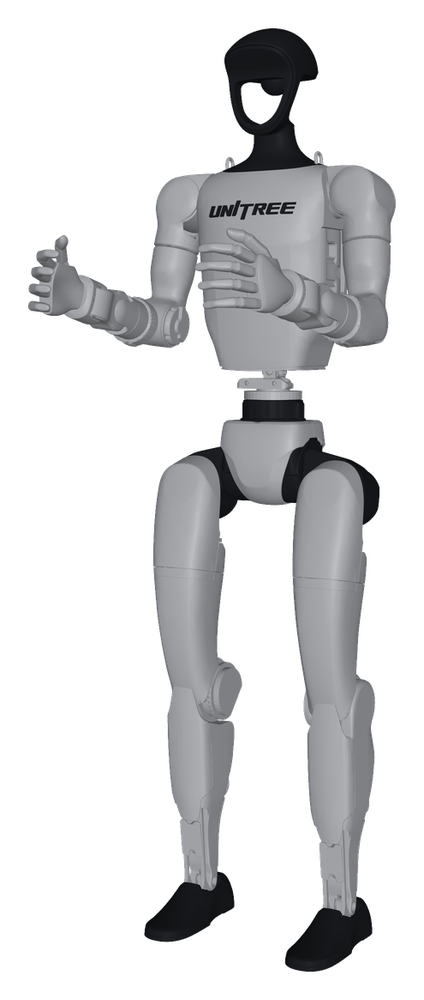
이 설명서에 대하여
| 대상 | Unitree G1 EDU (23자유도 / 29자유도) 개발자. G1 기본형은 2차 개발을 지원하지 않습니다 |
| 근거 문서 | Unitree 문서 센터 G1 SDK Development Guide 전 45쪽 (2026-11-06 수집). |
| SDK 대조 | unitree_sdk2 8e1b927 (2026-10-30) · unitree_sdk2_python 814556d. 일부 장은 이전 판 a4e2d9e (2026-03-12)와의 차이를 함께 적었습니다 |
| 함께 보는 책 | Unitree G1 운용 설명서 — 안전 수칙, 리모컨 · 운용 모드, 시작 · 종료 순서, 디버그 모드 진입 |
| 판 | 한국어판 · 2026.11.16 |
| 문의 | go.support@wego-robotics.com |
본문의 문서 표시는 Unitree 공식 문서의 내용이고, SDK 표시는 SDK 소스 코드에서 직접 확인한 내용입니다. 두 내용이 다를 때는 SDK 소스를 따르고 차이를 적었습니다. 29 표시는 29자유도 모델에만 해당합니다.
개발용 컴퓨터의 계정 정보는 이 설명서에 싣지 않습니다. 기술 지원 담당자가 따로 안내하며, 로봇을 외부 네트워크에 연결하기 전에 기본 비밀번호를 바꾸십시오.
관절을 움직이는 프로그램은 로봇을 보호 거치대에 매단 상태에서 시험하고, 리모컨 담당자가 언제든 댐핑(L2 + B)을 누를 수 있게 하십시오.
© WeGo Robotics. 표지의 G1 이미지는 Unitree가 공개한 로봇 메시를 MuJoCo로 렌더링한 것이며, 따로 표시가 없는 기술 도면은 Unitree Robotics 문서에서 가져왔습니다.
목차
- 01개발 환경 준비
- 02통신 구조와 DDS
- 03관절 · 상태 데이터와 오류 코드
- 04저수준 제어
- 05고수준 제어 — 보행 · 팔
- 06서비스 관리 · 모드 전환 · 시간 동기 · 강화학습 예제
- 07다관절 손
- 08센서 · SLAM 내비게이션
- 09음성 · 오디오
- 부록빠른 참조
개발 환경 준비
G1 개발은 Ubuntu PC를 로봇 어깨의 이더넷 포트에 연결하거나, EDU 모델에 들어 있는 개발용 컴퓨터(PC2)에 직접 프로그램을 올려서 합니다.
이 장에서는 네트워크 설정, unitree_sdk2(C++) · unitree_sdk2_python 설치, 모델 파일, 그리고 PC2(Jetson Orin NX)의
Wi-Fi · 복구 · 확장 핀 사용법을 다룹니다.
개발 형태 한눈에 문서
| 실행 위치 | 주소 | 설명 |
|---|---|---|
| 외부 개발 PC | 192.168.123.99 (권장) | Ubuntu 20.04 권장. Mac · Windows는 지원하지 않습니다. 어깨 RJ45 포트와 유선으로 연결합니다. |
| PC2 · 개발 컴퓨터 (EDU) | 192.168.123.164 | Jetson Orin NX (aarch64). 케이블 없이 로봇 단독으로 프로그램을 돌릴 때 씁니다. 계정 정보는 기술 지원이 안내합니다. |
| PC1 · 운동 제어 | 192.168.123.161 | Unitree 공식 서비스 전용이라 개발에 쓸 수 없습니다. 연결 확인(ping) 대상으로만 씁니다. |
어느 쪽이든 프로그램은 같은 DDS 네트워크로 로봇을 제어합니다. unitree_sdk2는 lib/x86_64와 lib/aarch64 라이브러리를 함께 담고 있어
PC와 PC2 양쪽에서 빌드됩니다. SDK
네트워크 설정 문서
- 같은 대역으로 설정PC를 어깨 RJ45 포트(또는 G1 스위치)에 케이블로 연결하고, 그 네트워크 카드의 주소를
192.168.123.X/24로 수동 설정합니다. 권장값은192.168.123.99이며, 다른 장치와 겹치지 않으면 어떤 주소든 됩니다 (Unitree 문서의 그림 예시는.222). - 연결 확인
ping 192.168.123.161에 응답이 오면 PC와 로봇이 연결된 것입니다. - 네트워크 카드 이름 적기
ifconfig에서 192.168.123 대역 주소가 붙은 카드 이름(예:enxf8e43b808e06)을 찾습니다. 거의 모든 예제가 이 이름을 첫 인자로 받습니다.
디버깅 준비 문서
- 거치대에 고정G1을 보호용 거치대(현가대)에 매달고, 거치대 바닥의 전방향 바퀴 네 개를 모두 잠급니다.
- 유선 연결개발 PC를 이더넷 케이블로 G1 어깨의 RJ45 포트에 연결합니다. 필요하면 USB 이더넷 어댑터를 씁니다.
- 모드 확인저수준 예제는 디버그 모드(내장 운동 제어 정지)에서만 동작합니다. 디버그 모드 진입은 운용 설명서의 리모컨 장을 따릅니다.
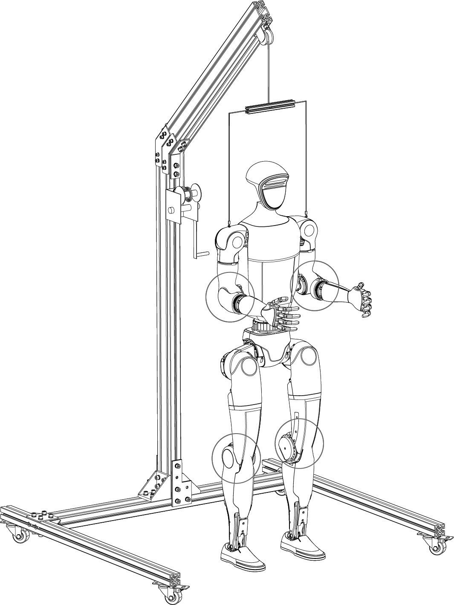
저수준 예제(g1_ankle_swing_example 등)는 여러 관절을 동시에 움직입니다. 디버그 모드의 로봇은 스스로 균형을 잡지 않으므로,
반드시 거치대에 매단 상태에서 실행하십시오.
unitree_sdk2 설치 · 빌드 문서 SDK
저장소: https://github.com/unitreerobotics/unitree_sdk2. 이 설명서는 커밋 8e1b927(2026-10-30)을 기준으로 확인했습니다.
# 1) 의존 패키지 (문서 · SDK README 동일. 최종 목록은 README 기준) sudo apt-get update sudo apt-get install -y cmake g++ build-essential libyaml-cpp-dev libeigen3-dev \ libboost-all-dev libfmt-dev # 2) 예제 빌드 — 실행 파일은 build/bin 에 생깁니다 cd unitree_sdk2 && mkdir build && cd build cmake .. && make # 3) 라이브러리 설치 (자기 프로그램에서 쓰려면) sudo make install # 기본 경로 cmake .. -DCMAKE_INSTALL_PREFIX=/opt/unitree_robotics && sudo make install # 경로 지정
자기 CMake 프로젝트에서는 find_package(unitree_sdk2) 후 target_link_libraries(<타깃> unitree_sdk2)로 연결합니다.
/opt/unitree_robotics가 아닌 곳에 설치했다면 그 경로를 CMAKE_PREFIX_PATH에 넣으십시오. SDK는 C++17로 빌드됩니다.
예제를 빼고 빌드하려면 -DBUILD_EXAMPLES=OFF를 줍니다.
- 문서는 예제가
build에 생긴다고 쓰지만, 실제 출력 위치는build/bin입니다. - README가 안내하는
example/cmake_sample폴더는 이 커밋에 없습니다. 위의find_package방식을 쓰십시오.
G1 예제 실행 파일 SDK
실행 파일 (build/bin) | 소스 · 내용 |
|---|---|
g1_ankle_swing_example | low_level/ · 디버그 모드 저수준 제어. 영점 복귀 후 발목을 PR · AB 모드로 흔듭니다 |
g1_dual_arm_example | low_level/ · 양팔 저수준 제어 (yaml-cpp 0.6 이상이 있을 때만 빌드) |
g1_termination | low_level/terminations.cpp (Boost program_options가 있을 때만 빌드) |
g1_arm5_sdk_dds_example · g1_arm7_sdk_dds_example | high_level/ · rt/arm_sdk 팔 덧씌움 (23자유도 · 29자유도) |
g1_arm_action_example | high_level/ · 팔 동작 서비스 (Boost program_options 필요) |
g1_loco_client | high_level/g1_loco_client_example.cpp · 고수준 이동 명령 |
g1_userctrl_dds_example | high_level/ · 사용자 개발 모드 (rt/user_lowcmd) |
g1_audio_client_example | audio/ · TTS · 볼륨 · 조명 · 재생 · 마이크 (9장) |
g1_dex3_example | dex3/ · Dex3-1 손 |
g1_hand_sdk_example | high_level/ · rt/hand_sdk로 손 모터 4개에 명령 주입 |
g1_agv_client_example · g1d_arm_example · g1d_height_control · g1d_waist_example | g1d/ · G1D용 AGV 클라이언트 · 팔 · 기둥 높이 · 허리 pitch 예제. Unitree G1 문서에는 G1D 설명이 없습니다 |
test_publisher · test_subscriber | example/helloworld/ · DDS 발행 · 구독 기본 예제 (2장) |
# 첫 실행: 로봇을 매달고 디버그 모드인지 확인한 뒤
./build/bin/g1_ankle_swing_example enxf8e43b808e06
unitree_sdk2_python 설치 SDK
Python SDK는 C++ SDK와 같은 토픽 · 메시지 · 요청/응답 구조를 씁니다. G1용 메시지는 unitree_sdk2py.idl.unitree_hg에 있습니다
(unitree_go는 Go2 · B2 · H1용). 확인 기준: 커밋 814556d(2026-09-21).
| 요구 사항 | 값 |
|---|---|
| Python | 3.8 이상 |
| 패키지 | cyclonedds==0.10.2 · numpy · opencv-python (설치 시 자동) |
sudo apt install python3-pip git clone https://github.com/unitreerobotics/unitree_sdk2_python.git cd unitree_sdk2_python && pip3 install -e . # "Could not locate cyclonedds" 오류가 나면: cyclonedds 0.10.x 를 직접 빌드한 뒤 git clone https://github.com/eclipse-cyclonedds/cyclonedds -b releases/0.10.x cd cyclonedds && mkdir build install && cd build cmake .. -DCMAKE_INSTALL_PREFIX=../install && cmake --build . --target install export CYCLONEDDS_HOME="$HOME/cyclonedds/install" # 그다음 다시 pip3 install -e .
G1 Python 예제 (example/g1/) | 내용 (인자: 네트워크 카드 이름) |
|---|---|
low_level/g1_low_level_example.py | 저수준 발목 흔들기 (PR · AB 모드) |
high_level/g1_arm5_sdk_dds_example.py · g1_arm7_sdk_dds_example.py | rt/arm_sdk 팔 덧씌움 |
high_level/g1_arm_action_example.py · g1_loco_client_example.py | 팔 동작 · 이동 클라이언트 |
audio/g1_audio_client_example.py · g1_audio_client_play_wav.py | 음성 · 조명 · WAV 재생 (9장) |
example/helloworld/publisher.py · subscriber.py | DDS 기본 예제 |
example/wireless_controller/wireless_controller.py | 리모컨 값 읽기 (3장) |
g1_low_level_example.py는 시작하자마자 MotionSwitcherClient.ReleaseMode()를 반복 호출해 내장 운동 제어를 끕니다.
서 있던 로봇은 균형을 잃습니다. 반드시 매달아 두고 실행하십시오. g1_audio_client_example.py도 중간에 LocoClient.WaveHand()로
손을 흔드니 팔 주변을 비우십시오. SDK
모델 파일 문서
URDF는 https://github.com/unitreerobotics/unitree_ros/tree/master/robots/g1_description에 모든 G1 버전이 있습니다.
단순화 STEP 모델은 Unitree 문서 Get SDK 쪽에서 구성별로 내려받습니다 (V1.0 · V2.0).
| 구성 (G1-EDU) | 내용 |
|---|---|
| Standard | 23자유도 |
| Advanced | 29자유도 |
| Ultimate A · B | 29자유도 + Dex3-1 세 손가락 손 2개 (A: 촉각 없음, B: 촉각 포함) |
| Ultimate C · D | 29자유도 + Inspire 손 2개 (C: 문서 표기 DFQ, D: FTP) |
PC2에 프로그램 배포 문서
케이블 없이 시험하려면 프로그램을 PC2에 올립니다 (Unitree 페이지에 숨겨진 절의 내용).
- 연결 확인개발 PC를 G1 스위치에 연결하고
ping 192.168.123.164를 확인합니다. - 로그인 · 빌드기술 지원이 안내한 초기 계정으로
ssh접속합니다. 의존성 문제를 피하려면 PC2에서 직접 컴파일하는 것을 권장합니다. - 백그라운드 실행
nohup ./실행파일 > log.txt &로 띄우고 정상 동작을 확인한 뒤 케이블을 뽑습니다. 저수준 개발이면 디버그 모드에 들어가 있어야 합니다.
PC2 Wi-Fi 설정 문서
AP 모드 (PC2가 핫스팟)
git clone https://github.com/oblique/create_ap
cd create_ap && sudo make install
sudo apt install -y hostapd dnsmasq network-manager
# wlan0 으로 핫스팟, eth0 으로 인터넷 공유
sudo create_ap wlan0 eth0 MyAccessPoint
STA 모드 · nmcli
sudo ifconfig wlan0 up
sudo nmcli radio wifi on
nmcli radio wifi # enabled 확인
nmcli device wifi connect <SSID> password <비밀번호>
STA 모드 · wpa_cli
wpa_cli # 기본으로 wlan0 선택 > add_network # 번호 반환, 예: 1 > set_network 1 ssid "<SSID>" > set_network 1 psk "<비밀번호>" > enable_network 1 > save_config > status # 연결 확인 > quit
wpa_cli를 쓸 수 없으면 nmcli 방식을 쓰십시오. 전시장처럼 무선 간섭이 심한 곳에서는 연결이 실패할 수 있습니다.
공장 이미지 복구 문서
복구 순서 자체는 Unitree의 Go2 NX 이미지 복구 문서를 따릅니다. NVMe를 PC2에서 꺼내 M.2 외장 케이스로 Ubuntu PC에 연결한 뒤 이미지를 씁니다. 개인 백업 이미지가 없으면 Unitree 공장 이미지를 씁니다.
| 항목 | 값 |
|---|---|
| 이미지 파일 | g1_nx_Jetpack5.1.1_20250930.img.bz2 |
| 내려받기 | https://drive.google.com/file/d/10wDS4WxQgYGx3H1RsYO6oMT5oRpet8MB/view?usp=drive_link |
lsblk # 외장 케이스에 넣은 NVMe 의 장치 이름부터 확인
bzip2 -dc g1_nx_Jetpack5.1.1_20250930.img.bz2 | sudo dd of=/dev/sdc status=progress
문서 예시의 /dev/sdc는 그 PC에서의 이름일 뿐입니다. 다른 디스크를 지정하면 그 디스크가 지워집니다. lsblk로 용량을 보고 NVMe를 정확히 고르십시오.
디스크 확장 (GParted)
이미지를 쓴 뒤 인식 용량이 작게 보이면, 같은 Ubuntu PC에서 파티션을 넓힙니다 (sudo apt-get install gparted).
- GParted 실행
sudo gparted. 처음 뜨는 대화 상자에서 Fix를 고릅니다. - 디스크 선택오른쪽 위에서 G1 시스템을 쓴 디스크로 바꿉니다. 끝에 할당되지 않은 공간이 보입니다.
- 크기 조정시스템 파티션(문서 예:
/dev/sdb1)을 오른쪽 클릭 → Resize/Move → 막대를 끝까지 끌고 Resize/Move를 누릅니다. - 적용체크 표시 아이콘 → Apply → 완료되면 Close. 디스크를 안전하게 분리해 G1에 다시 장착합니다.
복구 후 Wi-Fi 드라이버
g1_nx_Jetpack5.1.1_20250930 이미지는 Wi-Fi 드라이버를 이미 담고 있어 이 절차가 필요 없습니다. 그보다 오래된 이미지로 복구했다면 설치합니다.
sudo apt update sudo apt install dkms debhelper build-essential devscripts libncurses-dev flex bison libssl-dev sudo dpkg -i ./rtl8852bu-dkms_1.19.14_arm64.deb # 문서의 WIFI Driver Package 압축 안 sudo tail -f /var/lib/dkms/rtl8852bu/1.19.14/build/make.log # 진행 확인 (보통 20~30분) sudo reboot ifconfig -a # wlan0 이 보이면 성공
EDU+ · NX 패치 문서
EDU+ 모델에서 앱(Go 화면)으로 깊이 카메라 영상이 보이지 않을 때의 절차입니다. 현재 출하분은 관련 서비스가 기본 설치되어 있으므로, 먼저 목 뒤 USB-C 케이블이 어깨의 Type-C 포트에 꽂혀 있는지 확인하십시오. 그래도 안 되면 NX에 패치 파일이 빠진 경우입니다.
- 복사문서의 NX System Patch(
g1plus_pc4_unitree_install.zip)를 내려받아scp ./g1plus_pc4_unitree_install.zip unitree@192.168.123.164:~/ - 접속 · root 전환
ssh unitree@192.168.123.164후sudo su root. 비밀번호는 기술 지원이 안내합니다. - 설치아래 명령을 그대로 실행합니다.
- 확인
ps -ef | grep "master_service" | grep -v grep에 프로세스가 보이면 성공입니다. - 마무리기술 지원에 연락해 Patch PC4 · Video Hub PC4 구성 요소를 최신으로 올리고 로봇을 다시 시작합니다.
unzip g1plus_pc4_unitree_install.zip
chmod -R 777 /home/unitree/g1plus_pc4_unitree_install
cd /home/unitree/g1plus_pc4_unitree_install/
rm /unitree/ -rf # 기존 /unitree 서비스 폴더를 지웁니다 — 이 절차에서만
./install
어깨 보드 GPIO · UART · I2C 문서
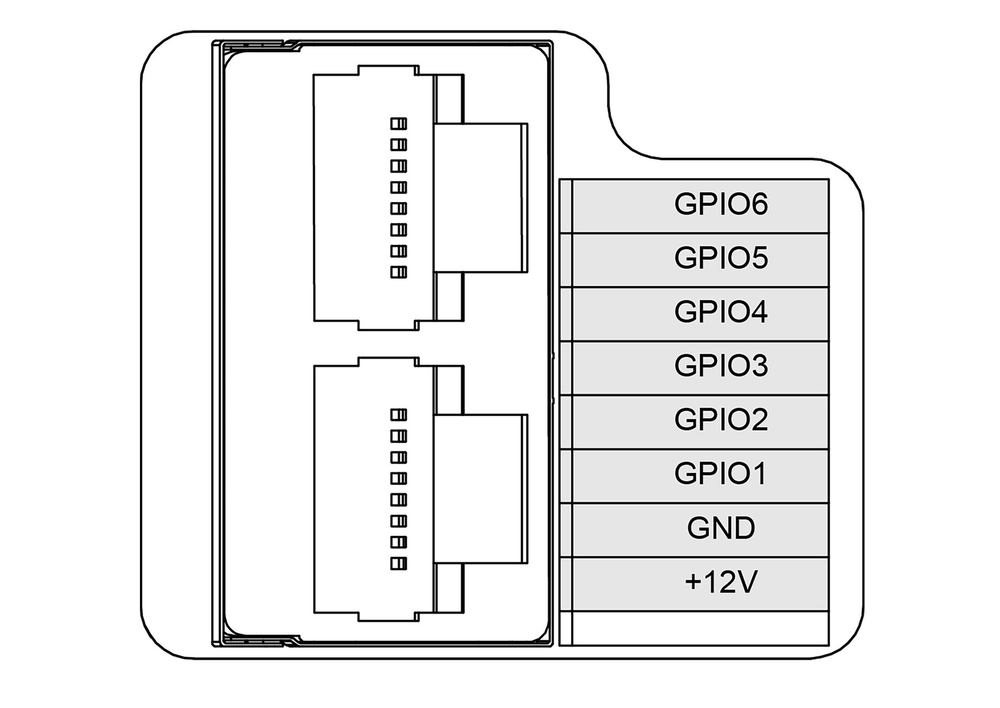
| 핀 | 부팅 후 기능 | 사용 |
|---|---|---|
| GPIO1 · 2 | UART TXD · RXD | /dev/ttyTHS0, 9600 bps 8N1 |
| GPIO3 · 4 | I2C SCL · SDA | 버스 0 |
| GPIO5 · 6 | 범용 GPIO | sysfs 330 · 331 (PCC.02 · PCC.03) |
# UART: 보내기 / 받기 echo "test" > /dev/ttyTHS0 cat /dev/ttyTHS0 # I2C: 장치 찾기 (문서 예시에는 0x50 에 장치가 보임) i2cdetect -y -r 0
GPIO · sysfs (root 필요)
순서는 초기화(export) → 방향 설정 → 값 쓰기/읽기 → 해제(unexport)입니다. 출력은 고(3.3 V) · 저(0 V) 두 레벨입니다.
su root echo 330 > /sys/class/gpio/export # GPIO5 (GPIO6 은 331) echo out > /sys/class/gpio/PCC.02/direction # 입력은 in (GPIO6 은 PCC.03) echo 1 > /sys/class/gpio/PCC.02/value # 1 = 3.3 V, 0 = 0 V cat /sys/class/gpio/PCC.02/value # 입력 모드에서 레벨 읽기 (0/1) cat /sys/class/gpio/PCC.02/direction # 현재 방향 확인 echo 330 > /sys/class/gpio/unexport # 다 쓰면 해제
GPIO · libgpiod (root 불필요)
| GPIO | sysfs | libgpiod (칩 · 번호) |
|---|---|---|
| GPIO5 | PCC.02 | gpiochip1 14 |
| GPIO6 | PCC.03 | gpiochip1 15 |
sudo apt install gpiod # 인터넷 연결 필요 gpioset gpiochip1 14=1 # 출력 모드로 바꾸고 고 레벨 (=0 이면 저) gpioget gpiochip1 14 # 입력 모드로 바꾸고 레벨 읽기 gpiodetect ; gpioinfo 1 # 칩 목록 · 칩 1 의 핀 이름과 상태
G1에는 GPIO 칩이 두 개 있으며 GPIO5 · 6만 칩 1에, 나머지는 칩 0에 있습니다. libgpiod는 사용 가능 상태 전환을 알아서 처리합니다.
통신 구조와 DDS
G1 안의 모듈들은 DDS로 데이터를 주고받고, 개발자도 같은 DDS 네트워크에 붙어 로봇을 읽고 제어합니다.
이 장은 G1의 시스템 구조, unitree_sdk2가 DDS 위에 얹은 채널 · RPC API, 전체 토픽 목록, 그리고 ROS 2에서 같은 토픽을 쓰는 방법을 정리합니다.
두 가지 통신 방식 문서
| 방식 | 쓰임 |
|---|---|
| 발행 / 구독 (토픽) | 받는 쪽이 토픽을 구독하면 보내는 쪽이 구독자에게 메시지를 보냅니다. 중 · 고주파 연속 데이터용 (관절 상태 · 명령 등) |
| 요청 / 응답 (RPC) | 요청을 보내고 답을 받는 문답 방식. 드문 데이터 조회나 기능 전환용 (모드 전환, 음성 재생 등) |
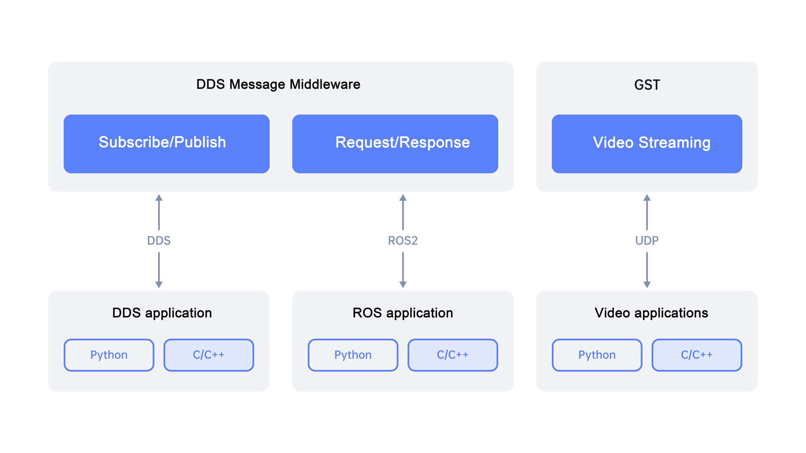
요청/응답은 두 가지로 부릅니다. API 호출은 REST API처럼 요청 내용과 요청 토픽을 채워 보내고 응답 토픽에서 답을 받습니다.
응답은 방송(broadcast)되며, 요청과 응답의 짝은 UUID로 맞춥니다. 함수 호출은 API 호출을 함수로 감싼 문법적 편의로,
LocoClient · AudioClient 같은 클라이언트 클래스가 이것입니다. 개발 도구는 unitree_sdk2(C++)와 unitree_sdk2_python입니다.
시스템 구조 문서
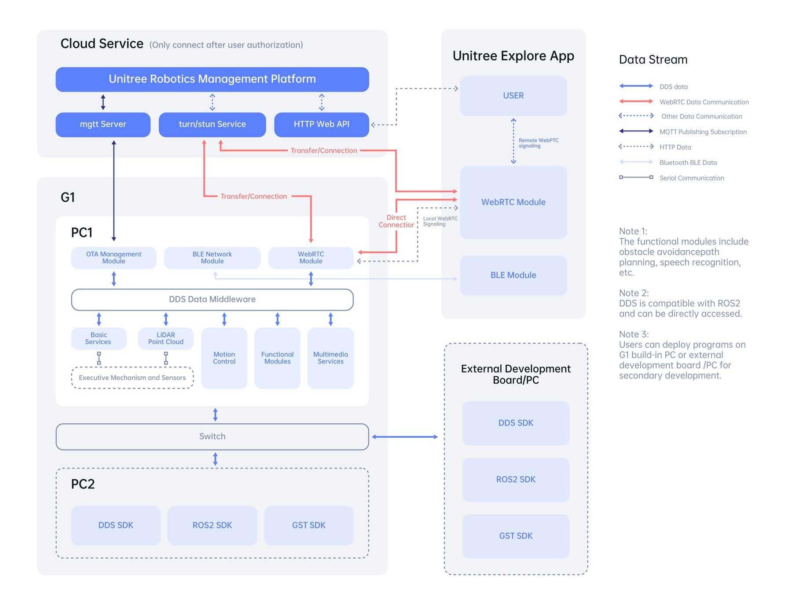
| 구성 | 역할 |
|---|---|
| 클라우드 서비스 | 사용자가 허락한 경우에만 연결합니다. ① 운행 데이터(개인정보 제외) 수집 · 고장 감지 · 통계 ② WebRTC 원격 조작 — 영상 · 제어 트래픽은 P2P 또는 TURN 서버로 중계되며 서버가 수집 · 분석하지 않음 ③ 시스템 업그레이드 |
| 클라우드 통신 | MQTT: 기기와 IoT 연결, 고장 감시 · 업그레이드 · WebRTC 시그널링 전달. HTTP: 앱 · 웹과 연결해 사용자-로봇 바인딩. TURN/STUN: WebRTC P2P 연결 보조, 불가하면 서버 중계 |
| G1 · OTA 모듈 | MQTT로 클라우드와 통신. 고장 정보 업로드 · 업그레이드 · WebRTC 시그널링 |
| G1 · WebRTC 모듈 | 앱과의 주 데이터 통로: 음성 · 영상, 라이다 점군, 운동 상태, 제어 명령 |
| G1 · BLE | 앱과 처음 연결할 때 네트워크 설정 · 보안 인증 |
| G1 · DDS | 기능 모듈 사이 통신의 대부분. DDS IDL은 ROS 2와 호환되므로(맞는 RMW 선택 필요) EDU 모델은 DDS 또는 ROS 2로 인터페이스를 부를 수 있습니다 |
| G1 · 센서 | 모터 · 라이다 등 센서 데이터는 직렬 통신으로 모은 뒤 DDS 계층으로 전달됩니다 |
| G1 · PC1 / PC2 | PC1은 Unitree 운동 제어 전용으로 공개되지 않습니다. 2차 개발은 PC2(192.168.123.164)에서만 합니다. 초기 계정은 기술 지원이 안내합니다 |
| 앱 (Unitree Explore) | HTTP Web API로 사용자 관리 · 로봇 바인딩 · WebRTC 연결 수립, BLE로 네트워크 설정, WebRTC로 영상 · 점군 · 상태 · 제어 |
| 개발 인터페이스 | ① DDS (C++ · Python) ② ROS 2 ③ GST (영상 전송 전용). 프로그램은 G1 내장 PC 또는 외부 개발 보드 · PC에 배포할 수 있습니다 |
unitree_sdk2와 DDS 문서 SDK
DDS(Data Distribution Service)는 OMG가 정한 분산 통신 규격으로, 발행/구독 모델 위에 여러 QoS 정책을 두어 실시간 데이터 배포를 보장합니다.
unitree_sdk2는 CycloneDDS 위에 한 겹을 씌워 QoS 설정, 간단한 채널 API, 그리고 DDS 토픽 기반 RPC를 제공합니다.
RPC 요청은 rt/api/<서비스>/request, 응답은 rt/api/<서비스>/response 토픽으로 오가며
(channel_namer.hpp의 접두사 · 접미사 상수), 메시지 타입은 unitree_api::msg::dds_::Request_ · Response_입니다. SDK
| 서비스 이름 | 클라이언트 (G1) | 서비스 이름 | 클라이언트 (G1) |
|---|---|---|---|
sport | g1::LocoClient | voice | g1::AudioClient (9장) |
arm | g1::G1ArmActionClient | agv | g1::AgvClient |
motion_switcher | MotionSwitcherClient (Python 예제에서 사용) |
ChannelFactory 문서 SDK
unitree::robot::ChannelFactory는 DDS 토픽 채널을 만드는 싱글턴입니다. 채널을 쓰기 전에 반드시 한 번 초기화해야 합니다.
헤더: unitree/robot/channel/channel_factory.hpp.
| 함수 | 설명 | 반환 · 비고 |
|---|---|---|
static ChannelFactory* Instance() | 싱글턴 포인터를 얻습니다 | 정적 포인터 |
void Init(int32_t domainId, const std::string& networkInterface = "") | domainId: DdsParticipant의 도메인 ID (보통 0). networkInterface: 네트워크 카드 이름. 비우면 자동 선택 | 없음. 예: Init(0, "enxf8e43b808e06") |
void Init(const std::string& configFileName = "") | 설정 파일로 초기화 | 없음 |
void Init(const common::JsonMap& jsonMap) | JsonMap 설정으로 초기화 | 없음 |
template<MSG> ChannelPtr<MSG> CreateSendChannel(const std::string& name) | 타입 MSG의 송신 채널을 이름으로 만듭니다 | ChannelPtr<MSG> |
template<MSG> ChannelPtr<MSG> CreateRecvChannel(const std::string& name, std::function<void(const void*)> callback, int32_t queuelen = 0) | callback: 메시지 도착 시 호출. queuelen: 메시지 캐시 큐 길이, 0이면 큐를 쓰지 않음 | ChannelPtr<MSG>. 콜백 처리가 길면 큐를 켜서 DDS 콜백 스레드를 막지 마십시오 |
void Release() | ChannelFactory 정적 자원 해제 | ChannelFactory::Instance()->Release() |
ChannelPublisher 문서 SDK
template<typename MSG> class ChannelPublisher는 지정 타입의 메시지를 발행합니다. 내부에서 CreateSendChannel을 쓰므로
먼저 ChannelFactory를 초기화해야 합니다. 스마트 포인터 별칭: ChannelPublisherPtr<MSG>.
| 함수 | 설명 | 반환 · 비고 |
|---|---|---|
explicit ChannelPublisher(const std::string& channelName) | 토픽 이름으로 생성 | 소멸자에서 정리 |
void InitChannel() | 채널을 만들어 송신 준비 | 없음 |
bool Write(const MSG& msg, int64_t waitMicrosec = 0) | 메시지 한 개를 보냅니다. waitMicrosec: 대기 시간(µs) | true 성공 · false 실패 (채널 미초기화 포함) |
void CloseChannel() | 채널을 닫습니다 | 없음 |
const std::string& GetChannelName() const | 토픽 이름 | 문자열 |
ChannelSubscriber 문서 SDK
template<typename MSG> class ChannelSubscriber는 지정 타입의 메시지를 구독합니다. 내부에서 CreateRecvChannel을 쓰므로
역시 ChannelFactory 초기화가 먼저입니다. 별칭: ChannelSubscriberPtr<MSG>.
| 함수 | 설명 | 반환 · 비고 |
|---|---|---|
explicit ChannelSubscriber(const std::string& channelName) | 토픽 이름으로 생성 | |
explicit ChannelSubscriber(const std::string& channelName, const std::function<void(const void*)>& handler, int64_t queuelen = 0) | 핸들러 · 큐 길이까지 지정해 생성 | |
void InitChannel(const std::function<void(const void*)>& handler, int64_t queuelen = 0) | handler: 메시지 도착 콜백 (const void*를 MSG로 형변환). queuelen: 캐시 큐 길이, 0이면 끔 | 콜백이 오래 걸리면 큐를 켜십시오 |
void InitChannel() | 마지막에 준 핸들러 · 큐 길이로 다시 엽니다 | 핸들러가 없으면 예외 (subscribe handler is invalid) |
void CloseChannel() | 채널을 닫습니다 | 없음 |
int64_t GetLastDataAvailableTime() const | 마지막 메시지 수신 시각 | 미초기화면 −1. 아니면 시스템 시작부터 단조 증가하는 µs 타임스탬프 |
const std::string& GetChannelName() const | 토픽 이름 | 문자열 |
- 문서의
Init(domainId, networkInterface, bool enableSharedMemory = false)에서 세 번째 인자는 SDK에 없습니다. SDK는 대신 설정 파일 · JsonMap을 받는Init두 개를 더 둡니다. Write의waitMicrosec, 핸들러를 받는 Subscriber 생성자,GetChannelName()은 SDK에만 있습니다.- 문서는 Subscriber가
CreateSendChannel을 쓴다고 적었지만 실제로는CreateRecvChannel입니다.
서비스 클라이언트 공통 API 문서 SDK
로봇 안의 서비스들은 RPC 클라이언트로 기능을 엽니다. 모든 클라이언트는 unitree::robot::Client를 상속하며 다음 함수를 공유합니다.
| 함수 | 설명 | 반환 · 비고 |
|---|---|---|
void Init() | 클라이언트 초기화 (API 버전 설정 · API 등록) | 호출 전 ChannelFactory 초기화 필요 |
void SetTimeout(float timeout) | RPC 요청 시간 제한, 초 단위 | 설정하지 않으면 1초 |
void WaitLeaseApplied() | 임대(lease)를 신청하고 받을 때까지 대기 | lease를 켠 클라이언트에서만 유효 |
int64_t GetLeaseId() | 받은 lease ID SDK | |
const std::string& GetApiVersion() const | 클라이언트 API 버전 | 문자열 |
std::string GetServerApiVersion() | 서버 API 버전 | 문자열 (문서는 const std::string&로 표기) |
RPC 공통 오류 코드 SDK
| 코드 | 뜻 | 반환 주체 | 코드 | 뜻 | 반환 주체 |
|---|---|---|---|---|---|
| 0 | 성공 | — | 3201 | 응답 송신 오류 | 서버 내부 (클라이언트로 오지 않음) |
| 3001 | 알 수 없는 오류 | 클라이언트 · 서버 | 3202 | 서버 내부 오류 | 서버 |
| 3102 | 요청 송신 오류 | 클라이언트 | 3203 | 서버에 구현되지 않은 API | 서버 |
| 3103 | 등록되지 않은 API | 클라이언트 | 3204 | API 인자 오류 | 서버 |
| 3104 | 요청 시간 초과 | 클라이언트 | 3205 | 요청 거부 (lease) | 서버 |
| 3105 | 요청 · 응답 불일치 | 클라이언트 | 3206 | lease 없음 (서버 캐시에 없음) | 서버 |
| 3106 | 응답 데이터 오류 | 클라이언트 | 3207 | lease 이미 있음 | 서버 |
| 3107 | lease 무효 | 클라이언트 |
예제 · 발행과 구독 문서 SDK
예제 위치: unitree_sdk2/example/helloworld/ (publisher.cpp · subscriber.cpp · 메시지 정의 HelloWorldData.hpp).
빌드하면 test_publisher · test_subscriber가 생깁니다. 토픽 이름은 TopicHelloWorld입니다.
// 발행 ChannelFactory::Instance()->Init(0, argv[1]); // argv[1] = 네트워크 카드 ChannelPublisher<HelloWorldData::Msg> pub("TopicHelloWorld"); pub.InitChannel(); pub.Write(HelloWorldData::Msg(GetCurrentTimeMillisecond(), "HelloWorld.")); // 구독 void Handler(const void* msg) { auto* pm = (const HelloWorldData::Msg*)msg; // MSG 로 형변환 std::cout << pm->userID() << " " << pm->message() << std::endl; } ChannelSubscriber<HelloWorldData::Msg> sub("TopicHelloWorld"); sub.InitChannel(Handler, 1); // 큐 길이 1 sub.CloseChannel(); // 닫았다가 sub.InitChannel(); // 같은 인자로 다시 열 수 있음
Unitree의 DDS Communication Routine 페이지판은 네트워크 카드 이름을 첫 인자로 받지만, 현재 SDK의 helloworld 예제는 Init(0)(카드 자동 선택)이며 인자를 받지 않습니다.
로봇과 통신할 때는 항상 카드 이름을 지정하십시오.
Python 대응 API SDK
모듈: unitree_sdk2py.core.channel. 이름과 흐름은 C++과 같고, 타입을 생성자 인자로 넘깁니다.
| 함수 | 설명 | 반환 · 비고 |
|---|---|---|
ChannelFactoryInitialize(id=0, networkInterface=None) | 도메인 · 네트워크 카드로 초기화 (None이면 자동) | 실패 시 예외 |
ChannelPublisher(name, type) · .Init() · .Close() | 발행자 생성 · 열기 · 닫기 | |
.Write(sample, timeout=None) | 보냅니다. timeout(초)을 주면 구독자가 연결될 때까지 그만큼 기다립니다 | True / False (시간 안에 구독자가 없으면 False) |
ChannelSubscriber(name, type) · .Init(handler=None, queueLen=0) · .Close() | 구독자 생성 · 열기 · 닫기. handler를 주면 수신 시 호출 | |
.Read(timeout=None) | handler 없이 열었을 때 샘플 하나를 꺼냅니다 (take_one) | 샘플 또는 None |
from unitree_sdk2py.core.channel import ChannelFactoryInitialize, ChannelSubscriber
from unitree_sdk2py.idl.unitree_hg.msg.dds_ import LowState_
ChannelFactoryInitialize(0, "enxf8e43b808e06")
sub = ChannelSubscriber("rt/lowstate", LowState_)
sub.Init() # 핸들러 없이 열고
msg = sub.Read(0.01) # 제어 주기마다 직접 꺼내기
Python 핸들러는 CycloneDDS의 on_data_available 리스너에서 한 번에 한 샘플씩 꺼냅니다. WeGo에서는 부하가 큰 프로세스에서 이 콜백이 첫 샘플 이후
다시 불리지 않는 현상을 겪었고, 핸들러 없이 Init()한 뒤 별도 스레드에서 Read()로 폴링하는 방식으로 해결했습니다.
G1 토픽 목록 문서
타입 그룹 hg = unitree_hg::msg::dds_, go2 = unitree_go::msg::dds_. rt/lf/…는 같은 데이터의 저주파판입니다.
| 토픽 | 타입 | 내용 |
|---|---|---|
rt/lowstate · rt/lf/lowstate | hg LowState_ | 저수준 상태: IMU · 모터 등 (3장) |
rt/lowcmd | hg LowCmd_ | 저수준 관절 명령 (디버그 모드) |
rt/lf/bmsstate | hg BmsState_ | 배터리 상태 |
rt/lf/mainboardstate | hg MainBoardState_ | 메인보드 상태 |
rt/secondary_imu · rt/lf/secondary_imu | hg IMUState_ | 몸통 IMU |
rt/odommodestate · rt/lf/odommodestate | go2 (아래 참고) | 오도메트리 (500 Hz · 20 Hz) |
rt/dex3/left/cmd · rt/dex3/right/cmd | hg HandCmd_ | Dex3-1 왼손 · 오른손 명령 |
rt/dex3/left/state · rt/dex3/right/state | hg HandState_ | Dex3-1 손 상태 |
rt/lf/dex3/left/state · rt/lf/dex3/right/state | hg HandState_ | Dex3-1 손 상태 · 저주파 (SDK g1_dex3_example이 구독) |
- Unitree 표는
rt/dex3/left/state를 "저주파"로,rt/dex3/right/state를 "왼손"으로 적는 등 손 토픽 설명이 뒤섞여 있습니다. 위 표는lf규칙과 SDK 예제에 맞춰 바로잡은 것입니다. - DDS 표는
rt/odommodestate의 타입을 go2IMUState_로 적지만, 오도메트리 서비스 문서의 예제는 go2SportModeState_로 구독합니다. DDS는 타입 이름이 맞아야 연결되므로, 오도메트리 서비스 문서와 예제를 기준으로 하십시오.
다른 서비스 문서와 SDK 예제에 나오는 토픽
| 토픽 | 타입 | 내용 |
|---|---|---|
rt/arm_sdk | hg LowCmd_ | 운동 제어 중 팔 덧씌움. 가중치 = motor_cmd[29].q (0 ~ 1) SDK |
rt/user_lowcmd | hg LowCmd_ | 사용자 개발 모드에서 모든 모터 저수준 명령 SDK |
rt/sportmodestate | hg SportModeState_ | fsm_id · fsm_mode · task_id · task_time (펌웨어 1.5.1 이상) |
rt/audio_msg | std_msgs::msg::dds_::String_ | 음성 인식 결과 JSON (9장) |
rt/utlidar/cloud_livox_mid360 · rt/utlidar/imu_livox_mid360 | sensor_msgs PointCloud2_ · Imu_ | 라이다 점군 10 Hz (livox_frame) · 라이다 IMU 200 Hz |
rt/unitree/slam_mapping/points · …/odom | PointCloud2_ · nav_msgs Odometry_ | 지도 작성 중 점군 · 오도메트리 |
rt/unitree/slam_relocation/points · …/odom · …/global_map | PointCloud2_ · Odometry_ | 위치 추정 중 점군 · 오도메트리 · 전역 지도(시작 후 한 번) |
rt/slam_info · rt/slam_key_info | String_ | SLAM 실시간 방송 정보 · 실행 결과 피드백 |
rt/hand_sdk | go2 MotorCmds_ | Hand SDK: ai_sport에 손 · 그리퍼 모터 4개 명령 주입 (g1_hand_sdk_example) SDK |
rt/waistpitchcmd · rt/waistpitchstate | hg MotorCmd_ · MotorState_ | G1D 허리 pitch 명령 · 상태 (g1d_waist_example) SDK |
rt/hispeed_state | geometry_msgs Point32_ | G1D 기둥 높이 (y, m) (g1d_height_control) SDK |
rt/inspire/cmd · rt/inspire/state | go2 MotorCmds_ · MotorStates_ | Inspire DFX 손 |
rt/inspire_hand/ctrl/* · state/* · touch/* | inspire::… | Inspire FTP 손 (485 통신이면 touch 없음) |
rt/brainco/{left,right}/{cmd,state} | — | BrainCo 손 |
rt/api/<서비스>/request · /response | unitree_api Request_ · Response_ | RPC 통로 (직접 쓰지 말고 클라이언트를 쓰십시오) SDK |
Unitree는 IDL 원본 대신 CycloneDDS idlc로 생성한 메시지 정의를 제공합니다:
C++ unitree_sdk2/include/unitree/idl, Python unitree_sdk2py/idl, ROS 2 unitree_ros2/cyclonedds_ws/src/unitree.
ROS 2 연동 문서 SDK
ROS 2도 DDS를 쓰므로, SDK를 감싸지 않고도 ROS 2 메시지로 G1과 직접 통신할 수 있습니다. 저장소: https://github.com/unitreerobotics/unitree_ros2
(로컬 확인 기준 커밋 3ff13ea). 로봇의 CycloneDDS 버전은 0.10.2이므로 RMW를 CycloneDDS로 맞춰야 합니다.
| Ubuntu | ROS 2 | 비고 |
|---|---|---|
| 20.04 | Foxy | 저장소 예제의 개발 기준. CycloneDDS를 직접 빌드 |
| 22.04 | Humble | 저장소 README 권장. CycloneDDS 빌드 단계를 건너뜀 |
- 의존 패키지
sudo apt install ros-foxy-rmw-cyclonedds-cpp ros-foxy-rosidl-generator-dds-idl(README는libyaml-cpp-dev도 추가). 다른 배포판은foxy를 바꿉니다. - CycloneDDS 빌드 (Foxy)ROS 2 환경을 source하지 않은 새 터미널에서 합니다.
~/.bashrc에source /opt/ros/foxy/setup.bash가 있으면 주석 처리하십시오. - 메시지 패키지 빌드이번에는 ROS 2를 source한 뒤
colcon build.unitree_hg(G1 · H1-2) ·unitree_go·unitree_api가 빌드됩니다. - 네트워크 · setup.sh로봇 쪽 카드를
192.168.123.99/24로 설정하고,setup.sh의 카드 이름을 고칩니다. - 확인재부팅 후
source ~/unitree_ros2/setup.sh→ros2 topic list에 로봇 토픽이 보이면 됩니다.
cd ~/unitree_ros2/cyclonedds_ws/src git clone https://github.com/ros2/rmw_cyclonedds -b foxy git clone https://github.com/eclipse-cyclonedds/cyclonedds -b releases/0.10.x cd .. && colcon build --packages-select cyclonedds # 실패하면 export LD_LIBRARY_PATH=/opt/ros/foxy/lib 후 재시도 source /opt/ros/foxy/setup.bash && colcon build # unitree_go · unitree_hg · unitree_api
# ~/unitree_ros2/setup.sh source /opt/ros/foxy/setup.bash source $HOME/unitree_ros2/cyclonedds_ws/install/setup.bash export RMW_IMPLEMENTATION=rmw_cyclonedds_cpp export CYCLONEDDS_URI='<CycloneDDS><Domain><General><Interfaces> <NetworkInterface name="enp3s0" priority="default" multicast="default" /> </Interfaces></General></Domain></CycloneDDS>' # enp3s0 → 실제 카드 이름
로봇 없이 시뮬레이션 등에 쓰려면 setup_local.sh(루프백 lo) 또는 setup_default.sh(카드 지정 없음)를 source합니다.
setup.sh 내용을 ~/.bashrc에 넣어도 되지만, 여러 ROS 환경이 함께 있으면 주의하십시오.
ROS 2 쪽 토픽 이름은 DDS 이름에서 rt/를 뺀 것입니다 (rt/lowstate → /lowstate, rt/lf/dex3/left/state → /lf/dex3/left/state).
G1 관련 ROS 2 예제 SDK
| 실행 파일 | 소스 · 토픽 |
|---|---|
read_low_state_hg | lowstate (또는 lf/lowstate) 구독, unitree_hg/LowState |
read_wireless_controller | /wirelesscontroller 구독 (unitree_go/WirelessController, README는 G1 지원으로 표기) |
g1_low_level_example · g1_ankle_swing_example | /lowcmd 발행 · lowstate 구독 (ankle_swing은 secondary_imu도 구독). 디버그 모드 전용 |
g1_dual_arm_example | lowcmd · lowstate (yaml-cpp 0.6 이상일 때만 빌드) |
g1_arm_sdk_dds_example | /arm_sdk 발행 · /lowstate 구독 |
g1_arm_action_example · g1_loco_client_example · g1_audio_client_example | RPC 서비스 호출 (unitree_api 요청/응답) |
g1_dex3_example | /dex3/{left,right}/cmd 발행 · /lf/dex3/{left,right}/state 구독 |
source ~/unitree_ros2/setup.sh cd ~/unitree_ros2/example && colcon build ./install/unitree_ros2_example/bin/read_low_state_hg
lowcmd · arm_sdk를 ROS 2로 보내도 메시지 끝의 crc를 채워야 하며(예제의 common/motor_crc_hg),
저수준 예제는 디버그 모드에서 로봇을 매단 채 실행해야 합니다. 3장의 메시지 구조를 참고하십시오.
관절 · 상태 데이터와 오류 코드
rt/lowstate와 rt/lowcmd는 35칸짜리 모터 배열을 주고받고, 몇 번 칸이 어느 관절인지는 자유도 구성에 따라 정해져 있습니다.
이 장은 관절 번호, 메시지 필드, 리모컨 원시 데이터 해석법, 그리고 기기 · 모터 오류 코드 전체를 정리합니다.
몸체 관절 순서 문서 SDK
LowCmd_.motor_cmd와 LowState_.motor_state는 손을 뺀 몸체 모터 전부를 같은 순서로 담습니다. 23자유도와 29자유도의 배열 구성은 같고,
23자유도에 없는 관절의 칸(13 · 14 · 20 · 21 · 27 · 28)은 비어 있습니다. 발목과 29자유도 허리 roll · pitch는 병렬 기구라서
mode_pr에 따라 같은 칸의 뜻이 바뀝니다: 0 = PR 모드(URDF와 같은 pitch · roll 관절, 기본) · 1 = AB 모드(모터 A · B를 직접, 병렬 기구학은 사용자가 계산).
| 번호 | mode_pr = 0 (PR) | mode_pr = 1 (AB) | SDK 이름 (G1JointIndex) | 한계 (rad) |
|---|---|---|---|---|
| 0 | L_LEG_HIP_PITCH | 같음 | LeftHipPitch | −2.5307 ~ 2.8798 |
| 1 | L_LEG_HIP_ROLL | 같음 | LeftHipRoll | −0.5236 ~ 2.9671 |
| 2 | L_LEG_HIP_YAW | 같음 | LeftHipYaw | −2.7576 ~ 2.7576 |
| 3 | L_LEG_KNEE | 같음 | LeftKnee | −0.087267 ~ 2.8798 |
| 4 | L_LEG_ANKLE_PITCH | L_LEG_ANKLE_B | LeftAnklePitch / LeftAnkleB | −0.87267 ~ 0.5236 |
| 5 | L_LEG_ANKLE_ROLL | L_LEG_ANKLE_A | LeftAnkleRoll / LeftAnkleA | −0.2618 ~ 0.2618 |
| 6 | R_LEG_HIP_PITCH | 같음 | RightHipPitch | −2.5307 ~ 2.8798 |
| 7 | R_LEG_HIP_ROLL | 같음 | RightHipRoll | −2.9671 ~ 0.5236 |
| 8 | R_LEG_HIP_YAW | 같음 | RightHipYaw | −2.7576 ~ 2.7576 |
| 9 | R_LEG_KNEE | 같음 | RightKnee | −0.087267 ~ 2.8798 |
| 10 | R_LEG_ANKLE_PITCH | R_LEG_ANKLE_B | RightAnklePitch / RightAnkleB | −0.87267 ~ 0.5236 |
| 11 | R_LEG_ANKLE_ROLL | R_LEG_ANKLE_A | RightAnkleRoll / RightAnkleA | −0.2618 ~ 0.2618 |
| 12 | WAIST_YAW | 같음 | WaistYaw | −2.618 ~ 2.618 |
| 13 | WAIST_ROLL 29 | WAIST_A | WaistRoll / WaistA | −0.52 ~ 0.52 |
| 14 | WAIST_PITCH 29 | WAIST_B | WaistPitch / WaistB | −0.52 ~ 0.52 |
| 15 | L_SHOULDER_PITCH | 같음 | LeftShoulderPitch | −3.0892 ~ 2.6704 |
| 16 | L_SHOULDER_ROLL | 같음 | LeftShoulderRoll | −1.5882 ~ 2.2515 |
| 17 | L_SHOULDER_YAW | 같음 | LeftShoulderYaw | −2.618 ~ 2.618 |
| 18 | L_ELBOW | 같음 | LeftElbow | −1.0472 ~ 2.0944 |
| 19 | L_WRIST_ROLL | 같음 | LeftWristRoll | −1.972222054 ~ 1.972222054 |
| 20 | L_WRIST_PITCH 29 | 같음 | LeftWristPitch | −1.614429558 ~ 1.614429558 |
| 21 | L_WRIST_YAW 29 | 같음 | LeftWristYaw | −1.614429558 ~ 1.614429558 |
| 22 | R_SHOULDER_PITCH | 같음 | RightShoulderPitch | −3.0892 ~ 2.6704 |
| 23 | R_SHOULDER_ROLL | 같음 | RightShoulderRoll | −2.2515 ~ 1.5882 |
| 24 | R_SHOULDER_YAW | 같음 | RightShoulderYaw | −2.618 ~ 2.618 |
| 25 | R_ELBOW | 같음 | RightElbow | −1.0472 ~ 2.0944 |
| 26 | R_WRIST_ROLL | 같음 | RightWristRoll | −1.972222054 ~ 1.972222054 |
| 27 | R_WRIST_PITCH 29 | 같음 | RightWristPitch | −1.614429558 ~ 1.614429558 |
| 28 | R_WRIST_YAW 29 | 같음 | RightWristYaw | −1.614429558 ~ 1.614429558 |
관절 한계는 Unitree About G1의 29자유도 표입니다. SDK의 g1_ankle_swing_example.cpp는 13 · 14번을 "23자유도 및 허리를 잠근 29자유도에서 무효",
20 · 21 · 27 · 28번을 "23자유도에서 무효"로 표시합니다. 예제는 G1_NUM_MOTOR = 29로 0 ~ 28번만 채우며, 35칸 배열의 29 ~ 34번은 몸체 관절이 아닙니다
(rt/arm_sdk는 29번 칸의 q를 가중치로 씁니다).
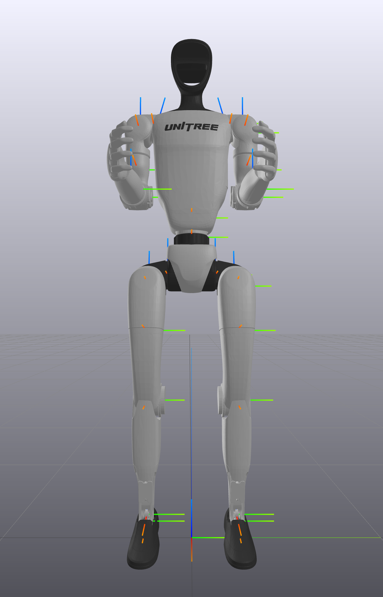
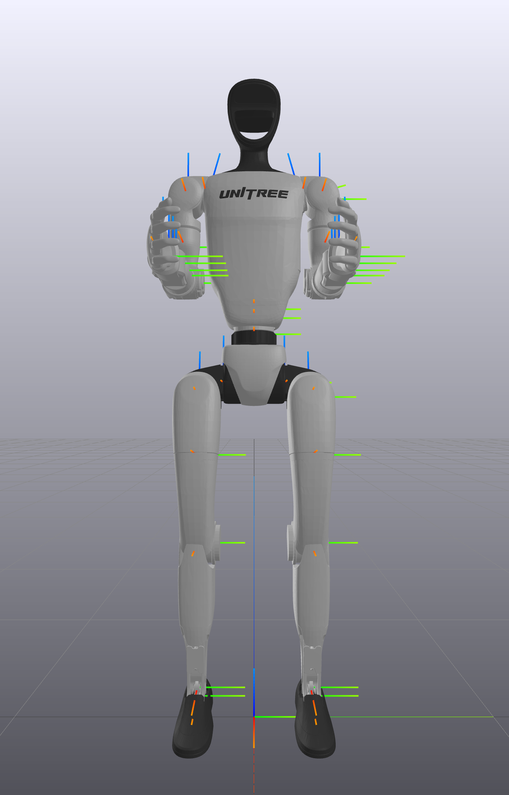
14자유도 구성 (팔만)
Joint Motor Sequence 문서는 팔만 있는 14자유도 구성도 정의합니다. 0 ~ 14번은 모두 비고, 15 ~ 28번은 위 표의 팔 관절(29자유도와 같은 이름 · 순서)입니다.
Joint Motor Sequence 문서는 23자유도 = mode_machine 1, 29자유도 = 2, 14자유도 = 9로 적고, Basic Services Interface 문서의 IDL 주석은
4 = 23자유도, 5 = 29자유도, 6 = 27자유도(29자유도에 허리 고정구 장착)로 적습니다. SDK 예제(C++ · Python)는 이 값을 정해 두지 않고,
rt/lowstate에서 받은 mode_machine을 그대로 LowCmd_에 복사합니다. 같은 방식을 쓰십시오.
Dex3-1 손 모터 순서 문서
HandCmd_.motor_cmd와 HandState_.motor_state(손마다 7개)의 순서입니다. SDK 예제 g1_dex3_example도 MOTOR_MAX 7로 씁니다. SDK
| 번호 | 0 | 1 | 2 | 3 | 4 | 5 | 6 |
|---|---|---|---|---|---|---|---|
| 관절 | thumb_0 | thumb_1 | thumb_2 | middle_0 | middle_1 | index_0 | index_1 |
메시지 구조 SDK
모두 unitree_hg::msg::dds_ 네임스페이스이며 헤더는 unitree/idl/hg/에 있습니다. C++에서는 필드를 같은 이름의 접근 함수로 읽고 씁니다 (예: low_state.motor_state()[i].q()).
| 필드 | 형 | 뜻 |
|---|---|---|
LowState_ — rt/lowstate | ||
version | uint32[2] | 버전 |
mode_pr | uint8 | 병렬 기구 모드 0 = PR · 1 = AB |
mode_machine | uint8 | G1 기종 (위 참고) |
tick | uint32 | 1 ms마다 증가하는 타이머 |
imu_state | IMUState_ | IMU 상태 |
motor_state | MotorState_[35] | 몸체 모터 상태 (번호는 위 표) |
wireless_remote | uint8[40] | 리모컨 원시 데이터 (아래) |
reserve · crc | uint32[4] · uint32 | 예약 · 체크섬 |
LowCmd_ — rt/lowcmd · rt/arm_sdk · rt/user_lowcmd | ||
mode_pr | uint8 | 병렬 기구 모드 0 = PR (기본) · 1 = AB |
mode_machine | uint8 | LowState에서 받은 값을 그대로 |
motor_cmd | MotorCmd_[35] | 몸체 모터 명령 |
reserve · crc | uint32[4] · uint32 | 예약 · 체크섬 (보내기 직전에 계산) |
| MotorState_ — 모터 한 개의 상태 | ||
mode | uint8 | 현재 모터 모드 |
q · dq · ddq | float | 관절 위치 (rad) · 속도 (rad/s) · 가속도 (rad/s²) |
tau_est | float | 추정 관절 토크 |
temperature | int16[2] | 모터 온도 (표면 · 권선) |
vol | float | 모터 단자 전압 |
sensor | uint32[2] | 센서 데이터 |
motorstate | uint32 | 모터 상태 · 오류 비트 (이 장 끝의 표) |
reserve | uint32[4] | 예약 |
| MotorCmd_ — 모터 한 개의 명령 | ||
mode | uint8 | 0 = 끔 (Disable) · 1 = 켬 (Enable) |
q · dq | float | 목표 위치 · 목표 속도 |
tau | float | 피드포워드 토크 |
kp · kd | float | 관절 강성 · 감쇠 계수 |
reserve | uint32 | 예약 |
IMUState_ — imu_state · rt/secondary_imu | ||
quaternion | float[4] | 쿼터니언 w · x · y · z |
gyroscope · accelerometer | float[3] | 각속도 · 가속도 (x · y · z) |
rpy · temperature | float[3] · int16 | 오일러 각 · IMU 온도 |
송신 직전 crc는 C++ 예제의 Crc32Core, Python의 unitree_sdk2py.utils.crc.CRC().Crc(cmd)로 채웁니다.
// C++ (g1_ankle_swing_example.cpp) cmd.mode_pr() = 0; cmd.mode_machine() = state.mode_machine(); cmd.motor_cmd()[i].mode() = 1; /* q, dq, kp, kd, tau 채우기 */ cmd.crc() = Crc32Core((uint32_t*)&cmd, (sizeof(cmd) >> 2) - 1);
Basic Services Interface 문서의 IDL은 MotorState_에 q_raw · dq_raw · ddq_raw를 두고 vol을 sensor 뒤에 적으며,
MotorCmd_.reserve를 3칸 배열로 적습니다. SDK 헤더에는 *_raw 필드가 없고, 순서는 위 표와 같으며, MotorCmd_.reserve는 하나입니다.
LowState_.version은 SDK에만 있습니다. 위 표는 SDK를 따랐습니다.
리모컨 데이터 문서 SDK
리모컨은 왼쪽 · 오른쪽 스틱(각각 x · y, 값 −1.0 ~ 1.0)과 기능 버튼으로 이루어지며, 버튼 조합마다 고유한 정수 키 값이 됩니다.
rt/lowstate의 wireless_remote[40]에 리모컨의 40바이트 원시 데이터가 들어 있어, 이를 구조체로 바꿔 씁니다 (현재 앞 24바이트만 사용).
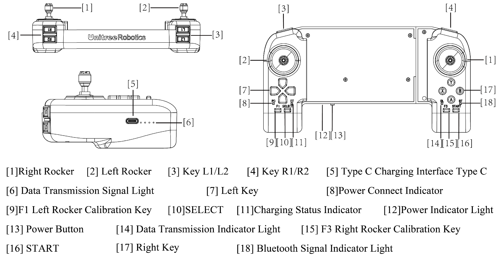
| 바이트 | 필드 | 형 |
|---|---|---|
| 0 ~ 1 | head[2] | uint8 ×2 |
| 2 ~ 3 | btn (버튼 비트, 오른쪽 표) | uint16 |
| 4 ~ 7 | lx 왼 스틱 x | float |
| 8 ~ 11 | rx 오른 스틱 x | float |
| 12 ~ 15 | ry 오른 스틱 y | float |
| 16 ~ 19 | L2 (Python 예제는 미사용 자리로 둠) | float |
| 20 ~ 23 | ly 왼 스틱 y | float |
| 24 ~ 39 | idle[16] | uint8 ×16 |
| 비트 | 바이트 2 | 바이트 3 |
|---|---|---|
| 0 | R1 (0x0001) | A (0x0100) |
| 1 | L1 (0x0002) | B (0x0200) |
| 2 | START (0x0004) | X (0x0400) |
| 3 | SELECT (0x0008) | Y (0x0800) |
| 4 | R2 (0x0010) | 위 (0x1000) |
| 5 | L2 (0x0020) | 오른쪽 (0x2000) |
| 6 | F1 (0x0040) | 아래 (0x4000) |
| 7 | F2 · F3 (0x0080) | 왼쪽 (0x8000) |
괄호 안 값은 btn.value(uint16, 리틀 엔디언)에서의 마스크입니다. 여러 버튼을 함께 누르면 비트가 합쳐집니다.
// C++: 구조체는 example/g1/low_level/gamepad.hpp 의 xRockerBtnDataStruct unitree::common::xRockerBtnDataStruct key; memcpy(&key, &low_state.wireless_remote()[0], 40); // low_state: unitree_hg LowState_ if (key.btn.components.A) { /* ... */ } float vx = key.ly; # Python (example/wireless_controller/wireless_controller.py) d = msg.wireless_remote lx, rx, ry = struct.unpack('<fff', bytes(d[4:16])); ly = struct.unpack('<f', bytes(d[20:24]))[0] A = d[3] & 1; R1 = d[2] & 1
gamepad.hpp의 Gamepad 클래스는 스틱 값에 데드존(0.01)과 지수 평활(계수 0.03)을 적용하고, 버튼마다
pressed · on_press · on_release를 줍니다. gamepad.update(key)를 상태 콜백에서 부르면 됩니다.
- Unitree 문서의 변환 예시는
unitree_go::msg::dds_::LowState_를 쓰지만, G1은unitree_hg::msg::dds_::LowState_입니다 (SDK · Python 예제 모두 hg). - 바이트 2의 7번 비트를 C++ 구조체는
F2, Python 예제는F3로 부릅니다. 리모컨 겉면 표기는 F3입니다.
오류 코드 문서
각 코드는 한 비트에 해당하므로 상태 값에 &를 해서 검사합니다. 모터 상태는 motor_state[i].motorstate에서 읽습니다.
RPC 호출의 반환 코드(3001 ~ 3207)는 2장을 보십시오.
| 기기 상태 | 뜻 |
|---|---|
| 0x1 | 상위 제어 명령 오류 |
| 0x2 | 하위 피드백 데이터 시간 초과 |
| 0x4 | IMU 피드백 데이터 시간 초과 |
| 0x8 | 모터 피드백 데이터 시간 초과 |
| 0x10 | 배터리 피드백 데이터 시간 초과 |
| 0x20 | Unitree 실물 리모컨 피드백 데이터 시간 초과 |
| 0x40 | 배터리 모델 오류 |
| 0x80 | 소프트 스타트 오류 |
| 0x100 | 모터 상태 오류 |
| 0x200 | 모터 과전류 보호 (하한 보호 발동) |
| 0x400 | 모터 저전압 보호 (상한 보호 발동) |
| 0x800 | 모터 과전류 보호 (상한 보호 발동) |
| 0x1000 | 소프트 비상 정지 스위치 눌림 |
| 0x2000 | SN 오류 |
| 0x4000 | 상위 기종(모델) 오류 |
| 0x8000 | 하위 기종(모델) 오류 |
| 0x10000 | USB 장치 오류 |
| 0x40000 | 골반(가랑이) IMU 데이터 시간 초과 |
| 0x80000 | 메인보드 판정: 배터리 저전압 보호 |
| 0x100000 | 메인보드 판정: 모터 저전압 보호 |
| 모터 상태 | 뜻 |
|---|---|
| 0x1 | 과전류 |
| 0x2 | 순간 과전압 |
| 0x4 | 지속 과전압 |
| 0x8 | 순간 저전압 |
| 0x10 | 칩 과열 |
| 0x20 | MOS 과열 · 과냉 |
| 0x40 | MOS 온도 이상 |
| 0x80 | 케이스 과열 · 과냉 |
| 0x100 | 케이스 온도 이상 |
| 0x200 | 권선 과열 |
| 0x400 | 회전자 엔코더 1 오류 |
| 0x800 | 회전자 엔코더 2 오류 |
| 0x1000 | 출력축 엔코더 오류 |
| 0x2000 | 보정 · BOOT 데이터 오류 |
| 0x4000 | 비정상 리셋 |
| 0x8000 | 모터 잠김 · 마스터 인증 오류 |
| 0x10000 | 칩 검증 오류 |
| 0x20000 | 보정 모드 경고 |
| 0x40000 | 통신 검증 오류 |
| 0x80000 | 드라이버 버전이 너무 낮음 |
| 0x40000000 | 모터 판정: PC 연결 시간 초과 |
| 0x80000000 | PC 판정: 모터 연결 끊김 시간 초과 |
Unitree 원문 표는 모터 상태의 0x800 ~ 0x4000 네 줄을 두 번 적고 있어 위에서는 한 번만 실었습니다. 기기 상태 표에는 0x20000이 없습니다.
문서는 기기 상태 코드가 어느 토픽의 어느 필드에 실리는지는 밝히지 않습니다.
저수준 제어
저수준 제어는 내장 운동 제어를 내려놓고, 관절 모터마다 목표 위치 · 속도 · 앞먹임 토크와 게인을 직접 보내는 방식입니다.
이 장은 Unitree의 기준 예제 g1_ankle_swing_example을 SDK 소스와 맞춰 풀어 보고, 같은 폴더의 다른 저수준 예제를 소개합니다.
시작 전에 — 디버그 모드 문서
- 이 예제는 다리 · 허리 · 팔의 관절을 모두 움직입니다. 로봇을 반드시 거치대에 매단 채 실행하십시오.
- 내장 운동 제어가 살아 있으면
rt/lowcmd명령과 충돌합니다. 리모컨 L2 + R2로 디버그 모드에 들어가고 L2 + A로 확인한 뒤 실행합니다 (운용 설명서의 디버그 모드 절차). - 디버그 모드에서는 균형 제어가 없습니다. 리모컨 담당자는 L2 + B(댐핑)를 누를 수 있게 대기하십시오.
현재 SDK의 예제는 여기에 더해, 시작할 때 MotionSwitcherClient로 운동 제어 서비스가 켜져 있는지 확인(CheckMode)하고,
켜져 있으면 ReleaseMode()로 해제합니다. 해제될 때까지 5초마다 다시 시도합니다. 코드로 해제하는 방법은 6장에서 다룹니다. SDK
이 예제가 쓰는 메시지 필드 문서 SDK
명령은 rt/lowcmd(unitree_hg::msg::dds_::LowCmd_)로 보내고, 상태는 rt/lowstate(LowState_)에서 받습니다.
두 메시지의 전체 구조는 6장에 있습니다.
| 필드 | 뜻 | 예제에서 |
|---|---|---|
LowCmd_.mode_pr (uint8) | 병렬 기구(발목 · 허리)의 제어 방식. 0 = PR (기본), 1 = AB | 단계마다 PR · AB로 바꿔 보냄 |
LowCmd_.mode_machine (uint8) | 기종. 4 = 23자유도, 5 = 29자유도, 6 = 27자유도 (허리를 고정한 29자유도) | rt/lowstate에서 받은 값을 그대로 복사 |
motor_cmd[35] | 몸체 모터 명령 배열 (손 제외). 0 ~ 28번을 씁니다 | 29개 모두 채움 |
motor_cmd[i].mode | 0 = 끔 (Disable), 1 = 켬 (Enable) | 모두 1 |
motor_cmd[i].q · .dq | 목표 관절 위치 (rad) · 목표 속도 (rad/s) | 단계별 목표 · 0 |
motor_cmd[i].kp · .kd | 관절 강성 계수 · 감쇠 계수 | 아래 게인 표 |
motor_cmd[i].tau | 앞먹임 토크 (N·m) | 0 |
LowCmd_.crc (uint32) | 체크섬. 보낼 때마다 계산해 넣어야 합니다 | Crc32Core() |
LowState_.crc | 받은 상태의 체크섬 | 다시 계산해 다르면 그 메시지를 버림 |
motor_state[i].q · .dq | 측정 관절 위치 (rad) · 속도 (rad/s) | 1단계 영점 복귀의 출발점 |
motor_state[i].motorstate | 모터 상태 비트 (0 = 정상) | 다리 모터(0 ~ 11)가 0이 아니면 오류 출력 |
imu_state.rpy · .gyroscope | 골반 IMU 오일러각 · 각속도 | 상태 출력 |
wireless_remote[40] | 리모컨 원시 데이터 | gamepad.hpp로 해석해 A · B · X · Y 출력 |
CRC는 메시지 구조체를 32비트 단어 배열로 보고 마지막 단어(crc 자신)를 뺀 나머지에 대해 계산합니다 (다항식 0x04C11DB7, 초깃값 0xFFFFFFFF).
C++ 예제는 이 계산을 하는 Crc32Core()를 파일마다 복사해 두었고, 같은 함수가 SDK 헤더 unitree/dds_wrapper/common/crc.h에 crc32_core()로도 있습니다. Python은 unitree_sdk2py.utils.crc의 CRC().Crc(msg)를 씁니다. SDK
cmd.crc() = Crc32Core((uint32_t *)&cmd, (sizeof(cmd) >> 2) - 1); // 마지막 4바이트(crc) 제외
관절 번호와 PR · AB 이름 SDK
예제의 G1JointIndex 열거형은 같은 번호에 PR 이름과 AB 이름을 함께 붙입니다. mode_pr에 따라 같은 자리의 뜻이 바뀝니다.
| 번호 | PR 모드 (mode_pr = 0) | AB 모드 (mode_pr = 1) | 비고 |
|---|---|---|---|
| 0 ~ 3 | 왼쪽 고관절 pitch · roll · yaw, 무릎 | ||
| 4 · 5 | 왼쪽 발목 pitch · roll | 왼쪽 발목 B · A | 4 = B, 5 = A 순서에 주의 |
| 6 ~ 9 | 오른쪽 고관절 pitch · roll · yaw, 무릎 | ||
| 10 · 11 | 오른쪽 발목 pitch · roll | 오른쪽 발목 B · A | |
| 12 | 허리 yaw | ||
| 13 · 14 | 허리 roll · pitch | 허리 A · B | 23자유도 · 허리 고정 29자유도에서는 무효 |
| 15 ~ 19 | 왼쪽 어깨 pitch · roll · yaw, 팔꿈치, 손목 roll | ||
| 20 · 21 | 왼쪽 손목 pitch · yaw 29 | 23자유도에서는 무효 | |
| 22 ~ 26 | 오른쪽 어깨 pitch · roll · yaw, 팔꿈치, 손목 roll | ||
| 27 · 28 | 오른쪽 손목 pitch · yaw 29 | 23자유도에서는 무효 | |
PR 모드와 AB 모드 문서
G1의 발목은 병렬 기구입니다. 정강이의 모터 A · B가 링크를 밀고 당겨 발의 pitch · roll을 움직이므로, 실제로 구동되는 것은 A · B(능동)이고 pitch · roll 관절은 따라 움직입니다(수동). 두 쌍 사이에 구속이 두 개 있어 자유도는 2입니다.
- PR 모드 (기본): pitch · roll 관절 목표를 보냅니다. URDF 모델과 같은 관절이며, 로봇이 이를 A · B 모터 명령으로 바꿔 줍니다.
- AB 모드: 모터 A · B를 직접 제어합니다. 병렬 기구의 기구학은 사용자가 계산해야 합니다.
- 29 허리의 roll · pitch도 같은 병렬 기구이며 같은 두 모드를 씁니다.
mode_pr하나가 발목과 허리 모두에 적용됩니다.
Unitree 문서에는 발목 병렬 기구 모델 파일(zip) 링크가 있습니다. AB 모드를 쓸 때 기구학 계산에 참고하십시오.
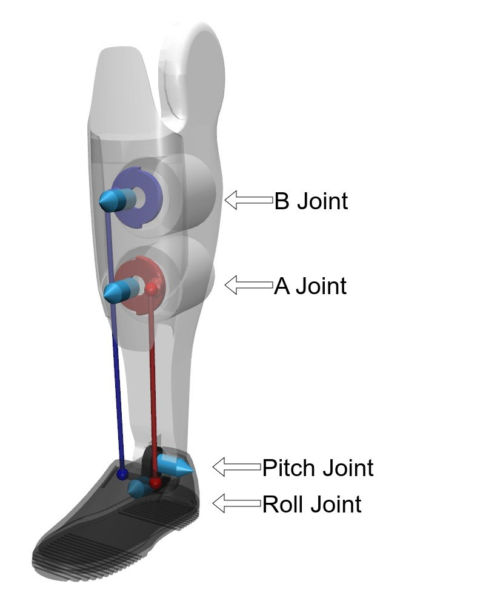
스레드 구조 문서 SDK
메인 함수는 G1Example 객체를 만들고 잠들 뿐입니다. 생성자가 발행자 · 구독자와 두 개의 주기 스레드를 만들고, 스레드끼리는
DataBuffer(최신 값 하나를 shared_mutex로 보호하는 버퍼)로 데이터를 주고받습니다.
g1_ankle_swing_example의 데이터 흐름. 상태는 콜백이 버퍼에 넣고, 제어 스레드가 목표를 계산해 명령 버퍼에 넣으면, 송신 스레드가 2 ms마다 최신 명령을 발행합니다| 구성 요소 | 만드는 곳 · 주기 | 하는 일 |
|---|---|---|
LowStateHandler | rt/lowstate 구독 콜백 (큐 길이 1) · 메시지마다 | CRC 검사 → 모터 q · dq와 IMU를 버퍼에 저장, mode_machine 갱신 (처음 한 번 G1 type: N 출력), 리모컨 해석, 500개마다 상태 출력 |
imuTorsoHandler | rt/secondary_imu 구독 콜백 | 몸통 IMU의 rpy 출력 (SDK판에만 있음) |
Control | CreateRecurrentThreadEx("control", UT_CPU_ID_NONE, 2000, …) · 2000 µs | 상태가 들어온 뒤부터 time_을 0.002 s씩 늘리며 단계별 목표를 계산해 명령 버퍼에 저장 |
LowCommandWriter | CreateRecurrentThreadEx("command_writer", …, 2000, …) · 2000 µs | 명령 버퍼가 차 있을 때만 LowCmd_를 채우고 CRC를 넣어 발행. 상태를 받기 전에는 아무것도 보내지 않음 |
// LowCommandWriter: 29개 모터를 모두 켜고 버퍼의 최신 명령(mc)을 씁니다 cmd.mode_pr() = static_cast<uint8_t>(mode_pr_); // 0 PR · 1 AB cmd.mode_machine() = mode_machine_; // lowstate 값 복사 for (size_t i = 0; i < G1_NUM_MOTOR; i++) { // G1_NUM_MOTOR = 29 cmd.motor_cmd().at(i).mode() = 1; // 1 = Enable cmd.motor_cmd().at(i).q() = mc->q_target.at(i); cmd.motor_cmd().at(i).dq() = mc->dq_target.at(i); cmd.motor_cmd().at(i).kp() = mc->kp.at(i); cmd.motor_cmd().at(i).kd() = mc->kd.at(i); cmd.motor_cmd().at(i).tau() = mc->tau_ff.at(i); } cmd.crc() = Crc32Core((uint32_t *)&cmd, (sizeof(cmd) >> 2) - 1); lowcmd_publisher_->Write(cmd);
발목 흔들기의 세 단계 문서 SDK
duration_ = 3 s, control_dt_ = 0.002 s입니다. 매 주기 모든 관절의 목표를 0 rad, 속도 0, 토크 0으로 초기화한 뒤 단계별 값을 덮어씁니다.
| 단계 | 시간 | mode_pr | 동작 |
|---|---|---|---|
| 1 · 영점 복귀 | 0 ~ 3 s | PR | 모든 관절 목표 = (1 − t / 3) × 현재 측정 위치. 매 주기 측정값을 다시 읽으므로 3초에 걸쳐 0 rad 자세로 모입니다 |
| 2 · PR 흔들기 | 3 ~ 6 s | PR | 발목 pitch ±30°, roll ±10°, 1 Hz 사인 (sin 2πt). 오른쪽 roll은 부호가 반대. 나머지 관절은 0 rad |
| 3 · AB 흔들기 | 6 s ~ 종료 | AB | 모터 A ±30°, B ±10° (B는 위상 π), 0.5 Hz (sin πt). 오른쪽은 A · B 모두 부호가 반대. 프로그램을 끝낼 때까지 계속 |
| 관절 (예제의 게인) | Kp | Kd |
|---|---|---|
| 고관절 pitch · roll · yaw | 60 | 1 |
| 무릎 | 100 | 2 |
| 발목 pitch · roll | 40 | 1 |
| 허리 yaw | 60 | 1 |
| 허리 roll · pitch | 40 | 1 |
| 팔 · 손목 (14개) | 40 | 1 |
23자유도 로봇에서도 같은 소스를 씁니다. 무효 관절(13 · 14 · 20 · 21 · 27 · 28)에 들어간 명령은 쓰이지 않습니다.
이 게인은 매달린 로봇에서 자세를 잡기 위한 값입니다. 바닥 위 보행이나 하중을 견디는 값이 아닙니다.
빌드와 실행 문서
cd unitree_sdk2
cmake -Bbuild
cmake --build build
# 로봇을 매달고 디버그 모드를 확인한 뒤. 인자는 192.168.123.x 대역의 네트워크 카드 이름
./build/bin/g1_ankle_swing_example enxf8e43b808e06
- 인자가 없으면
Usage: g1_ankle_swing_example network_interface를 출력하고 끝납니다. - 실행 중에는 상태 메시지 500개마다(코드 주석으로는 약 1초) 골반 · 몸통 IMU rpy, 리모컨 A · B · X · Y, 29개 모터의 mode · 위치 · 속도 · 추정 토크 · 온도 · 전압 · 센서 · motorstate를 출력합니다.
[ERROR] CRC Error나[ERROR] motor i with code …가 보이면 멈추고 원인을 확인하십시오. - 3단계는 끝나지 않습니다. 리모컨 담당자가 대기한 상태에서
Ctrl+C로 끝내고, 로봇을 댐핑(L2 + B)에 둡니다.
그 밖의 저수준 예제 SDK
| 예제 · 실행 파일 | 내용 |
|---|---|
g1_dual_arm_examplelow_level/g1_dual_arm_example.cpp | 운동 제어 서비스를 해제한 뒤 3초 동안 29개 관절을 영점으로 보내고, behavior_lib/motion.seq에 든 양팔 14관절 궤적(500 Hz, 3817프레임, 약 7.6초)을 반복 재생합니다. 다리 · 허리는 0 rad 유지, 게인은 감속기 크기별(S · M: Kp 40, L: Kp 100, Kd 1). yaml-cpp 0.6 이상이 있을 때만 빌드됩니다 |
g1_terminationlow_level/terminations.cpp | 보호 함수 시험. 100 ms마다 자세 이상(bad_orientation, 1.0 rad)과 연결 끊김(lost_connection, 1000 ms)을 검사해 출력합니다. 모터 명령은 보내지 않습니다. Boost program_options가 있을 때만 빌드, 인자 --network(-n) |
gamepad.hpplow_level/gamepad.hpp (헤더) | wireless_remote 40바이트를 버튼(R1 · L1 · START · SELECT · R2 · L2 · F1 · F2 · A · B · X · Y · 방향키)과 스틱 값 lx · rx · ry · ly로 해석합니다 |
g1_low_level_example.pyunitree_sdk2_python/example/g1/low_level/ | 같은 발목 흔들기의 Python판. 2 ms 스레드 하나가 계산과 송신을 함께 합니다 |
g1d_arm_exampleg1d/g1d_arm_example.cpp | G1D 전용. 몸통 IMU를 받고 리모컨 A를 기다린 뒤, rt/lowcmd로 양쪽 어깨 pitch를 ±30° 사인으로 반대로 흔듭니다. 다시 A를 누르면 끝. 운동 제어 해제 코드는 없습니다 |
g1d_waist_exampleg1d/g1d_waist_example.cpp | G1D 전용. 허리 pitch를 별도 토픽 rt/waistpitchcmd(MotorCmd_) · rt/waistpitchstate(MotorState_)로 제어. kp 500, kd 12로 0 ↔ 0.8 rad를 오갑니다 |
G1D는 SDK 8e1b927에 추가된 example/g1/g1d/ 폴더의 대상인 G1 변형입니다. 소스 기준으로 다리(0 ~ 11)와 허리 roll(13)이 없고(열거형 주석 "INVALID for g1d"), 이동 받침(g1::AgvClient, g1_agv_client_example이 이 폴더로 옮겨짐)과
높이를 바꾸는 기둥(g1d_height_control: rt/hispeed_state의 높이를 읽어 AgvClient::HeightAdjust(vz)로 목표 높이(m)에 맞춤)을 씁니다. 다리가 있는 G1에서는 이 예제를 실행하지 마십시오. SDK
보호 함수는 unitree/robot/g1/common/terminations.hpp에 있습니다. 헤더는 함수가 참을 돌려주면 모터를 수동(passive) 상태로 두라고 권장하며,
연결 끊김에 대해서는 "느슨한 랜선으로 통신이 끊긴 채 프로그램이 계속 돌면 모터에 계단 신호가 가서 격렬하게 움직일 수 있다"고 적고 있습니다. 자체 제어기에 넣어 쓰십시오.
| 함수 (기본 한계) | 참이 되는 조건 |
|---|---|
bad_orientation(lowstate, 1.0) | IMU 쿼터니언으로 구한 중력 방향이 수직에서 1.0 rad보다 기움 |
joint_vel_out_of_limit(lowstate, 10.0) | 어느 모터든 |dq| > 10 rad/s |
ang_vel_out_of_limit(lowstate, 6.0) | IMU 각속도의 한 축이라도 6 rad/s 초과 |
motor_winding_overheat(lowstate, 120.0) | temperature[1](권선) > 120 °C |
motor_casing_overheat(lowstate, 85.0) | temperature[0](외피) > 85 °C |
low_battery(bms_state, 20.0) | BmsState_.soc < 20 % |
lost_connection(subscriber, 1000) | 구독자의 마지막 수신 뒤 1000 ms 넘게 지남 |
- 문서의 코드에는 없지만 SDK 예제에는 운동 제어 해제(
MotionSwitcherClient), 몸통 IMU(rt/secondary_imu) 구독, 리모컨 해석, 1초 주기 상태 출력이 들어 있습니다. 문서처럼Control()이ReportRPY()를 부르지 않고, 출력은LowStateHandler가 합니다. - 문서는 "다른 버전용 예제도 저장소에 있다"고 하지만 SDK(8e1b927)의 G1 발목 예제는 이 파일 하나이며, 23자유도 무효 관절은 열거형 주석으로만 표시됩니다.
mode_machine값은 기본 서비스 문서(4 · 5 · 6)와 관절 순서 문서의 표 제목(23자유도 1, 29자유도 2)이 다릅니다. 예제는 값을 해석하지 않고 받은 값을 그대로 돌려보내므로 어느 쪽이든 동작합니다.
고수준 제어 — 보행 · 팔
고수준 제어는 Unitree의 내장 운동 제어에 일을 맡기는 방식입니다. 보행 · 자세 전환은 RPC 클라이언트 LocoClient로 요청하고,
팔은 운동 제어가 균형을 잡는 동안 rt/arm_sdk 토픽으로 덧씌우거나, 미리 만들어 둔 팔 동작을 G1ArmActionClient로 부릅니다.
고수준 인터페이스 한눈에 문서 SDK
| 인터페이스 | 종류 | 용도 |
|---|---|---|
unitree::robot::g1::LocoClientg1/loco/g1_loco_client.hpp · 서비스 "sport" · API 1.0.0.0 | RPC | 모드 전환, 속도 명령, 서기 높이, 인사 동작, 사용자 개발 모드 |
unitree::robot::g1::G1ArmActionClientg1/arm/g1_arm_action_client.hpp · 서비스 "arm" · API 1.0.0.14 | RPC | 미리 만든 팔 동작 · 앱에서 가르친 동작 재생 |
rt/arm_sdk (hg LowCmd_) | DDS 발행 | 보행 중 팔 · 허리 관절 덧씌움 (가중치 motor_cmd[29].q) |
rt/user_lowcmd (hg LowCmd_) | DDS 발행 | 사용자 개발 모드에서 모든 관절 직접 제어 |
rt/sportmodestate (hg SportModeState_) | DDS 구독 | 현재 FSM · 모드 상태 · 팔 동작 진행 (펌웨어 1.5.1 이후) |
rt/arm/action/state | DDS 구독 | 팔 동작 서비스의 현재 동작 (SDK 헤더 주석) |
모든 고수준 서비스는 내장 운동 제어 위에서 돕니다. 디버그 모드에 들어가거나 코드로 운동 제어를 해제하면(6장) 완전히 꺼집니다.
그래서 이 장의 예제는 디버그 모드 없이, 로봇을 운동 제어 상태로 둔 채 실행합니다.
운동 제어(ai_sport) 8.2.0.0 이상은 서비스 이름이 "sport", 그 미만은 "loco"입니다. SDK는 "sport"로 고정되어 있습니다.
LocoClient 호출 방법 문서
#include <unitree/robot/g1/loco/g1_loco_client.hpp> unitree::robot::ChannelFactory::Instance()->Init(0, "enxf8e43b808e06"); // 네트워크 카드 이름 unitree::robot::g1::LocoClient client; client.Init(); client.SetTimeout(10.f); // 응답 대기 (초) int32_t ret = client.Move(0.3f, 0.f, 0.f); // 0 = 성공, 그 밖은 오류 코드
모든 함수는 int32_t를 돌려줍니다. 0이면 요청이 전달된 것이고, 실제 모드 전환은 내장 운동 제어의 전환 규칙(운용 설명서의 모드 전환)에 따라 거절될 수 있습니다.
전환 결과는 GetFsmId()나 rt/sportmodestate로 확인하십시오.
기본 함수
리모컨 조작에 대응하는 함수입니다. → 뒤는 SDK에서 실제로 부르는 전문가 함수입니다. SDK
| 함수 | 동작 → 내부 호출 |
|---|---|
Damp() | 댐핑. 어느 상태에서든 들어갈 수 있는 최종 안전 모드 → SetFsmId(1) |
ZeroTorque() | 제로 토크 → SetFsmId(0) |
StandUp() | 잠금 서기 (균형 제어 없음) → SetFsmId(4) |
Squat() · Sit() | 위치 제어 쪼그리기 · 앉기 (균형 제어 없음) → SetFsmId(2) · SetFsmId(3) |
Start() | 주 운동 제어(걷기) 시작 → SetFsmId(500) |
HighStand() · LowStand() | 서기 높이를 최대 · 최소로 → SetStandHeight(uint32 최댓값 · 0) |
Move(vx, vy, vyaw) | 속도 명령. vx 앞뒤 (m/s), vy 좌우 (m/s), vyaw 회전 (rad/s). 기본은 1초 동안만 유효 → SetVelocity(…, 1) 또는 아래 연속 모드면 (…, 864000) |
Move(vx, vy, vyaw, continous_move) | true면 속도 명령이 계속 유효, false면 1초 → SetVelocity(…, 864000 또는 1) |
StopMove() | 속도 명령을 0으로 → SetVelocity(0, 0, 0) |
SwitchMoveMode(flag) | 3인자 Move()의 기본 동작을 바꿈. true = 연속 응답, false = 1초 뒤 자동 정지 (기본). RPC를 보내지 않고 클라이언트 안의 값만 바꿉니다 (항상 0 반환) |
BalanceStand() | 서기 모드. 속도 0이고 안정하면 걸음을 멈추고, 필요할 때만 발을 뗌 → SetBalanceMode(0) |
ContinuousGait(flag) | 연속 걷기. 켜면 속도가 0이어도 계속 제자리걸음 → SetBalanceMode(flag ? 1 : 0) |
WaveHand(turn_flag = false) | 손 흔들기 (true면 몸을 돌리며) → SetTaskId(0) · SetTaskId(1) |
ShakeHand(stage = -1) | 악수. stage 0 = 시작, 1 = 끝, 생략하면 시작/끝을 번갈아 → SetTaskId(2) · SetTaskId(3) |
연속 응답 모드는 기본으로 꺼져 있고, 문서는 안전을 위해 신중히 켜라고 권합니다. 연속 이동 명령(SDK는 duration 864000 s로 보냄)은 StopMove()나 새 명령이 올 때까지 유효하므로,
프로그램이 죽어도 로봇은 마지막 속도로 계속 걷습니다. 리모컨 담당자를 두고, 끝낼 때는 반드시 StopMove()를 보내십시오.
전문가 인터페이스 (RPC API)
요청과 응답 데이터는 JSON 문자열입니다. 대부분 {"data": 값} 형식이며 속도만 {"velocity": [vx, vy, omega], "duration": d}입니다. SDK
| 함수 · API ID | 설명 | 값 · 비고 |
|---|---|---|
GetFsmId(int& fsm_id) · 7001 | 현재 운동 제어 모드 ID | 아래 FSM 표 |
GetFsmMode(int& fsm_mode) · 7002 | 현재 모드의 상태 | 0 = 서 있음, 1 = 움직이는 중 |
GetBalanceMode(int&) · 7003 | 서기 / 연속 걷기 설정 읽기 SDK | 0 = 서기 모드, 1 = 연속 걷기 |
GetSwingHeight(float&) · 7004 | 발을 드는 높이 읽기 SDK | m |
GetStandHeight(float&) · 7005 | 서기 높이 읽기 SDK | m |
GetPhase(std::vector<float>&) · 7006 | 보행 위상 읽기 | SDK 주석: 더 이상 쓰지 않음 (deprecated) |
SetFsmId(int fsm_id) · 7101 | 운동 제어 모드 전환 | 아래 FSM 표, 춤 동작은 550xxx |
SetBalanceMode(int) · 7102 | 서기 / 연속 걷기 설정 SDK | 0 · 1 |
SetSwingHeight(float) · 7103 | 발 드는 높이 설정 SDK | m (문서의 숨긴 행 예시 0.1) |
SetStandHeight(float) · 7104 | 서기 높이 설정 SDK | m (문서의 숨긴 행 예시 0.55) |
SetVelocity(vx, vy, omega, duration = 1.f) · 7105 | 속도 명령과 유효 시간 (s) | 허용 범위를 넘는 값은 자동으로 잘림 |
SetTaskId(int task_id) · 7106 | 인사 동작 실행 SDK | 0 손 흔들기, 1 돌며 손 흔들기, 2 악수 시작, 3 악수 끝 |
SetSpeedMode(int speed_mode) · 7107 | 달리기 모드의 최고 속도 | 0: 1.0 · 1: 2.0 · 2: 2.7 · 3: 3.0 m/s |
SwitchToUserCtrl() · 7110 | 사용자 개발 모드로 전환 (아래) | |
SwitchToInternalCtrl(InternalFsmMode) · 7111 | 내장 운동 제어로 복귀 | LAST(0) 직전 모드 · PASSIVE(1) 댐핑 · WALKRUN(2) 걷기/달리기 |
GetMimicMotion(std::string& data) · 7100 | 춤(Mimic) 동작 목록 읽기. FSM API(7100)에 {"fsm_id": 550, "api_id": 1}을 보냄 SDK | SDK 8e1b927(2026-10-30)에서 추가. 아래 춤 모드 |
FSM ID 문서
| ID | 모드 | ID | 모드 |
|---|---|---|---|
| 0 | 제로 토크 (균형 제어 없음) | 500 | 걷기 |
| 1 | 댐핑 (균형 제어 없음) | 501 | 걷기 · 3자유도 허리 29 |
| 2 | 위치 제어 쪼그리기 (균형 제어 없음) | 702 | 눕기 · 일어서기 |
| 3 | 위치 제어 앉기 (균형 제어 없음) | 706 | 균형 쪼그리기 · 일어서기 |
| 4 | 잠금 서기 (균형 제어 없음) | 801 | 달리기 (29자유도 ai_sport 8.6.x.x 이후 802) |
| 1000 | 사용자 제어 (UserCtrl) | 550xxx | 춤 (Mimic) 동작 xxx |
| 1001 | 자동 일어서기 |
오류 코드 SDK
| 코드 | 뜻 |
|---|---|
| 7301 | LocoState를 쓸 수 없음 (LocoState not available) |
| 7302 | 잘못된 FSM ID |
| 7303 | 잘못된 task ID |
모드 상태 토픽 — rt/sportmodestate 문서 SDK
| 필드 | 뜻 |
|---|---|
fsm_id (uint32) | 현재 모드 ID (위 FSM 표) |
fsm_mode (uint32) | 0 = 정적: 다른 모드로 바꿀 수 있음 · 1 = 동적: 대부분의 전환이 막힘 |
task_id (uint32) | 실행 중인 팔 동작 ID (아래 팔 동작 서비스) |
task_time (float) | 팔 동작 실행 시간 (s). 0부터 늘어나며, 악수처럼 붙잡는 동안에는 멈춰 있음 |
로봇이 넘어질 위험이 있는 자세 · 움직임 중에는 모드 전환이 금지됩니다. 예를 들어 장애물 넘기 모드에서 계속 걷는 중에는 댐핑 외의 모드로 바꿀 수 없습니다.
댐핑은 최종 안전 모드라 언제든 들어갈 수 있습니다. 전환 전에 fsm_mode를 보고 판단하십시오.
사용자 개발 모드 — rt/user_lowcmd 문서
자체 전신 제어기와 Unitree 운동 제어를 빠르게 오가야 할 때 씁니다. 디버그 모드 전환은 되돌리기 번거롭지만, 이 모드는 RPC 하나로 들어가고 나옵니다.
들어가면 rt/user_lowcmd(LowCmd_)로 모든 모터를 사용자가 제어합니다.
걷기 · 달리기 모드에서 사용자 제어로 넘어갈 때는 사용자 동작의 첫 자세와 마지막 자세가 모두 표준 서기 자세여야 합니다. 그렇지 않으면 로봇이 제어를 잃을 수 있습니다.
SDK 예제 g1_userctrl_dds_example(high_level/g1_userctrl_dds_example.cpp)의 흐름입니다. SDK
- FSM 확인
GetFsmId()가 1(댐핑)이 아니면Current fsm is not PASSIVE를 출력하고 끝납니다. 로봇을 매달고 댐핑에 두십시오. - Enter → 전환모든 관절에 kp 0 · kd 1.5 명령을 한 번 보낸 뒤
SwitchToUserCtrl()을 부릅니다. - 초기 자세 (2초)현재 위치에서 무릎을 조금 굽힌 초기 자세로 선형 보간합니다. kp 60, kd 1.5, 주기 20 ms(50 Hz).
- Enter → 동작 (5초 + 5초)고관절 pitch −1.0 rad · 무릎 1.5 rad로 다리를 크게 굽히고 팔꿈치를 편 목표로 갔다가 초기 자세로 돌아옵니다. 관절 속도는 0.5 rad/s로 제한합니다.
- 복귀
SwitchToInternalCtrl(InternalFsmMode::LAST)로 들어오기 전 모드로 돌아갑니다.
춤 (Mimic) 모드 문서
GetMimicMotion(std::string& data): 쓸 수 있는 춤 동작 목록을 JSON으로 받습니다 (명령줄--get_mimic_motion).fsm_id(550),api_id(1),motion(키 = 동작 API ID, 값 =duration·name)이 들어 있습니다.- 실행은
SetFsmId(550 + 동작 API ID)입니다. 예: 동작 507 →SetFsmId(550507), 명령줄로는--set_fsm_id=550507. - 로봇이 서 있는 등 안정한 상태에서만 부르십시오.
명령줄 예제 g1_loco_client 문서 SDK
소스는 example/g1/high_level/g1_loco_client_example.cpp, 실행 파일은 g1_loco_client입니다. 디버그 모드는 필요 없습니다.
값이 있는 옵션은 --키=값 또는 --키="값", 값이 없으면 --키로 씁니다.
# x 방향 0.5 m/s 로 1초 이동 (vx vy omega duration) ./build/bin/g1_loco_client --network_interface=enxf8e43b808e06 --set_velocity="0.5 0 0 1" # 현재 모드 확인 ./build/bin/g1_loco_client --network_interface=enxf8e43b808e06 --get_fsm_id
| 옵션 | 동작 |
|---|---|
--network_interface=이름 | 로봇과 연결된 네트워크 카드. 생략하면 lo |
--get_fsm_id · --get_fsm_mode | FSM ID · 모드 상태 출력 |
--get_balance_mode · --get_swing_height · --get_stand_height · --get_phase | 각 설정값 출력 (get_phase는 deprecated API) |
--get_mimic_motion | 춤 동작 목록(JSON) 출력 (SDK 8e1b927에서 추가) |
--set_fsm_id=ID | 모드 전환 (예: 1, 550507) |
--set_balance_mode=0|1 · --set_swing_height=m · --set_stand_height=m | 서기 / 연속 걷기 · 발 높이 · 서기 높이 설정 |
--set_velocity="vx vy omega [duration]" | 속도 명령. duration을 빼면 1 s. 값이 3개나 4개가 아니면 오류로 끝남 |
--move="vx vy omega" | Move() 호출 (1초 유효) |
--stop_move | 속도 0 |
--damp · --zero_torque · --start | 댐핑 · 제로 토크 · 운동 제어 시작 |
--squat · --sit · --stand_up | 쪼그리기 · 앉기 · 잠금 서기 |
--high_stand · --low_stand | 서기 높이 최대 · 최소 |
--balance_stand · --continous_gait=true|false | 서기 모드 · 연속 걷기 켜기/끄기 (철자는 소스 그대로 continous) |
--switch_move_mode=true|false | SwitchMoveMode() 호출. 아래 주의 참조 |
--set_task_id=ID | 인사 동작 ID 실행 (0 ~ 3) |
--wave_hand · --wave_hand_with_turn | 손 흔들기 · 돌며 손 흔들기 |
--shake_hand | 악수 시작 → 10초 대기 → 악수 끝 |
--set_speed_mode=0|1|2|3 | 달리기 최고 속도 1.0 · 2.0 · 2.7 · 3.0 m/s |
- 예제는 옵션을
std::map에 담아 돌기 때문에 키 이름의 알파벳 순서로 실행합니다. 여러 옵션을 한 번에 줄 때 순서에 기대지 마십시오. - 같은 이유로
--switch_move_mode=true --move="…"는 연속 이동이 되지 않습니다 (move가 먼저 실행되고, 플래그는 프로그램이 끝나면 사라짐). 오래 걷게 하려면--set_velocity의 duration을 쓰십시오. - 예제는 함수의 반환값을 검사하지 않습니다. 실패해도
Done!을 출력하므로 결과는--get_fsm_id로 다시 확인하십시오.
- 문서의
SwitchMoveMode표는 원형을ContinuousGait(bool flag)로,Move()설명은 "ContinuousGait로 바꾼다"고 적었습니다. SDK에서 3인자Move()의 유효 시간을 바꾸는 것은SwitchMoveMode(bool)이고,ContinuousGait는SetBalanceMode를 부르는 별개 함수입니다. - 문서에 없는 함수(
GetBalanceMode·GetSwingHeight·GetStandHeight·GetPhase·SetBalanceMode·SetSwingHeight·SetStandHeight·SetTaskId·HighStand·LowStand·WaveHand·ShakeHand)와 오류 코드 7301 ~ 7303은 SDK 헤더에서 옮겼습니다. GetMimicMotion()과 FSM API(7100),--get_mimic_motion은 SDK 8e1b927(2026-10-30)에서 추가되었습니다. 그보다 오래된 SDK(예: a4e2d9e, 2026-03-12)와 Python SDK(814556d)에는 없으니, 오래된 SDK에서는SetFsmId(550xxx)만 쓸 수 있습니다.- 문서의 명령줄 표에는
--high_stand,--get_balance_mode등 조회 · 설정 옵션,--set_task_id,--shake_hand,--wave_hand,--wave_hand_with_turn,--get_mimic_motion이 빠져 있습니다. 위 표는 소스 기준입니다. - Python(
unitree_sdk2py.g1.loco, 814556d)은 함수 구성이 다릅니다.StandUp()·Squat()대신Squat2StandUp()·StandUp2Squat()(706) ·Lie2StandUp()(702)이 있고,BalanceStand(balance_mode)는 정수를 받습니다. Get 계열은GetFsmId()뿐이며SetSwingHeight·GetMimicMotion은 없습니다.SetSpeedMode·SwitchToUserCtrl·SwitchToInternalCtrl은 이 판에서 추가되었습니다. 그 전 판(18b9ef8)은Start()가SetFsmId(200)을 보냈으니(C++은 500), 설치된 Python SDK의 판을 확인하십시오.
팔 덧씌움 — rt/arm_sdk 문서
내장 운동 제어가 다리와 균형을 맡는 동안 허리와 팔만 사용자가 제어합니다. rt/arm_sdk에 LowCmd_를 보내며, 의미가 있는 원소는 다음뿐입니다.
| motor_cmd 번호 | 뜻 |
|---|---|
| 12 ~ 28 | 허리 · 팔 관절 명령 (q · dq · kp · kd · tau). 23자유도의 13 · 14 · 20 · 21 · 27 · 28은 비어 있음 |
| 29 | motor_cmd[29].q = 가중치 0.0 ~ 1.0. 0이면 내장 제어가 팔을 갖고, 1이면 사용자 명령을 따름. 가중치가 빨리 바뀔수록 전환도 빠름 |
- 쓸 수 있는 모드: 잠금 서기와 운동 제어 1 · 2 (문서 표현 Movement Control 1 · 2). 시험할 때는 로봇을 매달고 잠금 서기에서 하라고 문서는 권장합니다.
rt/arm_sdk로 팔 동작을 직접 개발하려면 먼저 내장 팔 동작 서비스(g1_arm_example)를 꺼야 합니다. 팔 동작 서비스도 내부적으로rt/arm_sdk를 쓰기 때문입니다 (SDK 헤더 주석). 끄는 함수는 6장의RobotStateClient::ServiceSwitch()입니다.
#include <unitree/robot/b2/robot_state/robot_state_client.hpp>
unitree::robot::b2::RobotStateClient rsc;
rsc.SetTimeout(10.0f); rsc.Init();
int32_t status = 0;
int32_t ret = rsc.ServiceSwitch("g1_arm_example", 0, status); // 0 = 끄기. 성공 시 status 1 (꺼짐)
예제 g1_arm5_sdk_dds_example · g1_arm7_sdk_dds_example SDK
23자유도(팔 5관절)는 g1_arm5_sdk_dds_example, 29자유도(팔 7관절)는 g1_arm7_sdk_dds_example을 씁니다 (example/g1/high_level/). 두 파일은 관절 목록만 다릅니다.
| 항목 | arm5 (23자유도) | arm7 (29자유도) |
|---|---|---|
| 제어 관절 | 13개: 왼팔 15 ~ 19, 오른팔 22 ~ 26, 허리 12 ~ 14 | 17개: 왼팔 15 ~ 21, 오른팔 22 ~ 28, 허리 12 ~ 14 |
| 게인 · 주기 | kp 60, kd 1.5, dq 0, tau 0 · control_dt 0.02 s (50 Hz) | |
| 속도 · 가중치 변화율 | 관절 0.5 rad/s (한 주기 최대 0.01 rad) · 가중치 0.2 /s | |
| 벌린 자세 목표 | 왼쪽 어깨 roll +π/2 · 팔꿈치 +π/2, 오른쪽 어깨 roll −π/2 · 팔꿈치 +π/2, 나머지(허리 포함) 0 | |
| 단계 | 시간 | 동작 (SDK) |
|---|---|---|
| 1 · 영점으로 (Enter) | 2 s | rt/lowstate에서 현재 관절 위치를 읽고, 가중치를 1로 둔 채 현재 위치에서 0 rad으로 선형 보간. 출발점이 측정값이라 튀지 않습니다 |
| 2 · 팔 벌리기 (Enter) | 5 s | 목표 쪽으로 한 주기 0.01 rad씩 (약 3.1초면 도달) |
| 3 · 팔 내리기 | 5 s | 같은 속도로 0 rad로 |
| 4 · 제어 반납 | 2 s | 가중치를 주기마다 0.004씩 줄여 1.0 → 0.6, 마지막 메시지에서 0을 보내고 끝 |
// 핵심 패턴: 가중치는 motor_cmd[29].q, 팔 관절 목표는 천천히 msg.motor_cmd().at(29).q(weight); // 0.0 ~ 1.0 for (int j = 0; j < arm_joints.size(); ++j) { current_jpos_des.at(j) += std::clamp(target_pos.at(j) - current_jpos_des.at(j), -max_joint_delta, max_joint_delta); msg.motor_cmd().at(arm_joints.at(j)).q(current_jpos_des.at(j)); msg.motor_cmd().at(arm_joints.at(j)).kp(60.f); msg.motor_cmd().at(arm_joints.at(j)).kd(1.5f); } arm_sdk_publisher->Write(msg); // 20 ms마다
./build/bin/g1_arm5_sdk_dds_example enxf8e43b808e06 # 29자유도는 g1_arm7_sdk_dds_example
- SDK 예제는 가중치를 바로 1로 올리되, 첫 목표를 측정 위치로 잡아 팔이 튀지 않게 합니다. 직접 짤 때도 가중치를 올리는 동안 명령이 측정 위치에서 출발하게 하십시오.
- 예제의 4단계는 가중치가 0.6에서 0으로 떨어지며 끝납니다. 팔을 놓을 때는 가중치를 끝까지(0까지) 천천히 내리십시오.
rt/lowstate를 받기 전에 1단계를 시작하면 출발점이 0이 되어 팔이 튈 수 있습니다. 상태 수신을 확인한 뒤 Enter를 누르십시오.
- 문서는 소스를
g1_arm_sdk_dds_example.cpp하나로 소개하지만 SDK에는g1_arm5_…·g1_arm7_…두 파일이 있습니다. - 문서의 1단계는 "5초 동안 가중치를 0 → 1로 올리며(가중치² 사용) 영점으로", 4단계는 "2초 동안 가중치를 0으로"입니다. SDK는 위 표처럼 1단계 2초 · 가중치 즉시 1 · 측정값에서 보간, 4단계는 1.0 → 0.6 뒤 0입니다.
같은 가중치 덧씌움이 손에도 있습니다. SDK 8e1b927에 추가된 g1_hand_sdk_example(high_level/g1_hand_sdk_example.cpp)은 rt/hand_sdk 토픽(unitree_go MotorCmds_, 손 모터 4개)으로
운동 제어(ai_sport)의 손 명령에 사용자 명령을 섞습니다: 실제 명령 = weight × 사용자 + (1 − weight) × G1 명령. weight(0 ~ 1)는 cmds[0].mode에 weight × 100으로 넣습니다.
예제는 weight 1로 tau를 1초마다 +0.3 ↔ −0.3으로 바꿔 손을 쥐었다 폅니다 (양의 tau = 쥠). SDK
팔 동작 서비스 — G1ArmActionClient 문서
Unitree가 미리 만든 팔 동작(인사, 박수, 하트 등)과 앱의 가르치기 기능으로 저장한 동작을 실행합니다. 동작 컨트롤러는 내부적으로 rt/arm_sdk를 씁니다.
#include <unitree/robot/g1/arm/g1_arm_action_client.hpp> auto client = std::make_shared<unitree::robot::g1::G1ArmActionClient>(); client->Init(); client->SetTimeout(10.f); // Unitree 동작은 모두 10초 미만, 가르친 동작은 더 길 수 있음 int32_t ret = client->ExecuteAction(26); // 손 높이 흔들기
| 함수 · API ID | 설명 | 비고 |
|---|---|---|
ExecuteAction(int32_t action_id) · 7106 | 미리 만든 동작 실행. 요청 {"action_id": n} | 블로킹. ID는 아래 표 |
ExecuteAction(const std::string& action_name) · 7108 | 앱에서 가르쳐 저장한 동작을 이름으로 실행. 요청 {"action_name": "…"} | 논블로킹. 이름은 대소문자 구분 |
StopCustomAction() · 7113 | 가르친 동작 중지 | 멈추면 팔이 초기 자세로 돌아감 |
GetActionList(std::string& data) · 7107 | 현재 쓸 수 있는 동작 목록 (동작별 필요한 FSM, 가르친 동작의 이름과 길이 포함) | 내용은 로봇 펌웨어가 정함 |
| ID | 동작 | SDK 이름 | ID | 동작 | SDK 이름 |
|---|---|---|---|---|---|
| 99 | 팔 초기 자세로 복귀 | release arm | 21 | 한 손 하트 | right heart |
| 11 | 양손 키스 날리기 | two-hand kiss | 22 | 양손 X자 (거절) | reject |
| 12 | 한 손 키스 날리기 | left · right kiss | 23 | 오른손 수평으로 들기 | right hand up |
| 15 | 두 팔 수평으로 들기 | hands up | 24 | 다이내믹 빛 물결 | x-ray |
| 17 | 박수 | clap | 25 | 가슴 앞 손 흔들기 | face wave |
| 18 | 하이파이브 | high five | 26 | 손 높이 흔들기 | high wave |
| 19 | 포옹 | hug | 27 | 악수 | shake hand |
| 20 | 양손 하트 | heart |
동작 ID는 펌웨어 업데이트로 바뀔 수 있습니다. 실제로 쓸 수 있는 목록은 GetActionList()로 확인하십시오.
두 팔 수평 · 하트처럼 자세를 유지하는 동작은 끝난 뒤에도 마지막 자세를 붙잡습니다(최대 20초 뒤 놓음). ID 99나 같은 ID를 다시 보내면 놓습니다.
| 오류 코드 | 뜻 | 대처 |
|---|---|---|
| 7400 | rt/arm_sdk 토픽이 사용 중 | 다른 동작이 실행 중입니다. 끝나기를 기다립니다 |
| 7401 | 팔이 들린 채 유지 중 | ID 99 또는 직전과 같은 ID로 먼저 놓습니다 |
| 7402 | 없는 동작 ID | GetActionList()로 확인 |
| 7404 | 현재 FSM에서 실행할 수 없는 동작 | FSM 500 · 501 · 801에서만 실행. 801에서는 fsm_mode 0 또는 3일 때만 (SDK 헤더 주석) |
현재 동작은 rt/arm/action/state에 JSON으로 나옵니다: holding(끝난 뒤 자세 유지 여부), id(현재 동작 ID, 가르친 동작은 항상 100), name. SDK
예제 g1_arm_action_example(Boost program_options가 있을 때 빌드)의 옵션: -n, --network 네트워크 카드 · -l, --list 목록 출력 ·
-i, --id 동작 실행 (0이면 목록) · --name 가르친 동작 실행 · --stop 가르친 동작 중지 · -h, --help. SDK
./build/bin/g1_arm_action_example -n enxf8e43b808e06 -i 26
팔 동작, 특히 가르친 동작을 재생할 때는 주변에 사람과 물건이 없는지 확인하십시오. SDK 헤더 주석에 따르면 앱에 보이지 않지만 프로그램으로는 실행되는 동작이 있고, 그중 일부는 로봇을 넘어뜨릴 수 있습니다. 목록에 없는 ID를 시험 삼아 보내지 마십시오.
- 문서는 클래스 이름을
ArmAction으로 적었지만 SDK는G1ArmActionClient입니다. - Python(
unitree_sdk2py.g1.arm)은ExecuteAction(id)와GetActionList()만 있고, 요청을{"data": n}으로 보냅니다. Python의action_map은right kiss를 13으로 적었는데, 문서 표와 C++(12)에는 13이 없습니다.
서비스 관리 · 모드 전환 · 시간 동기 · 강화학습 예제
G1 내부의 서비스를 켜고 끄는 RobotStateClient, 저수준 통신에 쓰는 메시지 구조, 내장 운동 제어를 코드로 내려놓는 MotionSwitcherClient를 정리합니다.
이어서 개발 PC의 시계를 로봇에 맞추는 방법과, 강화학습으로 보행 정책을 학습하는 Unitree 예제를 짧게 소개합니다.
서비스 관리 — RobotStateClient 문서 SDK
장치 상태 서비스의 클라이언트입니다. RPC로 G1 내부 서비스를 켜고 끄며 상태를 받습니다. B2의 인터페이스를 그대로 쓰므로 이름공간이 unitree::robot::b2이고,
서비스 이름 "robot_state", API 버전 1.0.0.2입니다. 일부 기능은 아직 공개되지 않았습니다.
| 언어 | 위치 |
|---|---|
| C++ | unitree_sdk2/include/unitree/robot/b2/robot_state/ (robot_state_client.hpp) |
| Python | unitree_sdk2py/b2/robot_state/ |
| ROS 2 | unitree_ros2/example/src/include/common/ros2_robot_state_client.h |
| 함수 · API ID | 설명 | 비고 |
|---|---|---|
ServiceSwitch(const std::string& name, int32_t swit, int32_t& status) · 1001 | 서비스 켜기 · 끄기. swit 1 = 켜기, 0 = 끄기. status에 실행 뒤 상태가 돌아옴 | status 0 = 켜짐, 1 = 꺼짐 |
SetReportFreq(int32_t interval, int32_t duration) · 1002 | 서비스 상태 보고 주기 설정. 간격 · 지속 시간 모두 초 | 앱의 서비스 상태 화면이 쓰는 기능 |
ServiceList(std::vector<ServiceState>&) · 1003 | 서비스 목록. 항목마다 name · status · protect SDK | 문서에 없음 |
LowPowerSwitch(int32_t swit) · 1004 | 저전력 전환 SDK | 문서에 없음 |
LowPowerStatus(int32_t& status) · 1005 | 저전력 상태 읽기 SDK | 문서에 없음 |
GetPkgVersion(std::string& packageVersion, std::map<std::string, std::string>& moduleVersionMap) · 1006 | 펌웨어 패키지 버전과 모듈별 버전 표 SDK | 문서에 없음. SDK 8e1b927에서 추가 |
| 서비스 이름 | 내용 |
|---|---|
ai_sport | 주 운동 제어 |
basic_service | 기본 서비스 |
g1_arm_example | 팔 동작 서비스 (5장) |
vui_service | 음성 · 조명 제어 |
unitree_slam | 내비게이션 |
| 오류 코드 | 뜻 |
|---|---|
| 5201 | 서비스 전환 실행 오류 |
| 5202 | 보호된 서비스라 켜고 끌 수 없음 |
| 5203 | 저전력 전환 오류 SDK |
| 5204 | 저전력 상태 오류 SDK |
// 팔 동작 서비스 끄기 (문서 예제 요약). 인자: 네트워크 카드 이름 #include <unitree/robot/b2/robot_state/robot_state_client.hpp> ChannelFactory::Instance()->Init(0, networkInterface); unitree::robot::b2::RobotStateClient rsc; rsc.SetTimeout(10.0f); rsc.Init(); // 클라이언트 · 서버 API 버전 비교 if (rsc.GetApiVersion() != rsc.GetServerApiVersion()) std::cout << "client and server api versions are not equal." << std::endl; int32_t status = 0; while (true) { int32_t ret = rsc.ServiceSwitch("g1_arm_example", 0, status); if (ret == 0 && status != 0) break; // 꺼짐 확인될 때까지 반복 } ChannelFactory::Instance()->Release();
내장 운동 제어를 내려놓을 때는 ServiceSwitch가 아니라 아래의 MotionSwitcherClient를 씁니다. SDK의 저수준 예제가 모두 그렇게 합니다. SDK
기본 서비스 — 저수준 통신 메시지 문서 SDK
개발 PC와 로봇은 DDS로 저수준 데이터를 주고받습니다.
rt/lowstate구독 (unitree_hg::msg::dds_::LowState_): G1의 현재 상태rt/lowcmd발행 (LowCmd_): 손을 뺀 몸체 관절 모터 제어 (디버그 모드)rt/dex3/left/cmd·rt/dex3/right/cmd발행 (HandCmd_): Dex3-1 손 제어rt/dex3/left/state·rt/dex3/right/state구독 (HandState_): Dex3-1 손 상태
모든 구조체는 이름공간 unitree_hg::msg::dds_, 헤더는 unitree/idl/hg/에 있습니다.
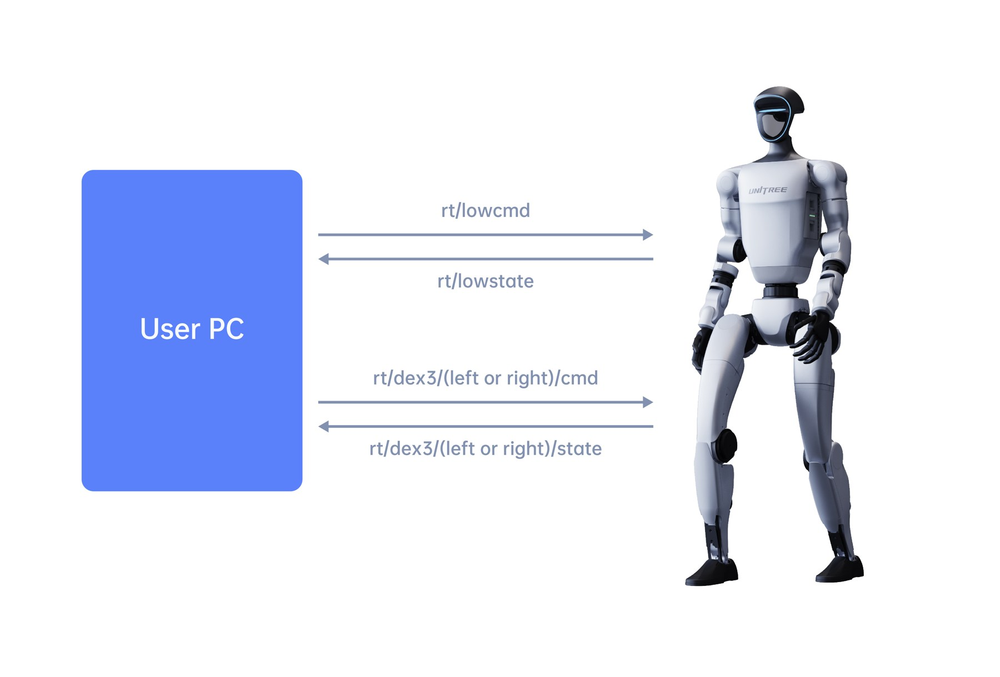
| LowCmd_ · 저수준 명령 | |
|---|---|
mode_pruint8 | 병렬 기구(발목 · 허리) 제어 방식. 0 = PR (기본), 1 = AB |
mode_machineuint8 | 기종. 4 = 23자유도, 5 = 29자유도, 6 = 27자유도 (허리 고정 29자유도) |
motor_cmdMotorCmd_[35] | 몸체 모터 명령 |
reserveuint32[4] | 예약 |
crcuint32 | 체크섬 (4장) |
| LowState_ · 저수준 상태 | |
|---|---|
versionuint32[2] | 버전 SDK |
mode_pruint8 | LowCmd_와 같음 |
mode_machineuint8 | LowCmd_와 같음 |
tickuint32 | 1 ms마다 1씩 느는 타이머 |
imu_stateIMUState_ | 골반 IMU |
motor_stateMotorState_[35] | 몸체 모터 상태 |
wireless_remoteuint8[40] | Unitree 리모컨 원시 데이터 |
reserveuint32[4] | 예약 |
crcuint32 | 체크섬 |
| MotorCmd_ · 모터 명령 | |
|---|---|
modeuint8 | 0 = 끔, 1 = 켬 |
q · dqfloat | 목표 관절 위치 (rad) · 속도 (rad/s) |
taufloat | 앞먹임 토크 |
kp · kdfloat | 관절 강성 · 감쇠 계수 |
reserveuint32 | 예약 |
| MotorState_ · 모터 상태 | |
|---|---|
modeuint8 | 현재 모터 모드 |
q · dq · ddqfloat | 관절 위치 (rad) · 속도 (rad/s) · 가속도 (rad/s²) |
tau_estfloat | 추정 관절 토크 |
temperatureint16[2] | 모터 온도 [0] 외피 · [1] 권선 |
volfloat | 모터 단자 전압 |
sensoruint32[2] | 센서 데이터 |
motorstateuint32 | 모터 상태 비트 (0 = 정상) |
reserveuint32[4] | 예약 |
| IMUState_ · IMU | |
|---|---|
quaternionfloat[4] | 자세 쿼터니언 (w, x, y, z 순) |
gyroscopefloat[3] | 각속도 x · y · z |
accelerometerfloat[3] | 가속도 x · y · z |
rpyfloat[3] | 오일러각 roll · pitch · yaw |
temperatureint16 | IMU 온도 |
| Dex3-1 손 메시지 | |
|---|---|
HandCmd_ | motor_cmd sequence<MotorCmd_> (손 모터 전체) · reserve uint32[4] |
HandState_ | motor_state sequence<MotorState_> · press_sensor_state sequence<PressSensorState_> · imu_state ·
power_v 전원 전압 · power_a 전원 전류 · system_v · device_v · error uint32[2] · reserve uint32[2] |
PressSensorState_ | 촉각 센서. pressure float[12] · temperature float[12] · lost uint32 · reserve uint32 |
LowState_맨 앞에 문서에 없는version(uint32[2])이 있습니다.MotorCmd_.reserve는 문서의 배열(3개)이 아니라 uint32 하나이고,MotorState_에는 문서가 예약으로 적은q_raw·dq_raw·ddq_raw가 없습니다.HandCmd_에는reserve가,HandState_에는system_v·device_v·error가,PressSensorState_에는lost·reserve가 더 있고,HandState_의 필드 순서도 다릅니다 (press_sensor_state가imu_state보다 앞). 위 표는 SDK 헤더 기준입니다.
모드 전환 — MotionSwitcherClient 문서 SDK
운동 제어 전환 서비스의 클라이언트입니다. RPC로 G1의 내장 운동 제어를 해제해, 리모컨 없이 사용자 저수준 개발(디버그) 상태로 들어갈 수 있습니다.
헤더 unitree/robot/b2/motion_switcher/motion_switcher_client.hpp, 이름공간 unitree::robot::b2, 서비스 이름 "motion_switcher", API 버전 1.0.0.1입니다.
Python은 unitree_sdk2py.comm.motion_switcher.motion_switcher_client에 있고, CheckMode()가 (코드, dict)를 돌려줍니다.
| 함수 · API ID | 설명 | 비고 |
|---|---|---|
CheckMode(std::string& form, std::string& name) · 1001 | 현재 로봇 형태와 운동 제어 모드 이름 | form "0" 표준형 · "1" 바퀴형. name이 비어 있으면 해제된 상태 |
SelectMode(const std::string& nameOrAlias) · 1002 | 운동 제어 모드 선택 | 모드 이름 또는 별칭 |
ReleaseMode() · 1003 | 운동 제어 해제 | 0 = 성공 |
SetSilent(bool) · 1004 · GetSilent(bool&) · 1005 | SDK 문서에 설명 없음 |
| 오류 | 뜻 | 오류 | 뜻 |
|---|---|---|---|
| 7001 | 요청 인자 오류 | 7006 | 확인(check) 명령 실행 오류 |
| 7002 | 서비스가 바쁨. 다시 시도 | 7007 | 전환(select) 명령 실행 오류 |
| 7003 | 잘못된 이벤트 SDK | 7008 | 해제(release) 명령 실행 오류 |
| 7004 | 지원하지 않는 모드 이름 | 7009 | 사용자 설정 저장 오류 |
| 7005 | 내부 명령 실행 오류 |
코드로 운동 제어 해제하기 SDK
SDK의 저수준 예제(g1_ankle_swing_example · g1_dual_arm_example)는 시작할 때 다음 순서로 운동 제어를 내려놓습니다.
name이 빌 때까지 해제를 되풀이한 뒤에야 rt/lowcmd 발행자를 만듭니다.
#include <unitree/robot/b2/motion_switcher/motion_switcher_client.hpp>
ChannelFactory::Instance()->Init(0, networkInterface);
auto msc = std::make_shared<unitree::robot::b2::MotionSwitcherClient>();
msc->SetTimeout(5.0f);
msc->Init();
std::string form, name;
while (msc->CheckMode(form, name), !name.empty()) { // name 이 비면 해제 완료
if (msc->ReleaseMode() != 0) std::cout << "Failed to switch to Release Mode\n";
sleep(5); // 5초 뒤 다시 확인
}
// 이제 rt/lowcmd 로 저수준 명령을 보냅니다 (4장)
g1_dual_arm_example은 CheckMode 결과를 사람이 읽는 이름으로 바꿔 출력합니다: form "0"에서 name normal → sport_mode, ai → ai_sport, advanced → advanced_sport
(form "1"의 ai-w · normal-w는 바퀴형 로봇용).
| 제어를 넘겨받는 방법 | 어떻게 | 되돌리기 | 명령 토픽 |
|---|---|---|---|
| 리모컨 디버그 모드 | L2 + R2 (제로 토크 · 댐핑에서) | 전원을 다시 켬 (운용 설명서) | rt/lowcmd |
| 코드로 해제 | MotionSwitcherClient::ReleaseMode() | 문서는 SelectMode()로 모드를 고른다고만 적음. 확실한 방법은 전원 재투입 | rt/lowcmd |
| 사용자 개발 모드 | LocoClient::SwitchToUserCtrl() (5장) | SwitchToInternalCtrl(LAST · PASSIVE · WALKRUN) | rt/user_lowcmd |
| 팔 · 허리만 | rt/arm_sdk 가중치 1 (5장) | 가중치를 천천히 0으로 | rt/arm_sdk |
- 운동 제어를 해제하면 리모컨 디버그 모드와 같이 내장 균형 제어와 모든 고수준 서비스(
LocoClient,rt/arm_sdk, 팔 동작)가 꺼집니다. - 코드로 해제할 때도 리모컨 절차와 똑같이 로봇을 거치대에 매달고 댐핑 상태에서 하십시오. 리모컨 담당자는 L2 + B 대기.
- 해제 직후 첫
rt/lowcmd명령은 측정 위치에서 출발해야 합니다 (4장의 영점 복귀처럼).
문서는 form을 "Go2 형태"로, name을 "위의 운동 제어 모드 이름 참조"로 적었지만 그 표는 페이지에 없습니다. 이 클라이언트는 Go2 · B2와 같은 서비스를 쓰며(SDK 이름공간 b2), 위 이름 대응은 SDK 예제 코드에서 옮긴 것입니다.
SDK에는 문서에 없는 SetSilent · GetSilent와 오류 7003이 더 있습니다.
시간 동기 문서
G1의 PC1(192.168.123.161)에는 시간 동기 서버가 들어 있습니다. 개발 PC나 PC2의 시계를 여기에 맞추면 로봇 데이터의 시각과 내 프로그램의 시각을 비교할 수 있습니다.
펌웨어 1.5.1보다 높은 버전에 해당합니다. 권장 도구는 Chrony이며, systemd-timesyncd도 쓸 수 있습니다.
G1을 Wi-Fi 모드로 둘 때마다 PC1이 인터넷 시간으로 자기 시계를 맞추며, 이때 잠깐 시각이 출렁일 수 있습니다. 시스템 시각에 의존하는 프로그램을 돌릴 때는 G1의 Wi-Fi 모드를 끄십시오.
Chrony (권장)
sudo apt-get install chrony # /etc/chrony/chrony.conf 에 추가 server 192.168.123.161 iburst prefer # 내부망 NTP 서버 = PC1 makestep 1.0 3 # 부팅 때 네트워크가 늦어도 나중에 맞춤 rtcsync # 하드웨어 시계도 동기 log tracking measurements statistics logdir /var/log/chrony # 재시작과 확인 sudo systemctl restart chrony chronyc sources -v # 192.168.123.161 앞에 ^* 가 붙으면 동기 중 chronyc tracking # Reference ID 가 (192.168.123.161)
재시작할 때 chrony.service가 core-dump(status=31/SYS)로 실패하면, 시스템의 보안 필터(seccomp)가 Chrony의 시스템 호출을 막은 것입니다.
/etc/default/chrony에 DAEMON_OPTS="-F 0"을 넣어 seccomp 필터를 끄고 다시 시작하십시오.
systemd-timesyncd
Chrony와 timesyncd는 함께 쓸 수 없습니다. Chrony를 설치하면 timesyncd가 자동으로 제거됩니다. 다시 timesyncd로 돌아가려면 (권장하지 않음):
sudo systemctl unmask systemd-timesyncd sudo apt install systemd-timesyncd sudo systemctl enable --now systemd-timesyncd # /etc/systemd/timesyncd.conf [Time] NTP=192.168.123.161 FallbackNTP= PollIntervalMinSec=32 PollIntervalMaxSec=2048 # 적용과 확인 sudo systemctl enable systemd-timesyncd sudo systemctl restart systemd-timesyncd timedatectl timesync-status # Server: 192.168.123.161 timedatectl status # System clock synchronized: yes
강화학습 예제 — unitree_rl_gym 문서
NVIDIA Isaac Gym 시뮬레이터 안에서 G1 보행 정책을 강화학습으로 학습하고 재생하는 Unitree의 입문 예제입니다. 저장소는
https://github.com/unitreerobotics/unitree_rl_gym, 학습 라이브러리는 rsl_rl을 씁니다.
| 항목 | 문서 권장 |
|---|---|
| GPU | NVIDIA RTX 계열, 그래픽 메모리 8 GB 초과, 드라이버 525 (Isaac Gym이 CUDA 필요) |
| 운영체제 | Ubuntu 18.04 · 20.04 |
| Python 환경 | conda 가상환경 rl-g1, Python 3.8 |
| PyTorch | torch==1.10.0+cu113 · torchvision==0.11.1+cu113 · torchaudio==0.10.0+cu113, numpy는 1.23.5 권장 (너무 높으면 안 됨) |
| 시뮬레이터 | Isaac Gym Preview 4 (NVIDIA 사이트에서 내려받음) |
| 학습 라이브러리 | rsl_rl v1.0.2 |
conda create -n rl-g1 python=3.8 && conda activate rl-g1
pip3 install torch==1.10.0+cu113 torchvision==0.11.1+cu113 torchaudio==0.10.0+cu113 \
-f https://download.pytorch.org/whl/cu113/torch_stable.html
cd isaacgym/python && pip install -e . # Isaac Gym Preview 4
cd examples && python 1080_balls_of_solitude.py # 예제 창이 뜨면 설치 성공
git clone https://github.com/leggedrobotics/rsl_rl
cd rsl_rl && git checkout v1.0.2 && pip install -e .
git clone https://github.com/unitreerobotics/unitree_rl_gym.git
- 경로 수정
legged_gym/scripts/train.py와play.py의sys.path.append("…/legged_gym")를 내 클론 경로로 바꿉니다 (문서의 예시 경로는 H1용/home/unitree/h1/legged_gym). - 학습
legged_gym/scripts에서python3 train.py --task=g1. 화면 표시를 끄고 켜려면train.py의args.headless를 바꿉니다. Isaac Gym 창과 터미널에 학습 로그가 나오면 시작된 것입니다. - 재생문서 기준 1500회(iteration) 학습한 뒤
python play.py --task=g1로 학습한 정책을 시뮬레이션에서 돌려 봅니다.
- 문서의 절차는 시뮬레이션 안의 학습과 재생까지입니다. 실제 G1에서 정책을 돌리는 절차는 이 페이지에 없습니다.
- 정책이 실제 관절을 움직이려면 저수준 제어(4장)로 명령을 보내야 합니다. 운동 제어 해제(디버그 모드 또는
ReleaseMode), 거치대, 리모컨 댐핑 대기 등 4장과 이 장의 절차를 모두 지키십시오. - 제어 루프에
terminations.hpp의 보호 함수(자세 이상 · 관절 속도 · 연결 끊김 등, 4장)를 넣고, 참이면 모터를 수동 상태로 두십시오. - 처음에는 매단 상태에서 시험하고, 바닥에 내리는 것은 매단 상태에서 동작이 안정한 것을 확인한 뒤에 하십시오.
다관절 손
G1 EDU에는 Unitree Dex3-1, Inspire FTP · DFX, BrainCo Revo2 손을 달 수 있습니다. 어느 손이든 사용자 프로그램은 DDS 토픽으로 명령을 보내고 상태를 받습니다. 차이는 손과 로봇 사이를 누가 이어 주느냐입니다. Dex3-1은 로봇 안의 상주 서비스가, 다른 손은 PC2에서 실행하는 변환 서비스가 직렬 · Modbus 통신을 DDS로 바꿉니다.
손 비교 문서
| 손 | 자유도 | 연결 · 통신 | DDS 변환 | 토픽 | 명령 값 |
|---|---|---|---|---|---|
| Dex3-1 (Unitree) | 3지 7 | RS-485, 정격 24 V | 로봇 상주 서비스 (설치 불필요) | rt/dex3/{left,right}/cmd · /state | q(rad) · kp · kd · tau + mode 바이트 |
| Inspire FTP | 5지 6 (관절 12) | Modbus TCP(이더넷) 또는 Modbus RTU(RS-485, USB 변환) | inspire_hand_sdk (Python) | rt/inspire_hand/{ctrl,state,touch}/{l,r} | 각도 · 위치 · 힘 · 속도 (int16) + mode 비트 |
| Inspire DFX (RH56DFX) | 5지 6 (관절 12) | 직렬 (USB 변환, 손마다 포트) | DFX_inspire_service | rt/inspire/cmd · rt/inspire/state | q 0 ~ 1 (0 쥠, 1 폄) |
| BrainCo Revo2 | 5지 6 | 직렬 (손마다 USB 변환) | brainco_hand_service | rt/brainco/{left,right}/{cmd,state} | 위치 · 속도 0 ~ 1 |
| Dex2-5 · Dex1-1 (Hand SDK) | 모터 4 | 내장 운동 제어(ai_sport) 경유 | ai_sport (내장) | rt/hand_sdk | q · dq · kp · kd · tau + 가중치 |
손을 단 채로 팔을 움직이면 손이 몸통에 부딪칠 수 있습니다. 어깨 모터에 바깥쪽 여유를 두고, 손을 단 상태에서는 달리기 · 균형 시험 같은 격한 동작을 하지 마십시오. 문서
Dex3-1 문서 SDK
엄지 · 검지 · 중지 3손가락이며, 손가락마다 굽힘 2자유도에 엄지 회전 1자유도를 더해 7자유도입니다. 동작 전압 12 ~ 58 V, 정격 24 V, 통신은 RS-485입니다.
로봇 안의 상주 서비스가 손과 RS-485로 통신하고 이를 DDS 메시지로 바꾸므로, 사용자는 unitree_sdk2의 메시지만 다룹니다.
왼손과 오른손은 좌우 대칭이며 각자의 토픽으로 따로 제어합니다. 선택 사양인 촉각 센서는 배열 9개, 감지 범위 10 ~ 2500 g입니다.
메시지 헤더: include/unitree/idl/hg/HandCmd_.hpp · HandState_.hpp · PressSensorState_.hpp (설치 후 /usr/local/include/unitree/idl/hg/). 타입 이름공간은 unitree_hg::msg::dds_입니다. SDK
모터 순서
메시지 배열(HandCmd_.motor_cmd · HandState_.motor_state)의 순서는 엄지 → 중지 → 검지입니다. URDF 관절 이름은 왼손과 오른손에서 번호가 다르게 붙어 있으니 아래 표로 대응시키십시오.
| IDL 번호 | 이름 | 왼손 URDF | 오른손 URDF | 왼손 범위 (rad) | 오른손 범위 (rad) |
|---|---|---|---|---|---|
| 0 | thumb_0 | left_hand_zero | right_hand_zero | −1.05 ~ 1.05 | −1.05 ~ 1.05 |
| 1 | thumb_1 | left_hand_one | right_hand_one | −0.724 ~ 1.05 | −1.05 ~ 0.742 |
| 2 | thumb_2 | left_hand_two | right_hand_two | 0 ~ 1.75 | −1.75 ~ 0 |
| 3 | middle_0 | left_hand_five | right_hand_three | −1.57 ~ 0 | 0 ~ 1.57 |
| 4 | middle_1 | left_hand_six | right_hand_four | −1.75 ~ 0 | 0 ~ 1.75 |
| 5 | index_0 | left_hand_three | right_hand_five | −1.57 ~ 0 | 0 ~ 1.57 |
| 6 | index_1 | left_hand_four | right_hand_six | −1.75 ~ 0 | 0 ~ 1.75 |
범위는 SDK 예제 g1_dex3_example.cpp의 URDF 한계값(minLimits_* · maxLimits_*)입니다. SDK
검지 · 중지의 범위는 왼손이 음수 쪽, 오른손이 양수 쪽입니다. URDF는 unitree_ros/robots/g1_description에 있습니다.
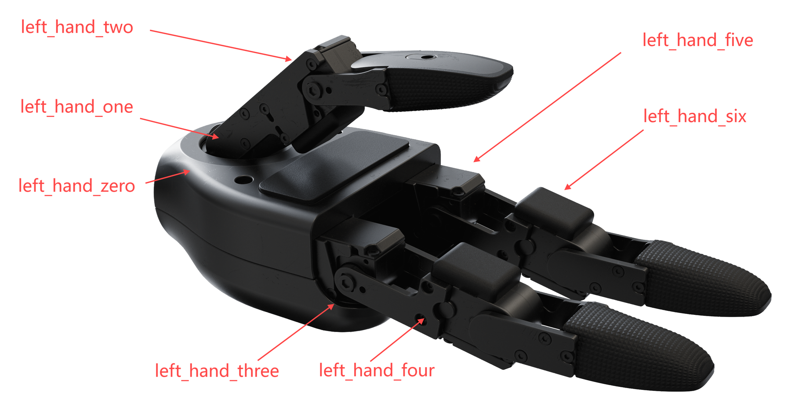
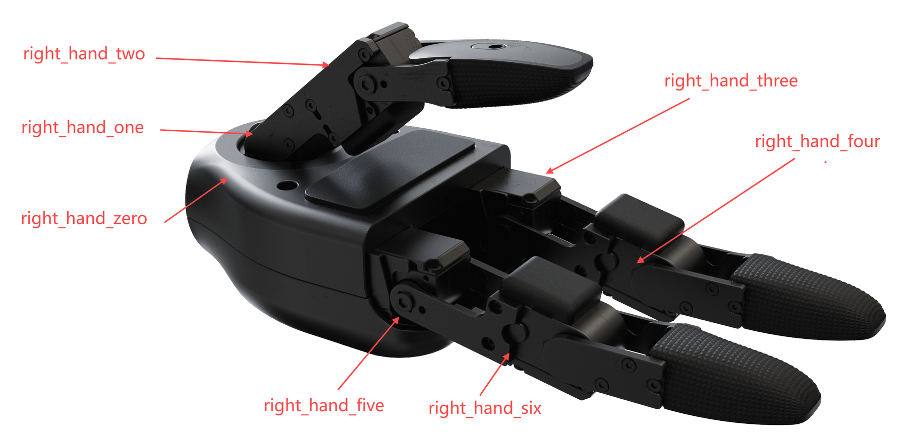
토픽
| 토픽 | 타입 · 방향 |
|---|---|
rt/dex3/left/cmd · rt/dex3/right/cmd | HandCmd_ · 사용자 → 손 |
rt/dex3/left/state · rt/dex3/right/state | HandState_ · 손 → 사용자 문서 |
rt/lf/dex3/left/state · rt/lf/dex3/right/state | HandState_ 저주파판. SDK 예제가 구독하는 토픽 SDK |
HandCmd_ — 명령 SDK
| 필드 | 설명 |
|---|---|
motor_cmd : sequence<MotorCmd_> | 모터 7개. 보내기 전에 resize(7) |
reserve : uint32[4] | 예약 |
MotorCmd_.mode : uint8 | 모터 번호 · 작동 상태 · 시간 초과 보호를 묶은 바이트 (아래 표) |
MotorCmd_.q · dq · tau : float | 목표 위치(rad, 위 범위 안) · 목표 속도 · 앞먹임 토크 |
MotorCmd_.kp · kd : float | 강성 · 감쇠. 예제 값: 회전 0.5 / 0.1, 쥐기 1.5 / 0.1, 정지 0 / 0 |
MotorCmd_.reserve : uint32 | 예약 |
| mode 비트 | 필드 | 값 |
|---|---|---|
| 0 – 3 | id | 모터 번호 0 ~ 14. 15는 모든 모터에 방송 |
| 4 – 6 | status | 0 = 잠금(Lock), 1 = FOC. 예제는 모두 1 |
| 7 | timeout | 명령: 0 = 시간 초과 보호 끔, 1 = 켬 (기본 1 s). 상태: 1 = 보호가 작동함 (이 비트를 0으로 보내야 풀림) |
# 모터 i, FOC, 시간 초과 보호 켬 → 0x90 | i uint8_t mode = (i & 0x0F) | ((1 & 0x07) << 4) | ((1 & 0x01) << 7); msg.motor_cmd()[i].mode(mode); msg.motor_cmd()[i].q(q); msg.motor_cmd()[i].dq(0); msg.motor_cmd()[i].tau(0); msg.motor_cmd()[i].kp(1.5); msg.motor_cmd()[i].kd(0.1); handcmd_publisher->Write(msg); # 토픽 rt/dex3/left/cmd
HandState_ — 상태 SDK
| 필드 | 설명 |
|---|---|
motor_state : sequence<MotorState_> | 모터 7개. 각 항목: mode · q · dq · ddq · tau_est · temperature[2] · vol · sensor[2] · motorstate · reserve[4] |
press_sensor_state : sequence<PressSensorState_> | 촉각 배열. SDK 예제는 9개로 잡습니다 (SENSOR_MAX 9) |
imu_state : IMUState_ | quaternion[4] · gyroscope[3] · accelerometer[3] · rpy[3] · temperature |
power_v · power_a | 손 전체 입력 전원의 전압 · 전류 |
system_v | 손 내부 전원 전압 |
device_v | 손 안 강압 모듈의 출력 전압 |
error : uint32[2] | 오류 코드. 뜻은 모터 상태 오류 표(Common Mistakes and Definitions)와 같습니다 |
reserve : uint32[2] | 예약 |
촉각 배열 — PressSensorState_
배열 하나가 패킷 하나이며, 패킷마다 12개 값이 있습니다. 엄지에 2개(ID 0 중간 마디, ID 1 끝), 나머지 두 손가락에 2개씩(ID 2 ~ 5), 손바닥에 3개(ID 6 ~ 8)가 있습니다. 그림의 작은 숫자는 그 위치에 해당하는 배열 인덱스입니다.
| 필드 (SDK) | 설명 |
|---|---|
pressure : float[12] | 압력 값 12개. 100000 이상이면 유효, 30000이면 값 없음. 표시 · 계산할 때는 100000을 10.0000으로 줄여 쓰라고 문서는 권장합니다 문서 |
temperature : float[12] | 센서 온도 |
lost · reserve : uint32 | 문서에 설명 없음 |
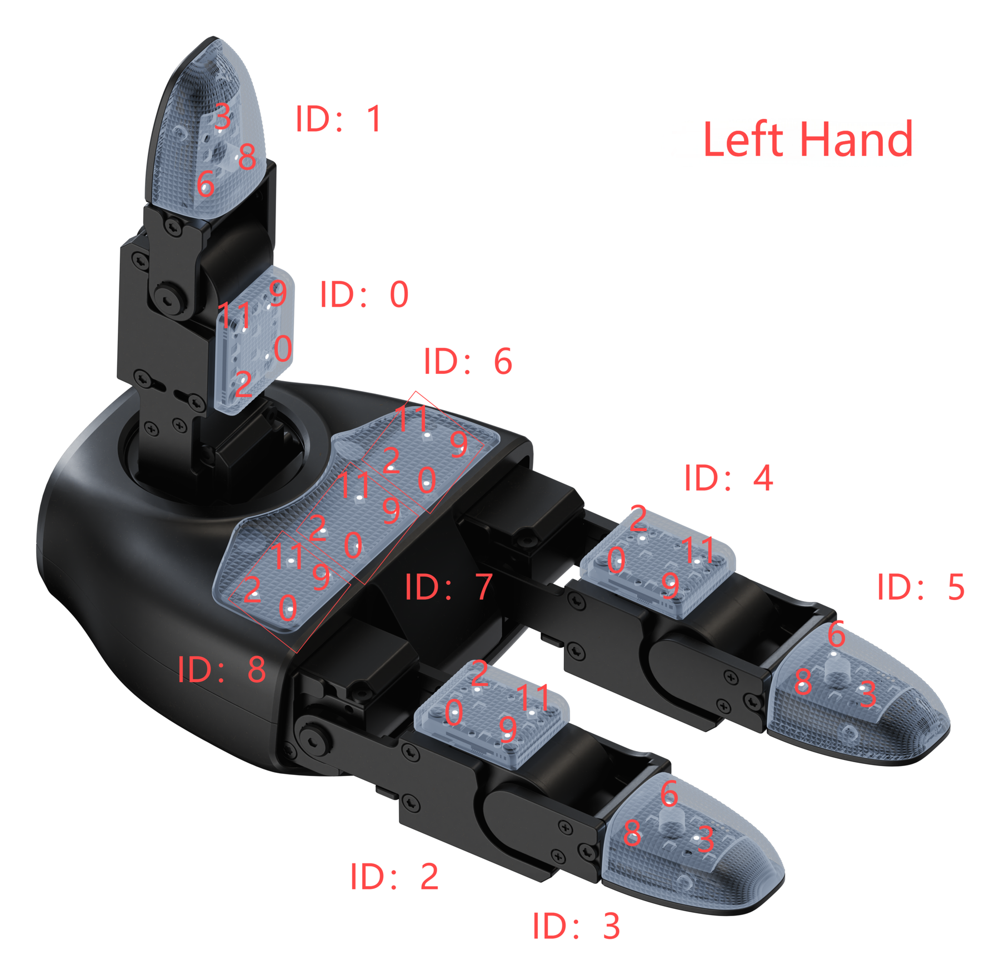
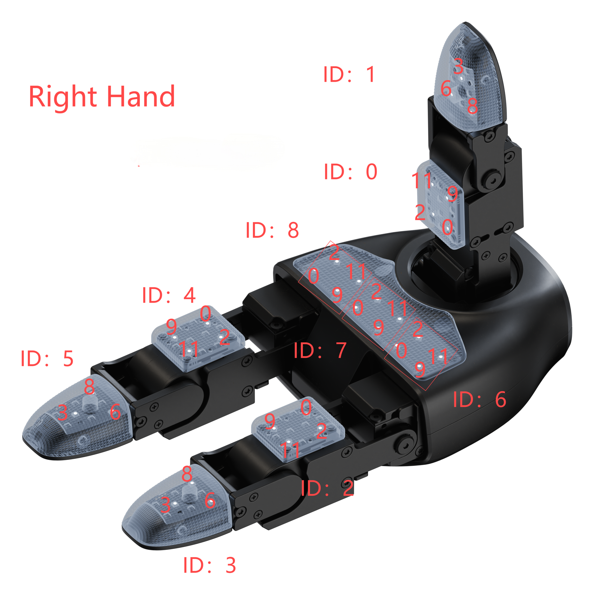
예제 — g1_dex3_example SDK
소스는 unitree_sdk2/example/g1/dex3/g1_dex3_example.cpp, 실행 파일은 build/bin/g1_dex3_example입니다. 실행 후 L 또는 R을 입력해 손을 고릅니다.
./build/bin/g1_dex3_example enxf8e43b808e06 Please input the hand id (L for left hand, R for right hand): L
| 키 | 동작 |
|---|---|
| r Rotate | 모든 관절을 범위 전체에 걸쳐 사인파로 왕복 (kp 0.5, kd 0.1). 손을 고르자마자 이 상태로 시작합니다 |
| g Grip | 모든 관절을 범위 가운데로 보내 유지 (kp 1.5, kd 0.1). 1초마다 다시 보냄 |
| p Print | rt/lf/dex3/*/state의 q를 범위 기준 0 ~ 1로 정규화해 0.1초마다 출력 |
| s Stop | kp = kd = 0, q = 0으로 힘을 뺌. 1초마다 다시 보냄 |
| q Quit | Stop 상태로 바꾸고 키 입력을 끝냅니다. 프로그램은 계속 정지 명령을 보내므로 Ctrl+C로 끝내십시오 |
손을 선택하면 곧바로 Rotate가 시작되어 손가락이 범위 끝까지 움직입니다. 실행 전에 손 주변의 물건과 손가락을 치우십시오.
- 문서의 예제 경로
example/g1/dex3/dex3_subscribe.cpp와 헤더 경로unitree/hg_idl/은 SDK(a4e2d9e · 8e1b927 모두)에 없습니다. 실제는g1_dex3_example.cpp와unitree/idl/hg/입니다. - 문서의
PressSensorState는unsigned short data[12] · id · temp이지만, SDK 메시지는float pressure[12] · float temperature[12] · lost · reserve입니다. 배열 ID는 필드가 아니라press_sensor_state안의 순서입니다. - 문서는 "손가락 끝 6곳에 3×4 배열"이라고 적었지만, 같은 문서의 그림 · About G1 사양 · SDK 예제는 배열 9개(ID 0 ~ 8)입니다. Python SDK의 기본 생성자
unitree_hg_msg_dds__HandState_()는 7개로 만듭니다. 받은 메시지의 길이를 확인하십시오. - 문서의
MotorCmd_t(20바이트,pos_des32768/2π = 1 rad 같은 정수 스케일, CRC32)는 손 내부 RS-485 패킷입니다. DDS로 보내는MotorCmd_는float필드이며 사용자는 이것만 채웁니다. - 문서는
rt/dex3/*/state를, SDK 예제는rt/lf/dex3/*/state를 구독합니다. - SDK 예제의 Rotate · Grip은
timeout비트를 초기화하지 않습니다. 직접 짤 때는 0 또는 1로 명시하십시오.
Inspire FTP 문서
Inspire Robotics의 5지 손으로 6자유도 · 관절 12개입니다. 촉각형에는 촉각 센서 17개가 들어 있습니다. 직접 Inspire 공식 프로토콜로 제어해도 되고,
Unitree가 제공하는 inspire_hand_sdk(Python, unitree_sdk2_python 기반)로 DDS 토픽을 쓸 수도 있습니다. 이 SDK는 PyQt5 · PyQtGraph로 화면을 그립니다.
연결
| 방식 | 내용 |
|---|---|
| Modbus TCP | 기본 IP 왼손 192.168.123.210 · 오른손 192.168.123.211, 포트 6000. 드라이버를 돌리는 장치는 같은 대역이어야 합니다. ping으로 확인. 촉각 데이터는 이 방식에서만 나옵니다 |
| Modbus RTU (RS-485) | G1이 제공하는 USB-직렬 모듈을 PC2에 꽂습니다. 포트는 보통 /dev/ttyUSB0, 115200 bps. 이름에 485가 붙은 프로그램을 씁니다. 대역폭 때문에 버스 하나에 장치 하나, 약 20 Hz. 촉각 없는 모델은 RS-485만 지원 |
직렬 포트 권한: sudo usermod -aG dialout $USER 후 다시 로그인하고 ls -l /dev/ttyUSB0으로 확인합니다.
토픽과 메시지
| 토픽 | 타입 · 내용 |
|---|---|
rt/inspire_hand/ctrl/{r,l} | inspire::inspire_hand_ctrl · 사용자 → 손 |
rt/inspire_hand/state/{r,l} | inspire::inspire_hand_state · 손 → 사용자 |
rt/inspire_hand/touch/{r,l} | inspire::inspire_hand_touch · 촉각. RS-485에서는 발행되지 않음 |
접미사는 드라이버의 LR 인자이며 기본값은 r(오른손)입니다. IDL 파일은 inspire_hand_sdk/hand_idl에 있습니다.
| 필드 | 설명 |
|---|---|
ctrl.angle_set · pos_set · force_set · speed_set : int16[6] | 각도 · 위치 · 힘 · 속도 목표. 값의 범위와 단위는 Inspire 공식 프로토콜 문서를 따릅니다 |
ctrl.mode : int8 | 어느 목표를 적용할지 고르는 비트. bit0 = 각도(1), bit1 = 위치(2), bit2 = 힘(4), bit3 = 속도(8). 더해서 씁니다. 예: 0 = 동작 없음, 5 = 각도 + 힘, 15 = 모두 |
state.pos_act · angle_act · force_act · current : int16[6] | 실제 위치 · 각도 · 힘 · 전류 |
state.err · status · temperature : uint8[6] | 오류 · 상태 · 온도 |
| 배열 번호 | 관절 |
|---|---|
| 0 · 1 | 새끼 · 약지 |
| 2 · 3 | 중지 · 검지 |
| 4 | 엄지 굽힘 |
| 5 | 엄지 회전 |
촉각 필드 (int16) | 개수 |
|---|---|
finger{one,two,three,four}_tip / _top / _palm_touch새끼 · 약지 · 중지 · 검지 | 9 · 96 · 80 |
fingerfive_tip / _top / _middle / _palm_touch엄지 | 9 · 96 · 9 · 96 |
palm_touch손바닥 | 112 |
설치
- 내려받기
git clone https://github.com/NaCl-1374/inspire_hand_ws.git후 그 안에서git submodule init && git submodule update - unitree_sdk2_python
cd unitree_sdk2_python && pip install -e .그 저장소의 시험이 통과한 뒤 다음으로 넘어갑니다. cyclonedds 경로 오류가 나면 cyclonedds를 먼저 빌드 · 설치합니다 - inspire_hand_sdk
cd ../inspire_hand_sdk && pip install -e . - 손 설정설정 패널(
init_set_inspire_hand.py)이 네트워크의 손을 읽어 옵니다. 값을 바꾼 뒤 Write Settings로 보내고 Save Settings 후 손을 다시 켜야 적용됩니다. RS-485는 장치 ID와 포트 번호를 같은 패널에서 바꿉니다 - IP를 바꿨다면
Vision_driver.py·Headless_driver.py의ModbusDataHandler(ip=…, LR='r', device_id=1)와init_set_inspire_hand.py의MainWindow(ip=…)를 새 IP로 고칩니다.192.168.123.x대역을 권장하며, DDS 네트워크 카드 이름도 맞춥니다
ModbusDataHandler 인자 (기본값) | 설명 |
|---|---|
network (None) | DDS 네트워크 카드 이름 |
ip · port (6000) | Modbus TCP 주소 · 포트 |
device_id (1) · LR ('r') | 손 ID · 토픽 접미사 l / r |
use_serial (False) · serial_port ('/dev/ttyUSB0') · baudrate (115200) | RS-485 사용 여부 · 포트 · 속도 |
data (data_sheet) · states_structure (None) | 촉각 레지스터 정의 · 발행할 상태 레지스터 목록 (이름, 시작 주소, 길이, 형식). None이면 전부 |
history_length (100) | 상태 기록 길이 |
initDDS (True) | ChannelFactoryInitialize(0) 실행. 프로그램 전체에서 한 번만 |
max_retries (5) · retry_delay (2 s) | Modbus 연결 재시도. 끝내 실패하면 ConnectionError |
read()를 반복 호출하면 데이터를 읽어 돌려주면서 DDS 메시지도 발행합니다.
예제 (inspire_hand_sdk/example/) | 용도 |
|---|---|
dds_publish.py | DDS로 제어 명령 발행 |
dds_subscribe.py | 상태 · 촉각 구독과 그래프 표시 |
Headless_driver.py | DDS 드라이버(화면 없음). 이름에 485가 있으면 RS-485, 없으면 TCP. 접미사 l / r / double = 왼손 / 오른손 / 양손 |
Vision_driver.py | DDS 드라이버(패널 표시) |
init_set_inspire_hand.py | 설정 패널 (IP · ID 등) |
hand_dds (C++) | cd inspire_hand_sdk && mkdir build && cd build && cmake .. && make && ./hand_dds |
Inspire DFX (RH56DFX) 문서
Inspire Robotics RH56DFX는 6자유도 · 관절 12개의 5지 손이며 직렬 통신만 씁니다. G1이 제공하는 USB-직렬 모듈을 PC2에 꽂으면 보통 /dev/ttyUSB1이 왼손, /dev/ttyUSB2가 오른손입니다.
Inspire 공식 프로토콜로 직접 짜거나, Unitree의 변환 서비스로 DDS 토픽을 씁니다.
| 토픽 | 타입 · 내용 |
|---|---|
rt/inspire/cmd | unitree_go::msg::dds_::MotorCmds_ (cmds, 12개) · 사용자 → 손 |
rt/inspire/state | unitree_go::msg::dds_::MotorStates_ (states, 12개) · 손 → 사용자 |
| 번호 | 0 | 1 | 2 | 3 | 4 | 5 |
|---|---|---|---|---|---|---|
| 오른손 0 ~ 5 | 새끼 | 약지 | 중지 | 검지 | 엄지 굽힘 | 엄지 회전 |
| 왼손 6 ~ 11 | 새끼 | 약지 | 중지 | 검지 | 엄지 굽힘 | 엄지 회전 |
현재는 관절 위치 제어만 지원하여 q만 의미가 있고 나머지 필드는 예약입니다. q는 0 ~ 1이며 0이 쥠, 1이 폄입니다. 예제는 open = 1, close = 0, half = 0.5를 미리 정해 둡니다.
cmd.cmds().resize(12);
for (int i = 0; i < 6; i++) {
cmd.cmds()[i].q() = right(i); # 0 쥠 ~ 1 폄
cmd.cmds()[i + 6].q() = left(i);
}
handcmd->Write(cmd); # 토픽 rt/inspire/cmd
| 배포 | 내용 |
|---|---|
| 2024-05-07 | 첫 배포. H1용 루틴을 재사용한 압축 파일 (Unitree 문서의 다운로드 링크) |
| 2025-08-28 | https://github.com/unitreerobotics/DFX_inspire_service.git |
Unitree 문서에는 빌드 · 실행 명령이 없습니다. 위 저장소의 README를 따르십시오.
BrainCo Revo2 문서
BrainCo 2세대 손(Revo2)은 6자유도이며 직렬 통신을 씁니다. 제조사가 C · Python SDK를 제공하고, Unitree의 brainco_hand_service가 직렬 메시지를 DDS로 바꿉니다.
- 손마다 USB-직렬 장치 하나를 쓰고, 손마다
rt/brainco/{left,right}/{cmd,state}토픽 한 쌍이 생깁니다. - 손가락 위치와 속도는 0 ~ 1로 정규화되어 있습니다. 속도는 모두 1.0으로 두기를 권장합니다.
- 배열 순서:
[Thumb, Thumb_aux, Index, Middle, Ring, Pinky]= 엄지 · 엄지 보조 · 검지 · 중지 · 약지 · 새끼. - 장치 ID: 왼손 126, 오른손 127.
git clone --recursive https://github.com/unitreerobotics/brainco_hand_service sudo apt install libspdlog-dev libfmt-dev cd brainco_hand_service/thirdparty/stark-serialport-example && ./download-lib.sh # 최신 stark-serialport-example 이 필요하면 BrainCoTech 저장소에서 직접 받습니다 cd ../.. && mkdir build && cd build cmake .. -DCMAKE_BUILD_TYPE=Release && make # 터미널 1: 서비스 (126 왼손, 127 오른손) sudo ./brainco_hand --id 126 --serial /dev/ttyUSB0 # 터미널 2: 예제 ./example_brainco_hand left # 또는 right
Hand SDK — rt/hand_sdk (Dex2-5 · Dex1-1) 문서
내장 운동 제어 모듈 ai_sport가 손 · 그리퍼를 기본으로 제어하는 경우, 사용자가 rt/hand_sdk에 명령을 보내 그 위에 섞어 넣는 인터페이스입니다.
대상은 5지 2자유도 손 Dex2-5와 평행 그리퍼 Dex1-1이며, 모터는 4개입니다. 섞는 식은 다음과 같고 kp · kd · q · dq · tau 다섯 필드 모두에 적용됩니다.
Motor_real = weight × Hand_SDK + (1 − weight) × G1_Cmd # G1_Cmd = ai_sport가 현재 FSM에서 계산한 기본 손 명령
unitree_go::msg::dds_::MotorCmds_ cmds[0..3] | 설명 |
|---|---|
cmds[0].mode : uint8 | 가중치 × 100, 0 ~ 100 정수 (weight = mode / 100.0). 나머지 세 모터의 mode는 쓰지 않음 |
q · dq | 목표 관절 위치 · 속도 |
kp · kd | 위치 강성 · 속도 감쇠 |
tau | 앞먹임 토크. 양수 = 쥠, 음수 = 폄 (팔 관절의 각도 부호와 무관) |
msg.cmds().resize(4); msg.cmds()[0].mode(static_cast<uint8_t>(std::clamp(w, 0.f, 1.f) * 100.f)); # 가중치 for (int i = 0; i < 4; ++i) msg.cmds()[i].tau(0.3f); # +0.3 쥠 / −0.3 폄 publisher->Write(msg); # 토픽 rt/hand_sdk
Unitree 예제 g1_hand_sdk_example.cpp는 가중치 1.0으로 손을 넘겨받아 1초마다 tau를 +0.3 / −0.3으로 바꿔 쥐었다 폈다를 반복합니다.
실행 전 확인: ① 로봇에서 ai_sport가 돌고 있음, ② 로봇이 댐핑 상태가 아님, ③ 호환되는 손 · 그리퍼가 달려 있음.
- 댐핑 상태에서는 사용자 명령이 모터로 가지 않습니다. 댐핑에서 나온 뒤에는 가중치를 다시 설정해야 합니다.
- 가중치는 천천히 올리십시오. 기본 명령과 사용자 목표가 크게 다르면 0 → 1 한 번에 바꿀 때 손이 갑자기 움직입니다.
- 사용자 프로세스가 발행을 멈추면 시간 초과로
ai_sport의 기본 동작으로 자동 복귀합니다. 따로 해제 호출은 필요 없습니다.
이 예제(example/g1/high_level/g1_hand_sdk_example.cpp, 실행 파일 g1_hand_sdk_example)는 SDK 2026-10-30 판(8e1b927)에 들어 있습니다. 그보다 오래된 SDK(예: 2026-03-12 a4e2d9e)에는 없으므로 SDK를 최신으로 받으십시오.
메시지 타입 unitree_go::msg::dds_::MotorCmds_(mode · q · dq · tau · kp · kd · reserve[3])는 SDK에서 확인했습니다. SDK
센서 · SLAM 내비게이션
G1은 내장 서비스를 통해 오도메트리와 라이다 데이터를 DDS 토픽으로 냅니다. 라이다 MID-360과 깊이 카메라 D435i는 제조사 SDK로 직접 읽을 수도 있습니다.
EDU 모델의 SLAM 서비스 slam_operate는 지도 작성 → 위치 재추정 → 목표 이동을 RPC 호출 몇 개로 수행합니다.
센서 토픽 한눈에 문서 SDK
| 토픽 | 타입 | 주기 · 비고 |
|---|---|---|
rt/odommodestate | unitree_go::msg::dds_::SportModeState_ | 500 Hz |
rt/lf/odommodestate | unitree_go::msg::dds_::SportModeState_ | 20 Hz. 고주파와 동시에 구독 가능 |
rt/utlidar/cloud_livox_mid360 | sensor_msgs::msg::dds_::PointCloud2_ | 10 Hz, frame_id = "livox_frame" |
rt/utlidar/imu_livox_mid360 | sensor_msgs::msg::dds_::Imu_ | 200 Hz |
헤더: unitree/idl/go2/SportModeState_.hpp, unitree/idl/ros2/PointCloud2_.hpp · Imu_.hpp. Python SDK(unitree_sdk2py, 18b9ef8)에는 PointCloud2_는 있지만 Imu_ 타입이 없습니다. SDK
오도메트리 서비스 문서
로봇의 위치 · 속도 · 오일러각 · yaw 각속도 · 쿼터니언을 냅니다. 필요한 내장 서비스 버전은 State Estimator 1.0.0.1 이상이며, 낮으면 기술 지원에 업그레이드를 요청하십시오.
이 오도메트리는 운동 제어 시스템에 기대는 고수준 인터페이스입니다. 운동 제어를 끈 디버그 모드(저수준 개발)에서는 동작하지 않습니다.
| 좌표계 | 정의 |
|---|---|
| 월드 | 원점은 몸통(base) 중심을 바닥에 투영한 점. x = 몸통 앞, y = 왼쪽, z = 위 (오른손 법칙) |
| 로봇 | 원점은 몸통 중심. 축 방향은 월드 좌표계와 같게 둡니다 |
필드 (SportModeState_) | 단위 | 뜻 |
|---|---|---|
position[3] | m | 몸통 중심의 위치, 월드 x · y · z |
velocity[3] | m/s | 몸통 중심의 속도, 월드 x · y · z |
imu_state.rpy[3] | rad | 오일러각. 로봇 좌표계가 월드 x · y · z축을 중심으로 돈 각 |
yaw_speed | rad/s | 로봇 좌표계 z축 둘레의 각속도 |
imu_state.quaternion[4] | — | 월드에 대한 로봇 좌표계의 회전. 순서 w, x, y, z, w² + x² + y² + z² = 1 |
SportModeState_에는 이 밖에도 stamp · error_code · mode · progress · gait_type · foot_raise_height · body_height · range_obstacle · foot_force · foot_position_body · foot_speed_body · path_point가 있습니다 (Go2와 같은 메시지). SDK
G1 문서는 위 다섯 항목만 정의하므로 나머지 값에 기대지 마십시오.
# C++: 문서 예제의 핵심 (고주파 · 저주파 각각 구독) ChannelFactory::Instance()->Init(0, argv[1]); auto sub = std::make_shared<ChannelSubscriber<unitree_go::msg::dds_::SportModeState_>>("rt/odommodestate"); sub->InitChannel([](const void* m){ auto& s = *(const unitree_go::msg::dds_::SportModeState_*)m; # s.position()[0..2], s.velocity()[0..2], s.imu_state().rpy(), s.yaw_speed(), s.imu_state().quaternion() }, 1); # Python from unitree_sdk2py.core.channel import ChannelFactoryInitialize, ChannelSubscriber from unitree_sdk2py.idl.unitree_go.msg.dds_ import SportModeState_ ChannelFactoryInitialize(0, "enxf8e43b808e06") sub = ChannelSubscriber("rt/lf/odommodestate", SportModeState_) sub.Init() # 핸들러 없이 열고 msg = sub.Read(0.5) # 초 단위로 기다려 한 개 읽기. 없으면 None
Python에서는 핸들러 콜백보다 위처럼 스레드에서 Read()로 계속 읽는 방식이 안정적이었습니다 (콜백이 첫 샘플 뒤 멈춘 사례). 실측
라이다 서비스 문서
라이다 Livox MID-360은 머리 가운데에 있습니다. 필요한 내장 서비스 버전은 Lidar Driver 1.0.0.5 이상입니다.
2026년 4월 이후 생산된 G1은 라이다가 Mid360s로 바뀌었습니다. 라이다를 직접 다루는 사용자는 Livox 공식 Livox-SDK2와 livox_ros_driver2를 새 판으로 올려야 합니다 (https://github.com/Livox-SDK).
| 관계 | 값 |
|---|---|
| 라이다 내부 IMU → 라이다 | 평행 이동 (0.011, 0.02329, −0.04412) m, 회전 없음 |
| 로봇 좌표계 기준 라이다 좌표계 | 위치 (−0.0, 0.0, −0.47618) m, 뒤집어(inverted) 장착 |
| 라이다 pitch 기울기 | −2.3° |
# IMU → 라이다 변환 행렬
[ 1 0 0 0.011 ]
[ 0 1 0 0.02329 ]
[ 0 0 1 −0.04412 ]
[ 0 0 0 1 ]
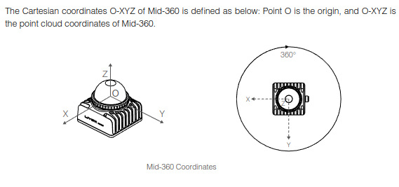
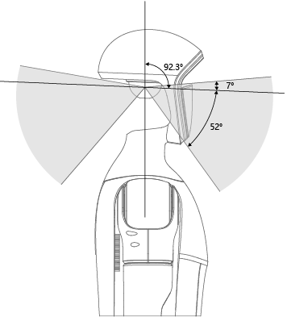
# 구독 예 (C++). 헤더 unitree/idl/ros2/PointCloud2_.hpp · Imu_.hpp
ChannelSubscriberPtr<sensor_msgs::msg::dds_::PointCloud2_> lidar(
new ChannelSubscriber<sensor_msgs::msg::dds_::PointCloud2_>("rt/utlidar/cloud_livox_mid360"));
ChannelSubscriberPtr<sensor_msgs::msg::dds_::Imu_> imu(
new ChannelSubscriber<sensor_msgs::msg::dds_::Imu_>("rt/utlidar/imu_livox_mid360"));
lidar->InitChannel(LidarHandler, 1); imu->InitChannel(ImuHandler, 1);
라이다 직접 사용 — Livox 도구 문서
네트워크
라이다의 공장 IP는 192.168.123.120입니다. PC를 로봇에 랜선으로 연결하고 IP를 192.168.123.x, 넷마스크 255.255.255.0, 게이트웨이 192.168.123.1로 설정한 뒤 ping 192.168.123.120으로 확인합니다.
Livox 자료(제품 페이지 · 다운로드 · GitHub)는 livoxtech.com/mid-360과 github.com/Livox-SDK에 있습니다.
Livox Viewer 2
Livox가 제공하는 PC 프로그램으로, 점군을 바로 보고 라이다 설정(IP 등)을 바꿀 수 있습니다. livoxtech.com/mid-360/downloads에서 받고, 사용법은 Livox Viewer 2 User Manual을 따릅니다.
PC2(Jetson Orin NX)에서 LivoxViewer2.sh를 실행하면 Exec format error가 납니다. 개인 PC를 어깨 네트워크 포트에 연결해 실행하십시오.
Livox-SDK2
HAP · Mid-360 등 모든 Livox 라이다용 C/C++ SDK입니다 (https://github.com/Livox-SDK/Livox-SDK2).
git clone https://github.com/Livox-SDK/Livox-SDK2.git
cd Livox-SDK2 && mkdir build && cd build
cmake .. && make -j
sudo make install
# 지우기
sudo rm -rf /usr/local/lib/liblivox_lidar_sdk_*
sudo rm -rf /usr/local/include/livox_lidar_*
Livox-SDK2/samples의 예제를 쓸 때는 mid360_config.json에서 lidar_ip를 192.168.123.120으로, host_ip를 그 프로그램을 실행하는 컴퓨터의 IP로 바꿉니다.
livox_ros_driver2
Livox 2세대 ROS 드라이버입니다 (https://github.com/Livox-SDK/livox_ros_driver2). ROS 1은 Noetic, ROS 2는 Foxy · Humble을 권장합니다. 빌드는 저장소 README를 따르고,
G1용으로 livox_ros_driver2/config/MID360_config.json을 고칩니다.
{
"lidar_summary_info": { "lidar_type": 8 },
"MID360": {
"lidar_net_info": { "cmd_data_port": 56100, "push_msg_port": 56200, "point_data_port": 56300,
"imu_data_port": 56400, "log_data_port": 56500 },
"host_net_info": {
"cmd_data_ip": "192.168.123.123", "cmd_data_port": 56101, # ← 호스트(드라이버를 돌리는 PC) IP
"push_msg_ip": "192.168.123.123", "push_msg_port": 56201,
"point_data_ip": "192.168.123.123", "point_data_port": 56301,
"imu_data_ip": "192.168.123.123", "imu_data_port": 56401,
"log_data_ip": "", "log_data_port": 56501 }
},
"lidar_configs": [ {
"ip": "192.168.123.120", # ← G1 라이다 IP
"pcl_data_type": 1, "pattern_mode": 0,
"extrinsic_parameter": { "roll": 0.0, "pitch": 0.0, "yaw": 0.0, "x": 0, "y": 0, "z": 0 } } ]
}
문서의 192.168.123.123은 예시입니다. host_net_info의 IP를 모두 실제 호스트 IP로 바꾸십시오 (개발 PC면 .99, PC2면 .164).
launch 파일의 user_config_path 파라미터가 이 JSON을 가리키게 합니다 (ROS 1 예: $(find livox_ros_driver2)/config/MID360_config.json).
roslaunch livox_ros_driver2 msg_MID360.launch로 띄우면 /livox/lidar · /livox/imu 토픽을 구독할 수 있습니다.
| launch 파라미터 | 뜻 | 기본 |
|---|---|---|
xfer_format | /livox/lidar 형식. 0 = Livox pointcloud2 (PointXYZRTLT), 1 = Livox 자체 형식, 2 = PCL 표준 PointXYZI (ROS 전용). 문서의 launch 예는 1 | 0 |
multi_topic | 0 = 모든 라이다가 한 토픽, 1 = 라이다마다 토픽 | 0 |
publish_freq | 점군 발행 주기 (Hz). 권장 5 · 10 · 20 · 50, 최대 100 | 10.0 |
msg_frame_id | 메시지 frame_id | livox_frame |
잡음 점 거르기 — tag
Livox는 점마다 다중 반사와 잡음 정보를 담은 tag 바이트를 붙입니다. 아래 4비트가 모두 0인 점만 쓰라고 문서는 권장합니다.
| 비트 | 뜻 | 값 |
|---|---|---|
| 7 – 6 | 예약 | — |
| 5 – 4 | 반사 번호 | 00 ~ 11 = 반사 0 ~ 3 |
| 3 – 2 | 세기 기반 판정 | 00 정상, 01 반사 에너지 잡음 확신 높음, 10 중간, 11 예약 |
| 1 – 0 | 공간 위치 기반 판정 | 00 정상, 01 공간 잡음 확신 높음, 10 중간, 11 낮음 |
if ((cloud.points[i].tag & 0x0F) != 0) continue; # 잡음 판정이 하나라도 있으면 버림
문서의 예시 코드는 0 < tag < 16인 점만 버리므로, 반사 번호 비트(5 – 4)가 켜진 잡음 점은 남습니다. 위처럼 아래 4비트를 직접 보십시오.
깊이 카메라 · RealSense D435i 문서
머리 위쪽의 Intel RealSense D435i는 적외선 스테레오 카메라 2대(글로벌 셔터), 레이저 투사기, RGB 카메라(롤링 셔터), 6축 IMU로 이루어져 있으며 PC2에 USB로 연결됩니다.
| 항목 | 값 | 항목 | 값 |
|---|---|---|---|
| 사용 환경 · 적정 거리 | 실내 · 실외, 0.3 ~ 3 m | 깊이 방식 | 스테레오, 글로벌 셔터 |
| 깊이 시야 | 87° × 58° | 깊이 해상도 · 속도 | 최대 1280 × 720 · 최대 90 fps |
| 최소 거리 (최대 해상도) | 약 28 cm | 깊이 정확도 | 2 m에서 2 % 미만 |
| RGB 해상도 · 속도 | 1920 × 1080 (2 MP) · 30 fps | RGB 시야 (H × V) | 69° × 42°, 롤링 셔터 |
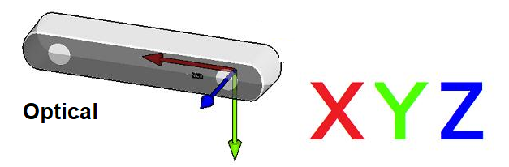
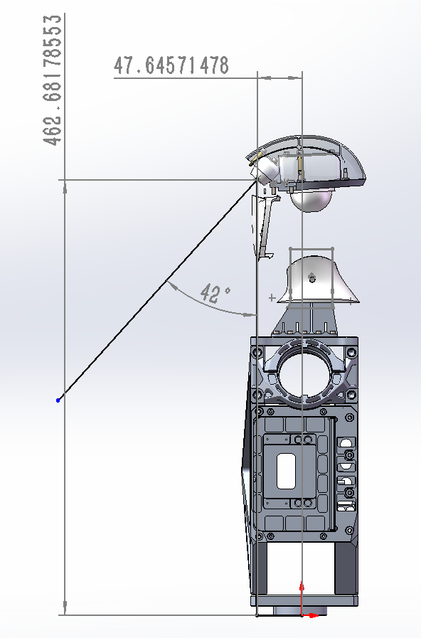
설치와 화면 확인
- PC2에 librealsense 설치사용 전에 로봇의 NX(PC2)에
librealsense를 설치합니다. Jetson은librealsense/doc/installation_jetson.md, 일반 Ubuntu 18 · 20 · 22는doc/installation.md를 따릅니다. - realsense-viewer연결이 정상이면 터미널에서
realsense-viewer를 실행해 영상 · 깊이 · IMU를 봅니다. Windows에서는librealsense/releases의Intel.RealSense.Viewer.exe를 씁니다. - ROSROS 드라이버는
https://github.com/IntelRealSense/realsense-ros입니다 (사용법은 README). 평소에는 SDK로 받아 처리하기를 문서는 권장합니다.
USB 3.x와 USB 2.x 연결에서 고를 수 있는 해상도 · 속도가 다릅니다. 문서의 realsense-viewer 화면 예: USB 3.2에서 깊이 848 × 480 · RGB 1280 × 720, 30 fps / USB 2.1에서 깊이 · RGB 640 × 480, 15 fps. 외부 PC에 USB 2.0으로 연결할 때는 허브 어댑터를 거쳐야 SDK로 정상 수신된다고 문서는 적고 있으며, G1의 NX에는 바로 연결해 쓸 수 있습니다.
WeGo가 다룬 G1 중에는 PC2의 부팅 서비스(realsense2_camera ROS 노드)가 D435i를 먼저 열어 사용자 프로그램이 Device or resource busy로 실패한 경우가 있었습니다.
그 서비스를 멈춘 뒤 여십시오. 다른 기능이 그 서비스에 기대고 있을 수 있으니 영향을 먼저 확인하십시오.
SDK로 받기
SDK는 https://github.com/IntelRealSense/librealsense이며, librealsense-2.54.1/examples를 참고합니다. 문서의 예제(get_camera_imu_stream_test)가 하는 일은 다음과 같습니다.
# 1) 장치 찾기 · 센서 옵션 설정 rs2::context ctx; rs2::device dev = ctx.query_devices()[0]; # Stereo Module: VISUAL_PRESET=HIGH_ACCURACY, ENABLE_AUTO_EXPOSURE=1, EMITTER_ENABLED=1, LASER_POWER=150 # RGB Module: ENABLE_AUTO_EXPOSURE=1 # 2) 스트림 구성 후 콜백으로 시작 rs2::config cfg; cfg.enable_stream(RS2_STREAM_DEPTH, 640, 480, RS2_FORMAT_Z16, 60); cfg.enable_stream(RS2_STREAM_INFRARED, 1, 640, 480, RS2_FORMAT_Y8, 60); # 2번(오른쪽)도 같게 cfg.enable_stream(RS2_STREAM_COLOR, 848, 480, RS2_FORMAT_BGR8, 60); cfg.enable_stream(RS2_STREAM_GYRO, RS2_FORMAT_MOTION_XYZ32F, 400); cfg.enable_stream(RS2_STREAM_ACCEL, RS2_FORMAT_MOTION_XYZ32F, 200); rs2::pipeline pipe; auto profile = pipe.start(cfg, stream_callback); # 3) 깊이 스트림 내부 파라미터(fx, fy, cx, cy) 읽기, temporal 필터(HOLES_FILL 6, ALPHA 0.4, DELTA 20) auto intr = profile.get_stream(RS2_STREAM_DEPTH).as<rs2::video_stream_profile>().get_intrinsics();
# CMakeLists.txt 핵심
find_package(realsense2 REQUIRED)
find_package(OpenCV REQUIRED)
target_link_libraries(${PROJECT_NAME} ${realsense2_LIBRARY} ${OpenCV_LIBS})
문서 예제는 필터를 거친 depth_frame_filtered를 만들고도 화면에는 원래 깊이 영상을 띄웁니다. 필터 결과를 쓰려면 그 프레임으로 cv::Mat을 만드십시오.
SLAM · 내비게이션 서비스 (EDU) 문서 SDK
unitree_sdk2의 RPC 클라이언트로 지도 작성 · 위치 재추정 · 자세 목표 이동을 부르고, 결과는 DDS 토픽으로 받습니다. 사용 전에 다음을 지키십시오.
- 로봇과 같은 LAN 대역에 있어야 합니다.
- 앱에서 G1의
unitree_slam과lidar_driver서비스가 켜져 있는지 확인합니다. - 인터페이스로 호출하는 동안 앱의 내비게이션 기능을 함께 쓰지 마십시오.
SLAM이 내는 점군 · 위치의 좌표 원점은 Mid360 IMU 좌표계의 원점입니다. X축 양의 방향은 로봇 정면, Z축은 연직 위입니다.
- 특징이 풍부한 정적인 실내 평지, X · Y 방향 각각 45 m 미만에서만 쓰십시오. 큰 지도는 연산 자원을 많이 써 기본 운동 제어 서비스에 영향을 줄 수 있습니다.
- 격한 동작은 위치 추정을 잃게 합니다. 이 인터페이스를 쓰는 동안 로봇을 거칠게 움직이지 마십시오.
- 교육 · 연구용 기능입니다. 산업 현장 적용은 권장하지 않으며 영업 담당에 문의하십시오.
사전 점검
- 원시 라이다 점군(
rt/utlidar/cloud_livox_mid360)과 IMU(rt/utlidar/imu_livox_mid360)에 이상이 없는지 봅니다. - 머리가 연직 위를 향하고 흔들림 없이 고정되어 있는지 확인합니다.
- 로봇을 세워 둔 채 같은 정적인 수직 벽을 비출 때 앞뒤 프레임의 점군이 층으로 갈라져 보이거나, IMU 선속도 · 가속도 값이 크게 이상하면 라이다 수리를 영업 담당에 요청하십시오.
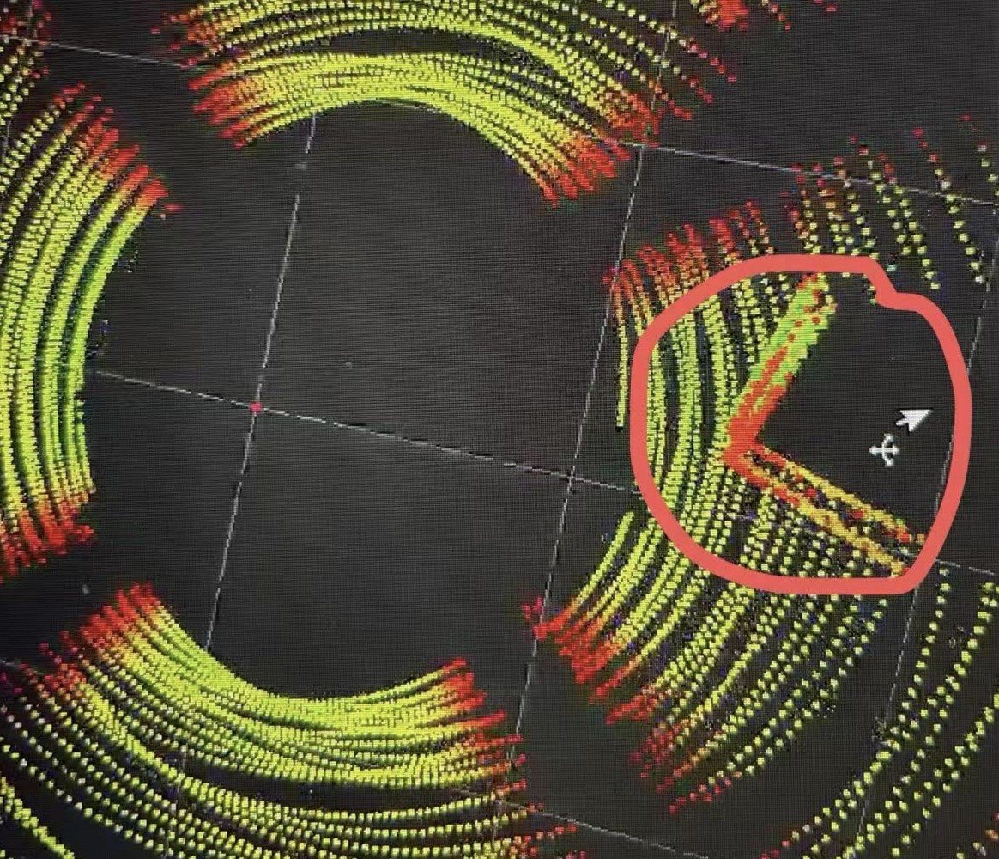
네트워크 설정
- 유선 연결PC를 G1 내부 스위치(어깨 포트)에 랜선으로 연결하고, PC IP를
192.168.123.x(기존 장치와 겹치지 않게)로 설정합니다. - NX 접속NX(PC2)의 기본 IP는
192.168.123.164입니다.ssh <계정>@192.168.123.164로 접속합니다. 계정 정보는 기술 지원이 안내합니다. - 연결 확인
ping 192.168.123.120(라이다),ping 192.168.123.161(PC1)이 응답해야 합니다. 이 서비스는 라이다 IP192.168.123.120을 씁니다.
서비스와 API
서비스 이름 SERVICE_NAME = "slam_operate", API 버전 "1.0.0.1". 요청 파라미터와 응답은 모두 JSON 문자열이며, 요청은 항상 {"data": {…}} 형태입니다.
| api id · 기능 | 요청 data | 비고 |
|---|---|---|
| 1801 지도 작성 시작 | "slam_type": "indoor" (고정값) | |
| 1802 지도 작성 종료 | "address": "/home/unitree/test.pcd" — PCD 저장 경로 | 디스크 절약을 위해 파일 이름을 test1.pcd ~ test10.pcd로 정해 덮어쓰기를 권장 |
| 1804 위치 초기화 (재추정 시작) | x · y · z(평행 이동), q_x · q_y · q_z · q_w(회전), address(불러올 PCD 경로) | 예제 값: 0, 0, 0 / 0, 0, 0, 1 |
| 1102 자세 목표 이동 | targetPose: x · y · z · q_x · q_y · q_z · q_w, "mode": 1 (고정값) | 목표는 현재 위치에서 10 m 이내. 로봇은 직선으로 이동. 라이다 시야 때문에 장애물 높이는 50 cm 이상이어야 함 |
| 1201 이동 일시 정지 | 빈 객체 {} | |
| 1202 이동 재개 | 빈 객체 {} | |
| 1901 SLAM 종료 | 빈 객체 {} |
| 응답 필드 (모든 api 공통) | 뜻 |
|---|---|
succeed : bool | 실행 성공 여부 |
errorCode : int | 오류 코드. 0 = 정상 |
info : string | 설명 |
data : object | 그 밖의 데이터 |
# 요청 예: 1804 위치 초기화 {"data": {"x": 0.0, "y": 0.0, "z": 0.0, "q_x": 0.0, "q_y": 0.0, "q_z": 0.0, "q_w": 1.0, "address": "/home/unitree/test.pcd"}} # 요청 예: 1102 목표 이동 {"data": {"targetPose": {"x": 2.0, "y": 0.0, "z": 0.0, "q_x": 0.0, "q_y": 0.0, "q_z": 0.0, "q_w": 1.0}, "mode": 1}}
토픽
| 토픽 | 타입 · 내용 |
|---|---|
rt/unitree/slam_mapping/points | sensor_msgs PointCloud2_ · 지도 작성 중 실시간 점군 |
rt/unitree/slam_mapping/odom | nav_msgs Odometry_ · 지도 작성 중 실시간 오도메트리 |
rt/unitree/slam_relocation/points | sensor_msgs PointCloud2_ · 재추정 중 실시간 점군 |
rt/unitree/slam_relocation/odom | nav_msgs Odometry_ · 재추정 중 실시간 오도메트리 |
rt/unitree/slam_relocation/global_map | sensor_msgs PointCloud2_ · 전체 지도. 재추정 시작 후 한 번만 보냄 |
rt/slam_info | std_msgs String_ (JSON) · 실시간 방송 정보 |
rt/slam_key_info | std_msgs String_ (JSON) · 실행 결과 피드백 |
두 JSON 토픽은 공통으로 type · errorCode · sec · nanosec · info · data를 가지며 type으로 구분합니다. errorCode가 0이 아니면 info에 설명이 들어옵니다.
type (토픽) | data 내용 |
|---|---|
robot_datart/slam_info · 기본 상태 | motorTemp[] 모터 온도(°C) · motorError[] 모터 오류 코드 · batteryAmp 전류(mA) · batteryPower 잔량(%) · batteryTemp(°C) · batteryVol 전압(mV) · sportMode · gaitType(현재 미지원, −1) · cpuTemp 평균 코어 온도(°C) · cpuUsage(%) · cpuMemory 메모리 사용률(%) · cpuFrequency 평균 코어 주파수(MHz) |
pos_info · mapping_infort/slam_info · 위치 | currentPose {x · y · z · q_x · q_y · q_z · q_w} · pcdName · address(PCD 경로) |
ctrl_infort/slam_info · 이동 제어 | targetNodeName · is_arrived · startPose · targetPose {x · y · z · roll · pitch · yaw} ·
stateMachine {state(예: "follow") · isOpenPlan · isBack · isClimbStairs · isRotate · isPause(일시 정지 여부) · ctrName(예: "pid") · vx · vy · vyaw} ·
obsInfo {state 장애물 여부 · time 누적 시간(s)} · progress {used_time · last_time · completion_percentage} |
task_resultrt/slam_key_info · 단일 작업 결과 | targetNodeName(목표) · is_arrived(도착 여부) |
지도 작성 → 위치 재추정 → 이동
- 준비앱에서
unitree_slam·lidar_driver를 켜고, 앱 내비게이션은 쓰지 않습니다. 위의 사전 점검을 마칩니다. - 지도 작성 시작 — 1801
{"data": {"slam_type": "indoor"}}을 보냅니다. 지도로 만들 영역을 로봇이 천천히 움직이는 동안rt/unitree/slam_mapping/points·odom으로 진행을 봅니다. - 지도 작성 종료 — 1802
address에 PCD 저장 경로를 주면 지도가 그 파일로 저장됩니다. - 위치 재추정 — 1804로봇의 현재 위치 · 자세(지도 좌표계)와 불러올 PCD 경로를 보냅니다. 시작 후 전체 지도가
rt/unitree/slam_relocation/global_map으로 한 번 오고, 현재 위치는rt/slam_info의pos_info로 계속 들어옵니다. - 목표 이동 — 1102
targetPose를 보냅니다 (10 m 이내, 직선 이동). 도착 여부는rt/slam_key_info의task_result.is_arrived로 확인하고 다음 목표를 보냅니다. - 일시 정지 · 재개 — 1201 · 1202이동 중 멈추거나 이어 갑니다.
- 종료 — 1901작업이 끝나면 SLAM을 닫습니다.
예제 — keyDemo
문서의 예제 프로그램(unitree_slam_example, keyDemo)은 Unitree SLAM and Navigation Services Interface 문서에 첨부된 unitree_slam_example 압축 파일에 있습니다. 압축을 푼 unitree_slam/ 아래 소스 example/src/keyDemo.cpp, RViz2 설정 rviz2/mapping.rviz · relocation.rviz(고정 프레임 map, ROS 2 토픽 /unitree/slam_mapping/* · /unitree/slam_relocation/*). SDK
NX나 개인 PC에 unitree_sdk2를 먼저 설치하십시오.
cd unitree_slam/example && mkdir build && cd build
cmake .. && make
./keyDemo enxf8e43b808e06 # 인자: 192.168.123.x 대역의 네트워크 카드 이름
| 키 | 동작 |
|---|---|
| q · w | 지도 작성 시작(1801) · 종료(1802, /home/unitree/test.pcd에 저장) |
| a | 위치 재추정 시작(1804, 원점 · /home/unitree/test.pcd) |
| s | pos_info로 받은 현재 자세를 작업 목록에 추가 |
| d | 목록을 차례로 1102로 실행. 각 목표에서 is_arrived를 기다리며, 마지막 목표에 닿으면 목록을 뒤집어 왕복을 계속합니다 |
| f | 작업 목록 비우기 |
| z · x | 이동 일시 정지(1201) · 재개(1202) |
| 그 밖의 키 | 작업 스레드를 멈추고 SLAM 종료(1901). 프로그램 종료는 Ctrl+C |
d를 누르면 로봇이 기록한 지점들을 끝없이 왕복합니다. 멈추려면 z(일시 정지)나 다른 키(SLAM 종료)를 누르고, 리모컨으로 언제든 개입할 수 있게 준비하십시오.
# 클라이언트 작성 형태 (keyDemo.cpp) class SlamClient : public unitree::robot::Client { public: SlamClient() : Client("slam_operate", false) {} void Init() { SetApiVersion("1.0.0.1"); UT_ROBOT_CLIENT_REG_API_NO_PROI(1801); # 1802 · 1804 · 1102 · 1201 · 1202 · 1901 도 같이 등록 } }; SlamClient c; c.Init(); c.SetTimeout(10.0f); std::string data; int32_t code = c.Call(1801, R"({"data": {"slam_type": "indoor"}})", data); # code 0 = 호출 성공, data = 응답 JSON # Python (unitree_sdk2py 소스 기준 형태, 실행 확인 안 함) import json from unitree_sdk2py.rpc.client import Client class SlamClient(Client): def __init__(self): super().__init__("slam_operate", False) def Init(self): self._SetApiVerson("1.0.0.1") # SDK 철자 그대로 for api in (1801, 1802, 1804, 1102, 1201, 1202, 1901): self._RegistApi(api, 0) c = SlamClient(); c.SetTimeout(10.0); c.Init() # 먼저 ChannelFactoryInitialize(0, "<NIC>") code, data = c._Call(1801, json.dumps({"data": {"slam_type": "indoor"}}))
Call의 반환값은 RPC 자체의 상태이고, 서비스의 성공 여부는 응답 JSON의 succeed · errorCode로 판단합니다. 자주 보는 RPC 상태 코드는 다음과 같습니다. SDK
| 코드 | 뜻 | 코드 | 뜻 |
|---|---|---|---|
| 3102 | 요청 전송 오류 | 3104 | 호출 시간 초과 |
| 3103 | 등록하지 않은 api id | 3203 | 서버에 구현되지 않은 api |
| 3202 | 서버 내부 오류 | 3204 | api 파라미터 오류 |
음성 · 오디오
G1 상체의 마이크 배열 · 스피커 · RGB 조명은 voice 서비스가 관리합니다. 개발자는 AudioClient로 음성 합성(TTS) · 오디오 재생 · 볼륨 · 조명을 부르고,
rt/audio_msg로 음성 인식(ASR) 결과를, UDP 멀티캐스트로 마이크 원음을 받습니다.
하드웨어 문서
| 장치 | 사양 |
|---|---|
| RGB 조명 (머리) | 256색 |
| 스피커 (가슴) | 8 Ω · 3 W (최대 5 W) |
| 마이크 배열 (목 아래) | 4개, 간격 20 mm, 준선형 배치 실리콘 마이크 |
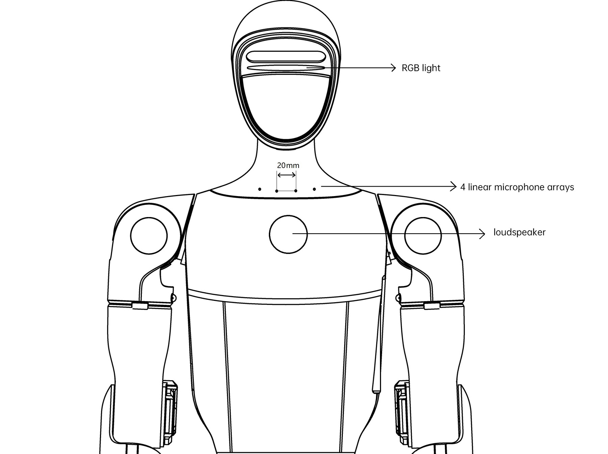
버전 요구 · 제공 기능 문서
| 용도 | 필요한 버전 |
|---|---|
| 2차 개발 (AudioClient · ASR) | Vui_Service 2.0.3.8 이상 · Vui Module 2.0.0.3 이상. 낮으면 기술 지원에 업그레이드를 요청합니다 |
| 앱 플레이어로 오디오 넣기 | 앱 1.6.1 이상 (Android · iOS) · Vui Service 2.0.4.4 · WebRTC Bridge 1.0.7.5 · Audio Hub 1.0.1.0 이상 |
| 음성 비서 (GPT 대화) | 펌웨어 1.3.0 이상 + 인터넷 연결 |
- ASR (음성 인식): 기본은 비스트리밍 모델, 로컬 오프라인. 방위각 · 감정 · 화자 정보를 함께 줍니다.
- TTS (음성 합성): 로컬 오프라인, 화자 선택 가능.
- 오디오 스트림 재생 · 볼륨 · 조명 색 제어. 이 기능들을 조합해 자체 음성 대화 프로그램을 만듭니다.
AudioClient API 문서 SDK
클래스 unitree::robot::g1::AudioClient (헤더 unitree/robot/g1/audio/g1_audio_client.hpp). 서비스 이름 voice, API 버전 1.0.0.0,
lease 없음 (SDK 커밋 8e1b927, 2026-10-30 기준). 모든 함수는 성공하면 0, 실패하면 오류 코드를 돌려줍니다. 사용 전 Init()을 부르고, 예제는 SetTimeout(10.0f)를 씁니다 (2장의 공통 API).
| 함수 (API ID) | 설명 · 인자 | 비고 |
|---|---|---|
int32_t TtsMaker(const std::string& text, int32_t speaker_id) (1001) | 문자열을 음성으로 합성해 바로 재생. speaker_id: 0 = 중국어 화자, 1 = 영어 화자 | 중 · 영 혼합 문장은 지원하지 않음. 요청마다 index가 1씩 증가 |
int32_t GetVolume(uint8_t& volume) (1005) | 시스템 볼륨을 읽어 volume(0 ~ 100)에 넣습니다 | 응답 JSON의 volume |
int32_t SetVolume(uint8_t volume) (1006) | 시스템 볼륨 설정, 0 ~ 100 | |
int32_t LedControl(uint8_t R, uint8_t G, uint8_t B) (1010) | 조명 색. 각 0 ~ 255 | 호출 간격 200 ms 초과 필요 |
int32_t PlayStream(std::string app_name, std::string stream_id, std::vector<uint8_t> pcm_data) (1003) | app_name: 응용 이름. stream_id: 같은 ID면 캐시에 이어 붙여 계속 재생, 다른 ID면 지금 재생을 끊고 새로 재생. pcm_data: PCM 16 kHz · 모노 · 16비트 | 형식이 다르면 재생되지 않습니다 |
int32_t PlayStop(std::string app_name) (1004) | 그 응용의 재생을 멈춥니다 | SDK 구현은 결과와 상관없이 항상 0 반환 |
| (1002 · ASR) | 클라이언트가 등록만 하고 감싼 함수는 없습니다 | 인식 결과는 토픽으로 받음 |
오디오 서비스 고유 오류 코드: 100 = 잘못된 인자 (g1_audio_error.hpp). 그 밖의 3xxx 코드는 2장의 RPC 공통 오류입니다. SDK
#include <unitree/robot/g1/audio/g1_audio_client.hpp>
unitree::robot::ChannelFactory::Instance()->Init(0, argv[1]);
unitree::robot::g1::AudioClient client;
client.Init(); client.SetTimeout(10.0f);
uint8_t vol; client.GetVolume(vol); client.SetVolume(80);
client.TtsMaker("Hello. I'm a robot from Unitree Robotics.", 1); // 영어 화자, 자동 재생
client.LedControl(0, 255, 0); // 다음 호출까지 200 ms 넘게
Python SDK
from unitree_sdk2py.g1.audio.g1_audio_client import AudioClient. 함수 이름 · API ID가 같고, 반환만 다릅니다.
| 함수 | 반환 |
|---|---|
TtsMaker(text, speaker_id) · SetVolume(volume) · LedControl(R, G, B) | 코드 (int) |
GetVolume() | (code, dict) — 실패하면 (code, None) |
PlayStream(app_name, stream_id, pcm_data: bytes) | (code, data) |
PlayStop(app_name) | 항상 0 |
PCM 스트림 재생 문서 SDK
- WAV 읽기16 kHz · 모노 · 16비트인지 확인합니다. C++ 예제의
ReadWave()(example/g1/audio/wav.hpp), Python의read_wav()(example/g1/audio/wav.py)가 표본율 · 채널 수를 돌려줍니다. - 나눠 보내기SDK 예제는 같은
stream_id(현재 시각 ms)로 96000바이트(3초 분량)씩 나눠PlayStream을 부르고, 조각 사이에 1초 쉽니다. 같은 ID라서 캐시에 이어져 끊김 없이 재생됩니다. - 멈추기다 보냈거나 중간에 끊으려면
PlayStop(app_name)을 부릅니다. 새stream_id로PlayStream을 부르면 지금 재생이 끊기고 바로 바뀝니다.
# Python: 예제의 도우미 함수 그대로 pcm, rate, ch, ok = read_wav("speech.wav") # rate == 16000 and ch == 1 확인 play_pcm_stream(client, pcm, "example") # 96000 B 조각, 같은 stream_id, 1 s 간격 client.PlayStop("example")
- 문서 예제는 WAV 전체를
PlayStream한 번에 보내지만, SDK 예제는 위처럼 3초 조각으로 나눠 보냅니다. 긴 파일은 SDK 방식을 쓰십시오. - SDK C++ 예제(
8e1b927에서도 같음)는 마지막에PlayStop(stream_id)를 부르지만 인자는app_name입니다.PlayStop("example")처럼PlayStream에 준 응용 이름을 넘기십시오.PlayStop은 항상 0을 돌려주므로 이 실수는 반환값으로 드러나지 않습니다. - 문서 본문은 TTS가 "현재 중국어만 지원"이라고 쓰면서 같은 페이지에서
speaker_id1을 영어 화자로 설명합니다. SDK 예제는 영어 TTS(speaker_id1)를 실제로 호출합니다. - Python
TtsMaker는self.tts_index += self.tts_index로 되어 있어index가 0에서 늘지 않습니다 (C++은 1씩 증가).
음성 인식 결과 · 재생 상태 문서
로봇 마이크가 켜져 있으면(앱이나 리모컨으로 호출어 모드로 전환) 내장 마이크 + 오프라인 ASR 모듈이 주변 음성을 인식합니다.
결과는 토픽 rt/audio_msg(타입 std_msgs::msg::dds_::String_, 헤더 unitree/idl/ros2/String_.hpp)에 JSON 문자열로 실립니다.
{ "index": 1, "timestamp": 29319303490, "text": "Hello", "angle": 90, "speaker_id": 0,
"sense": "unknown", "confidence": 0.95, "language": "en-US", "is_final": true }
| 필드 | 형 | 뜻 | 필드 | 형 | 뜻 |
|---|---|---|---|---|---|
index | 정수 | 메시지 고유 일련번호 | sense | 문자열 | 감정 인식 결과 |
timestamp | 정수 | 타임스탬프 | confidence | 실수 | 신뢰도 |
text | 문자열 | 인식 결과 | language | 문자열 | 언어 종류 |
angle | 정수 | 음원 방위각 0 ~ 180 | is_final | 정수 | 끝 표시 (스트리밍 모드용, 기본은 비스트리밍) |
speaker_id | 정수 | 화자 인식 결과 |
재생 상태는 {"play_state": 1} 형태의 JSON으로, play_state 0 = 재생 멈춤 · 1 = 재생 시작입니다. 문서는 이 메시지가 실리는 토픽 이름을 밝히지 않습니다.
void asr_handler(const void* msg) {
auto* m = (std_msgs::msg::dds_::String_*)msg;
std::cout << m->data() << std::endl; // JSON 문자열 — 직접 파싱
}
unitree::robot::ChannelSubscriber<std_msgs::msg::dds_::String_> sub("rt/audio_msg");
sub.InitChannel(asr_handler);
마이크 원음 받기 문서 SDK
문서 본문에는 설명이 없고 예제 코드에만 있는 기능입니다. 마이크 원음은 UDP 멀티캐스트 그룹 239.168.123.161, 포트 5555로 흘러나옵니다.
예제는 16 kHz · 16비트 · 모노 PCM으로 받아 5초를 record.wav에 저장합니다.
- 소켓 열기UDP 소켓을
INADDR_ANY:5555에 bind합니다. - 그룹 가입
IP_ADD_MEMBERSHIP으로239.168.123.161에 가입합니다. 이때 인터페이스는 192.168.123.x 주소를 가진 로컬 카드여야 합니다 (예제의get_local_ip_for_multicast()가 이 주소를 찾습니다). - 읽기
recvfrom으로 받은 바이트를 int16 표본으로 이어 붙입니다. 1초 = 16000 × 2바이트.
음성 비서와의 관계 문서
펌웨어 1.3.0 이상의 G1은 인터넷에 연결되면 GPT 기반 음성 비서(잡담 · 동작 · 음악 재생 등)를 씁니다. 자체 음성 프로그램을 만들 때 알아 둘 동작입니다.
| 항목 | 동작 |
|---|---|
| 모드 전환 | 리모컨 L1 + L2 동시에, 또는 앱 [기기]-[데이터]-[오디오]-[음성 비서] |
| 호출어 모드 | "Hello Robot"으로 깨우면 여러 번 자유롭게 대화. 15초 동안 소리가 없으면 끝나고 다시 깨워야 합니다. 조용한 곳에 적합 |
| 버튼 모드 | 호출어 없이 L2 + SELECT를 누르는 동안 녹음, 떼면 그 구간을 강제로 인식. 시끄러운 곳에 적합 |
| 공통 키 | 모든 모드에서 L2 + SELECT 깨우기, L1 + SELECT 강제 중단 |
| 조명 신호 | 소리를 들으면 파란 불, 명령을 받으면 초록 불이 숨 쉬듯 깜빡입니다. 말해도 깜빡이지 않으면 소리가 들어가지 않은 것입니다 |
| 오프라인 판별 | L2 + SELECT로 한 번 깨웠을 때 "Hello, I am here"라고 답하면 GPT가 연결되지 않은 오프라인 음성 모드입니다 |
| 대화 종료 | 프로그램이 잠들고 녹음을 멈춥니다 |
- 인식률을 높이려면 로봇 정면(마이크 구멍 방향) 1 m 이내에서 말합니다.
- 스피커가 이야기 · 음악을 재생하는 동안에는 음성 인식이 잘 되지 않습니다. 재생이 끝난 뒤 말하거나 L1 + SELECT로 끊습니다.
자체 프로그램에서도
PlayStream·TtsMaker재생과 인식 구간이 겹치지 않게 설계하십시오. - 질문에 답이 없거나 늦으면 GPT 연결 상태와, 날씨처럼 인터넷 검색이 필요한 질문인지 확인합니다.
앱 플레이어로 오디오 넣기 문서
앱에서 직접 녹음하거나 외부 오디오 파일을 가져와 재생합니다. 위치: Unitree Explore 앱 [go] → [More Functions] → [Player].
| 항목 | 요구 사항 |
|---|---|
| 형식 | WAV · 16 kHz · 모노 (스테레오는 재생 문제가 생길 수 있음) |
| 화자 (Speaker) | Stanley — 문서는 기기 음성 전체가 이 화자를 쓴다고만 적습니다 |
| 권장 | 음성을 합성할 때 볼륨을 100%로 해 재생 음량을 최대로 합니다 |
| 제한 | 파일 10 MB 이하 · 길이 3분 이하 |
예제 실행 SDK
| 예제 | 하는 일 |
|---|---|
g1_audio_client_example <카드> (C++) | rt/audio_msg 구독 → 볼륨 읽기 · 100으로 설정 → 중국어 · 영어 TTS → test.wav 재생 → 조명 초록 · 끔 · 파랑 → 마이크 5초 녹음(record.wav)과 ASR 결과 출력을 계속 |
g1_audio_client_example.py <카드> | 볼륨 85 설정 → WaveHand()로 손 흔들기 → 중국어 TTS → 조명 빨강 · 초록 · 파랑 |
g1_audio_client_play_wav.py <카드> <wav> | 16 kHz 모노 WAV를 조각 스트림으로 재생 후 정지 |
g1_audio_client_example (ROS 2) | unitree_ros2/example의 같은 기능 (2장) |
cd unitree_sdk2/build # 예제가 ../example/g1/audio/test.wav 를 상대 경로로 엽니다 ./bin/g1_audio_client_example enxf8e43b808e06 cd ~/unitree_sdk2_python # Python 예제는 이 폴더에서 python3 example/g1/audio/g1_audio_client_play_wav.py enxf8e43b808e06 speech.wav
g1_audio_client_example.py는 LocoClient.WaveHand()를 부릅니다. 운동 제어 중인 로봇이 손을 흔드므로 팔 주변을 비우고 실행하십시오.
C++ 예제는 처음에 볼륨을 100으로 올리니 가까이에서 듣지 마십시오.
빠른 참조
네트워크
| PC1 운동 제어 | 192.168.123.161 |
| PC2 개발 (Orin NX) | 192.168.123.164 |
| 라이다 MID-360 | 192.168.123.120 |
| 내 PC (권장) | 192.168.123.99 |
DDS 도메인 0 · 예제의 첫 인자 = 이 대역의 네트워크 카드 이름
시작 전 확인
- 로봇을 거치대에 매달기
- 리모컨 담당자 대기 (L2+B)
- 저수준: L2+R2 디버그 → L2+A 확인
- 고수준 · 팔 덧씌움: 운동 제어 상태 (디버그 아님)
- 속도 · 게인 · 가중치는 작게 시작
SDK 예제 실행 파일 (unitree_sdk2/example/g1, 8e1b927 · 2026-10-30, 빌드 후 build/bin) SDK
| 실행 파일 | 소스 | 장 |
|---|---|---|
g1_ankle_swing_example | low_level/g1_ankle_swing_example.cpp | 4장 |
g1_dual_arm_example | low_level/g1_dual_arm_example.cpp (yaml-cpp 0.6 이상일 때만 빌드) | 4장 |
g1_termination | low_level/terminations.cpp (Boost program_options 있을 때만) | 4장 |
g1_loco_client | high_level/g1_loco_client_example.cpp | 5장 |
g1_arm5_sdk_dds_example · g1_arm7_sdk_dds_example | high_level/ — 23자유도(팔 5관절) · 29자유도(팔 7관절) | 5장 |
g1_arm_action_example | high_level/g1_arm_action_example.cpp (Boost 있을 때만) | 5장 |
g1_userctrl_dds_example | high_level/g1_userctrl_dds_example.cpp | 5장 |
g1_hand_sdk_example | high_level/g1_hand_sdk_example.cpp (2026-03-12 판 a4e2d9e에는 없음) | 7장 |
g1_dex3_example | dex3/g1_dex3_example.cpp | 7장 |
g1_audio_client_example | audio/g1_audio_client_example.cpp | 9장 |
g1_agv_client_example · g1d_arm_example · g1d_height_control · g1d_waist_example | g1d/ — 바퀴(AGV) 하체와 높이 조절이 있는 G1 변형용으로 보이는 예제. G1 문서에 설명이 없어 이 설명서에서 다루지 않습니다 | — |